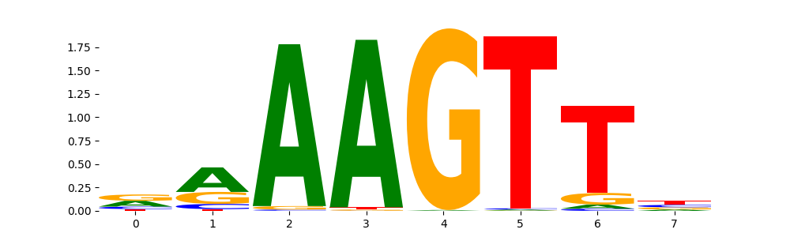

Detecting and Clustering Seqlets with Modisco¶
In this tutorial, we will explore how to use Modisco within the Decima framework to detect and cluster seqlets—short, high-scoring regions of DNA that are important for model predictions. Modisco (Motif Discovery from Importance Scores) is a powerful tool designed to analyze attribution scores from deep learning models. It identifies recurring patterns, or “motifs,” by first locating seqlets—short subsequences with high attribution—and then clustering these seqlets based on similarity. This process helps uncover biologically meaningful sequence motifs that drive the model’s predictions, providing insights into regulatory elements and sequence features learned by the model. We will walk through the steps of running Modisco on attribution data, from detecting seqlets to clustering them into motifs, and interpreting the results.
CLI API¶
In this tutorial, we’ll walk through a practical example of using Decima’s CLI API to analyze neuronal cells and uncover how they differ from non-neuronal cells based on the major regulators. Let’s first list avaliable cell types:
! decima query-cell "cell_type.str.contains('neuron') and organ == 'CNS' and disease == 'healthy'"
cell_type tissue organ disease study dataset region subregion celltype_coarse n_cells total_counts n_genes size_factor train_pearson val_pearson test_pearson
agg_1112 CGE interneuron Amygdala_Amygdala CNS healthy jhpce#tran2021 brain_atlas Amygdala Amygdala 674 17421456.0 16954 42512.927350555474 0.9454484906394379 0.8549755331049285 0.8667663764982964
agg_1113 CGE interneuron Amygdala_Basolateral nuclear group (BLN) - lateral nucleus - La CNS healthy SCR_016152 brain_atlas Amygdala Basolateral nuclear group (BLN) - lateral nucleus - La 3653 43170604.0 17556 43343.31426365281 0.9556543498602063 0.8580799006688026 0.8653460664237342
agg_1114 CGE interneuron Amygdala_Bed nucleus of stria terminalis and nearby - BNST CNS healthy SCR_016152 brain_atlas Amygdala Bed nucleus of stria terminalis and nearby - BNST 618 6152593.0 16370 44713.64203304153 0.9520635955734341 0.852188720222159 0.858968806922992
agg_1115 CGE interneuron Amygdala_Central nuclear group - CEN CNS healthy SCR_016152 brain_atlas Amygdala Central nuclear group - CEN 4146 49400198.0 17671 44026.860058199665 0.9563052838304861 0.8593824369699917 0.8633745639889623
agg_1116 CGE interneuron Amygdala_Corticomedial nuclear group (CMN) - anterior cortical nucleus - CoA CNS healthy SCR_016152 brain_atlas Amygdala Corticomedial nuclear group (CMN) - anterior cortical nucleus - CoA 929 26964535.0 17136 42858.8950204464 0.9550498609794265 0.8605038580533132 0.8684496521271442
agg_1117 CGE interneuron Amygdala_basolateral nuclear group (BLN) - basolateral nucleus (basal nucleus) - BL CNS healthy SCR_016152 brain_atlas Amygdala basolateral nuclear group (BLN) - basolateral nucleus (basal nucleus) - BL 4827 53518064.0 17716 44281.06098179032 0.9559516728570443 0.8567887668317138 0.8635709259614972
agg_1118 CGE interneuron Amygdala_basolateral nuclear group (BLN) - basomedial nucleus (accessory basal nucleus) - BM CNS healthy SCR_016152 brain_atlas Amygdala basolateral nuclear group (BLN) - basomedial nucleus (accessory basal nucleus) - BM 3328 43659654.0 17730 45262.446914261665 0.9542446453364304 0.8568247176176679 0.8600818558559432
agg_1119 CGE interneuron Amygdala_corticomedial nuclear group - CMN CNS healthy SCR_016152 brain_atlas Amygdala corticomedial nuclear group - CMN 4434 51772973.0 17758 44807.696973438295 0.9570021114498952 0.8556658443449039 0.8641266258892707
agg_1120 CGE interneuron Basal ganglia_Body of the Caudate - CaB CNS healthy SCR_016152 brain_atlas Basal ganglia Body of the Caudate - CaB 187 3122777.0 15683 44838.93941730748 0.9494639797626426 0.850804855581977 0.8553423638918904
agg_1121 CGE interneuron Basal ganglia_Globus pallidus (GP) - External segment of globus pallidus - GPe CNS healthy SCR_016152 brain_atlas Basal ganglia Globus pallidus (GP) - External segment of globus pallidus - GPe 107 1401962.0 14986 44440.308958941176 0.9432617394411168 0.8448997012052522 0.8476170302061452
agg_1122 CGE interneuron Basal ganglia_Globus pallidus (GP) - Internal segment of globus pallidus - GPi CNS healthy SCR_016152 brain_atlas Basal ganglia Globus pallidus (GP) - Internal segment of globus pallidus - GPi 16 121804.0 10739 39259.57497605263 0.858884474221949 0.7726171135663182 0.7644669154369795
agg_1123 CGE interneuron Basal ganglia_Nucleus Accumbens - NAC CNS healthy SCR_016152 brain_atlas Basal ganglia Nucleus Accumbens - NAC 92 1157081.0 14512 43915.45804097595 0.9406993659470231 0.8463012081482822 0.8484284417222941
agg_1124 CGE interneuron Basal ganglia_Nucleus accumbens CNS healthy jhpce#tran2021 brain_atlas Basal ganglia Nucleus accumbens 294 6261733.0 16363 44435.4512744186 0.939417438111905 0.8392186623819058 0.8527706997362122
agg_1125 CGE interneuron Basal ganglia_Putamen - Pu CNS healthy SCR_016152 brain_atlas Basal ganglia Putamen - Pu 425 4717570.0 16183 45001.20451703623 0.9514341635683559 0.8539321245006076 0.855428781988558
agg_1126 CGE interneuron Basal ganglia_septal nuclei - SEP CNS healthy SCR_016152 brain_atlas Basal ganglia septal nuclei - SEP 1879 21882302.0 17497 46007.24312666675 0.9527114190907388 0.8532013539249315 0.8558978082659188
agg_1127 CGE interneuron Basal ganglia_substantia innominata and nearby nuclei - SI CNS healthy SCR_016152 brain_atlas Basal ganglia substantia innominata and nearby nuclei - SI 765 7857686.0 16676 45181.13280453827 0.9528570987403407 0.8528510578046272 0.857340287067751
agg_1128 CGE interneuron Cerebral cortex_Anterior Olfactory Nucleus - AON CNS healthy SCR_016152 brain_atlas Cerebral cortex Anterior Olfactory Nucleus - AON 2403 39067991.0 17616 45931.36796447533 0.9546916552053556 0.8522756501950615 0.8582181016005722
agg_1130 CGE interneuron Cerebral cortex_Anterior cingulate cortex CNS healthy PRJNA434002 brain_atlas Cerebral cortex Anterior cingulate cortex 1644 7947983.0 15944 45552.80934538369 0.899805511496978 0.8093617097115822 0.8000548329236696
agg_1131 CGE interneuron Cerebral cortex_Anterior cingulate cortex - ACC CNS healthy SCR_016152 brain_atlas Cerebral cortex Anterior cingulate cortex - ACC 3716 58054934.0 17749 45840.820597657774 0.9534435475418815 0.853738798083762 0.8559544023158703
agg_1132 CGE interneuron Cerebral cortex_Anterior parahippocampal gyrus (AG) - Lateral entorhinal cortex - LEC CNS healthy SCR_016152 brain_atlas Cerebral cortex Anterior parahippocampal gyrus (AG) - Lateral entorhinal cortex - LEC 5912 81002476.0 17880 45675.62135987685 0.9541385127816103 0.8500039325320953 0.8568608826029541
agg_1133 CGE interneuron Cerebral cortex_Anterior parahippocampal gyrus/posterior part (APH) - Medial entorhinal cortex - MEC CNS healthy SCR_016152 brain_atlas Cerebral cortex Anterior parahippocampal gyrus/posterior part (APH) - Medial entorhinal cortex - MEC 11071 153176261.0 18055 44934.06085029526 0.9564513772455941 0.8578279194724209 0.8613450453709655
agg_1134 CGE interneuron Cerebral cortex_Caudal cingulate gyrus (CgGC) - A23 CNS healthy SCR_016152 brain_atlas Cerebral cortex Caudal cingulate gyrus (CgGC) - A23 4324 45019739.0 17656 45110.451368021866 0.9539821503006068 0.8559550389720095 0.857177067428263
agg_1135 CGE interneuron Cerebral cortex_Cingulate gyrus/retrosplenial (CgGrs) - A29-A30 CNS healthy SCR_016152 brain_atlas Cerebral cortex Cingulate gyrus/retrosplenial (CgGrs) - A29-A30 6632 39702720.0 17615 46139.58724353013 0.9494599332961685 0.8495667411664938 0.8459029902797677
agg_1136 CGE interneuron Cerebral cortex_Cuneus/caudal part - Peristriate Cortex - V2 CNS healthy SCR_016152 brain_atlas Cerebral cortex Cuneus/caudal part - Peristriate Cortex - V2 3560 45381187.0 17654 45224.39627648392 0.9537145582307842 0.8516769565904151 0.8558226304003664
agg_1137 CGE interneuron Cerebral cortex_Cuneus/rostral part - Area Prostriata - Pro CNS healthy SCR_016152 brain_atlas Cerebral cortex Cuneus/rostral part - Area Prostriata - Pro 2859 35796270.0 17617 46132.638278870865 0.953210222113289 0.8503846763672066 0.8517721300452203
agg_1138 CGE interneuron Cerebral cortex_Dorsalateral prefrontal cortex CNS healthy http://psychencode.org brain_atlas Cerebral cortex Dorsalateral prefrontal cortex 1423 4616796.0 15660 48569.99403936421 0.9117588212407522 0.7869315086586617 0.8134432687774173
agg_1140 CGE interneuron Cerebral cortex_Dorsolateral prefrontal cortex CNS healthy GSE129308 brain_atlas Cerebral cortex Dorsolateral prefrontal cortex 3811 7049199.0 15518 45472.90946388328 0.9123433698437873 0.8126679354513144 0.8000875424359442
agg_1141 CGE interneuron Cerebral cortex_Dorsolateral prefrontal cortex CNS healthy SCR_002001 brain_atlas Cerebral cortex Dorsolateral prefrontal cortex 10725 68649325.0 14884 41705.65745832643 0.8781713598569268 0.8191804553888763 0.799212985469408
agg_1142 CGE interneuron Cerebral cortex_Dorsolateral prefrontal cortex CNS healthy jhpce#tran2021 brain_atlas Cerebral cortex Dorsolateral prefrontal cortex 567 12085629.0 16977 43519.60306913432 0.9478968648853212 0.8553751683830699 0.8666560185155503
agg_1145 CGE interneuron Cerebral cortex_Entorhinal cortex CNS healthy GSE160936 brain_atlas Cerebral cortex Entorhinal cortex 1047 4387962.0 15399 40719.46283580456 0.9286596800224921 0.8366923122084351 0.8507547006018672
agg_1147 CGE interneuron Cerebral cortex_Frontal Cortex CNS healthy GSE163122 brain_atlas Cerebral cortex Frontal Cortex 19 54018.0 8344 33326.7485689139 0.7992434996890754 0.7329329945323536 0.7380634826096151
agg_1148 CGE interneuron Cerebral cortex_Frontal agranular insular cortex - FI CNS healthy SCR_016152 brain_atlas Cerebral cortex Frontal agranular insular cortex - FI 4681 86805040.0 17857 44416.26306035089 0.9557815899225688 0.8595831773838496 0.8640557588613347
agg_1149 CGE interneuron Cerebral cortex_Gyrus rectus (ReG) - Medial orbitofrontal cortex - A14 CNS healthy SCR_016152 brain_atlas Cerebral cortex Gyrus rectus (ReG) - Medial orbitofrontal cortex - A14 1279 31692146.0 17425 45084.21292275218 0.9550103469929688 0.8561271654196 0.8603893866482042
agg_1150 CGE interneuron Cerebral cortex_Inferior frontal gyrus (IFG) - Ventrolateral prefrontal cortex - A44-A45 CNS healthy SCR_016152 brain_atlas Cerebral cortex Inferior frontal gyrus (IFG) - Ventrolateral prefrontal cortex - A44-A45 5033 69465714.0 17848 45994.239910992255 0.9554778167568956 0.8536153597606401 0.8555734610691637
agg_1151 CGE interneuron Cerebral cortex_Inferior temporal gyrus - ITG CNS healthy SCR_016152 brain_atlas Cerebral cortex Inferior temporal gyrus - ITG 5284 72800988.0 17847 45716.37075056562 0.9536311565746031 0.8544356903796938 0.8540222039431139
agg_1152 CGE interneuron Cerebral cortex_Lingual gyrus (LiG) - Primary Visual Cortex - V1C CNS healthy SCR_016152 brain_atlas Cerebral cortex Lingual gyrus (LiG) - Primary Visual Cortex - V1C 2183 22471869.0 17322 45577.36171821733 0.9524809146890161 0.8516653474121149 0.8531071638907382
agg_1153 CGE interneuron Cerebral cortex_Long insular gyri (LIG) - Dysgranular insular cortex - Idg CNS healthy SCR_016152 brain_atlas Cerebral cortex Long insular gyri (LIG) - Dysgranular insular cortex - Idg 5126 82685320.0 17916 46218.94033766634 0.9542202102627187 0.8510695199936927 0.8546741809365636
agg_1154 CGE interneuron Cerebral cortex_Middle Temporal Gyrus - MTG CNS healthy SCR_016152 brain_atlas Cerebral cortex Middle Temporal Gyrus - MTG 11311 151558742.0 18010 45732.36858827974 0.952730565143899 0.8519098774464178 0.8534353362507285
agg_1155 CGE interneuron Cerebral cortex_Middle frontal gyrus (MFG) - A46 CNS healthy SCR_016152 brain_atlas Cerebral cortex Middle frontal gyrus (MFG) - A46 3951 46477496.0 17662 45688.617980936666 0.953364062745528 0.851636584925773 0.8545891176316116
agg_1157 CGE interneuron Cerebral cortex_Occipital Cortex CNS healthy GSE163122 brain_atlas Cerebral cortex Occipital Cortex 171 212716.0 12145 40982.11625428927 0.8832717415790446 0.7948885354834843 0.8225702992204573
agg_1158 CGE interneuron Cerebral cortex_Occipitotemporal (fusiform) gyrus/temporal part (FuGt) - Temporal area TF CNS healthy SCR_016152 brain_atlas Cerebral cortex Occipitotemporal (fusiform) gyrus/temporal part (FuGt) - Temporal area TF 3975 43199557.0 17636 45507.23819226017 0.9532879143459528 0.8533294099175049 0.8554793688418564
agg_1159 CGE interneuron Cerebral cortex_Parietal lobe CNS healthy PRJNA544731 brain_atlas Cerebral cortex Parietal lobe 325 1291000.0 13938 39998.241565767414 0.904521582278289 0.8193605423836186 0.8176628902062328
agg_1161 CGE interneuron Cerebral cortex_Parietal operculum (PaO) - Gustatory cortex - A43 CNS healthy SCR_016152 brain_atlas Cerebral cortex Parietal operculum (PaO) - Gustatory cortex - A43 5024 78701516.0 17892 46142.555314647965 0.9539450591818139 0.8525012196667436 0.855167790430822
agg_1162 CGE interneuron Cerebral cortex_Perirhinal gyrus (PRG) - A35-A36 CNS healthy SCR_016152 brain_atlas Cerebral cortex Perirhinal gyrus (PRG) - A35-A36 3012 51432821.0 17692 45131.31805705638 0.9560632331488161 0.8555943455175027 0.8614218812447207
agg_1163 CGE interneuron Cerebral cortex_Perirhinal gyrus (PRG) - A35-A36 CNS healthy SCR_016152 brain_atlas Cerebral cortex Perirhinal gyrus (PRG) - A35-A36 144 3077583.0 15860 45585.48590990845 0.94770755111472 0.8524365900027768 0.8516278734318256
agg_1164 CGE interneuron Cerebral cortex_Piriform cortex - Pir CNS healthy SCR_016152 brain_atlas Cerebral cortex Piriform cortex - Pir 5304 73012905.0 17813 44873.944335107975 0.9556997945549233 0.8548111905904039 0.860258266899383
agg_1165 CGE interneuron Cerebral cortex_Post-mortem dosolateral BA9 CNS healthy GSE144136 brain_atlas Cerebral cortex Post-mortem dosolateral BA9 2570 5965814.0 16155 47522.884224494985 0.9068086039182727 0.7989989458092506 0.7934264404955423
agg_1167 CGE interneuron Cerebral cortex_Postcentral gyrus (PoCG) - Primary somatosensory cortex - S1C CNS healthy SCR_016152 brain_atlas Cerebral cortex Postcentral gyrus (PoCG) - Primary somatosensory cortex - S1C 4884 62996504.0 17825 46019.31193181314 0.9532354131992904 0.8507754809917075 0.8524770203011584
agg_1168 CGE interneuron Cerebral cortex_Posterior intermediate orbital gyrus (POrG) - Caudal division of OFCi - A13 CNS healthy SCR_016152 brain_atlas Cerebral cortex Posterior intermediate orbital gyrus (POrG) - Caudal division of OFCi - A13 4262 52913409.0 17753 45998.20253059246 0.953615905848413 0.8538107256636154 0.8558539119476164
agg_1169 CGE interneuron Cerebral cortex_Posterior parahippocampal gyrus (PPH) - TH-TL CNS healthy SCR_016152 brain_atlas Cerebral cortex Posterior parahippocampal gyrus (PPH) - TH-TL 4825 76436336.0 17892 46061.05240538032 0.9535840982569064 0.8528944265631686 0.8547035396100106
agg_1170 CGE interneuron Cerebral cortex_Precentral gyrus (PrCG) - Primary motor cortex - M1C CNS healthy SCR_016152 brain_atlas Cerebral cortex Precentral gyrus (PrCG) - Primary motor cortex - M1C 12727 146884792.0 17963 44470.47415111472 0.9547226046429305 0.8572875463413503 0.8600483658810508
agg_1176 CGE interneuron Cerebral cortex_Prefrontal cortex CNS healthy GSE157827 brain_atlas Cerebral cortex Prefrontal cortex 5008 19848445.0 17304 45159.62227579555 0.9393600054559287 0.8396432923534439 0.8450459166741539
agg_1177 CGE interneuron Cerebral cortex_Prefrontal cortex CNS healthy GSE167494 brain_atlas Cerebral cortex Prefrontal cortex 1794 13211024.0 17409 45724.65583715663 0.9469091235910225 0.8594468461006485 0.8649022466659783
agg_1178 CGE interneuron Cerebral cortex_Prefrontal cortex CNS healthy PRJNA434002 brain_atlas Cerebral cortex Prefrontal cortex 1665 9481795.0 16016 45621.72012996503 0.8979547648941134 0.8073909907070784 0.7965111186378239
agg_1179 CGE interneuron Cerebral cortex_Prefrontal cortex CNS healthy PRJNA544731 brain_atlas Cerebral cortex Prefrontal cortex 826 3367041.0 15274 43661.14958487554 0.9051999043253188 0.8133421639122885 0.8088287084809244
agg_1181 CGE interneuron Cerebral cortex_Premotor cortex CNS healthy PRJNA544731 brain_atlas Cerebral cortex Premotor cortex 350 1081458.0 13948 41367.59429187521 0.9021448372916091 0.8212426090282491 0.8128519813702438
agg_1183 CGE interneuron Cerebral cortex_Rostral gyrus (RoG) - Dorsal division of MFC - A32 CNS healthy SCR_016152 brain_atlas Cerebral cortex Rostral gyrus (RoG) - Dorsal division of MFC - A32 5300 48080151.0 17740 45940.14992316566 0.9534549960902643 0.8524659349518056 0.853964641983153
agg_1184 CGE interneuron Cerebral cortex_Short insular gyri - Granular insular cortex - Ig CNS healthy SCR_016152 brain_atlas Cerebral cortex Short insular gyri - Granular insular cortex - Ig 3872 54863803.0 17796 46214.28719021868 0.9535166883859459 0.8496326796851502 0.85317863812959
agg_1186 CGE interneuron Cerebral cortex_Somatosensory cortex CNS healthy GSE160936 brain_atlas Cerebral cortex Somatosensory cortex 582 2485492.0 15425 42287.690403027314 0.9287968390307827 0.832253735985677 0.8485581697182518
agg_1187 CGE interneuron Cerebral cortex_Subcallosal Gyrus (SCG) - Subgenual (subcallosal) division of MFC - A25 CNS healthy SCR_016152 brain_atlas Cerebral cortex Subcallosal Gyrus (SCG) - Subgenual (subcallosal) division of MFC - A25 4614 63037552.0 17855 45818.45271602795 0.9540811285074197 0.8550988434064752 0.8573155675073667
agg_1188 CGE interneuron Cerebral cortex_Subgenual anterior cingulate cortex CNS healthy jhpce#tran2021 brain_atlas Cerebral cortex Subgenual anterior cingulate cortex 2103 51030690.0 17508 42976.54360402118 0.9443716615080814 0.8547308776338655 0.8686303762745468
agg_1189 CGE interneuron Cerebral cortex_Superior Temporal Gyrus - STG CNS healthy SCR_016152 brain_atlas Cerebral cortex Superior Temporal Gyrus - STG 3973 39680274.0 17664 46796.560637020826 0.9516814599996662 0.846081904137383 0.8486666567787549
agg_1191 CGE interneuron Cerebral cortex_Superior occipital gyrus (SOG) - Areas 19 and MT - A19 CNS healthy SCR_016152 brain_atlas Cerebral cortex Superior occipital gyrus (SOG) - Areas 19 and MT - A19 3558 49128087.0 17635 44582.24762740059 0.9546774331036844 0.8554153722545857 0.8592675654958597
agg_1192 CGE interneuron Cerebral cortex_Supramarginal gyrus (SMG) - A40 CNS healthy SCR_016152 brain_atlas Cerebral cortex Supramarginal gyrus (SMG) - A40 5683 70588900.0 17849 45684.68704753316 0.9525630511152248 0.8524892474699114 0.856410536999382
agg_1193 CGE interneuron Cerebral cortex_Supraparietal lobule (SPL) - Posterosuperior (dorsal) parietal cortex - A5-A7 CNS healthy SCR_016152 brain_atlas Cerebral cortex Supraparietal lobule (SPL) - Posterosuperior (dorsal) parietal cortex - A5-A7 4244 59929163.0 17802 45565.49384897568 0.9535026029597516 0.8517910261710867 0.855050582794054
agg_1195 CGE interneuron Cerebral cortex_Temporal Cortex CNS healthy GSE163122 brain_atlas Cerebral cortex Temporal Cortex 15 64527.0 8940 35023.97356147146 0.8093981501317319 0.7433994035544298 0.7365259401750139
agg_1197 CGE interneuron Cerebral cortex_Temporal pole (TP) - Temporopolar area - A38 CNS healthy SCR_016152 brain_atlas Cerebral cortex Temporal pole (TP) - Temporopolar area - A38 5613 90000762.0 17933 45760.61062590786 0.955041605196879 0.8539103329628183 0.8586211004297455
agg_1198 CGE interneuron Cerebral cortex_Transverse temporal gyrus (TTG) - Primary auditory cortex - A1C CNS healthy SCR_016152 brain_atlas Cerebral cortex Transverse temporal gyrus (TTG) - Primary auditory cortex - A1C 3730 48356883.0 17721 45865.96252709382 0.952933906327049 0.850614355382243 0.8530717089075621
agg_1199 CGE interneuron Cerebral cortex_Unclassified CNS healthy GSE140231 brain_atlas Cerebral cortex Unclassified 1284 5120738.0 15935 46875.188661093554 0.8985067250057941 0.7975575635821707 0.787124459767903
agg_1201 CGE interneuron Cerebral cortex_nan CNS healthy GSE160936 brain_atlas Cerebral cortex nan 323 1134778.0 14542 42514.804335946086 0.9226715988771624 0.8225061115769186 0.8428913356673597
agg_1203 CGE interneuron Cerebral cortex_occipital cortex CNS healthy GSE148822 brain_atlas Cerebral cortex occipital cortex 1450 2365826.0 15947 44174.234808531546 0.9329289198690828 0.842346530000887 0.8588884951633767
agg_1205 CGE interneuron Cerebral cortex_occipitotemporal cortex CNS healthy GSE148822 brain_atlas Cerebral cortex occipitotemporal cortex 221 534585.0 13874 42991.07634366376 0.9140926425122817 0.8296886259606971 0.8383202288704407
agg_1206 CGE interneuron Epithalamus_ETH CNS healthy SCR_016152 brain_atlas Epithalamus ETH 57 462804.0 13029 42272.40776782958 0.9162630591666623 0.8259699566888652 0.8256469609995585
agg_1207 CGE interneuron Grey matter_Cla CNS healthy SCR_016152 brain_atlas Grey matter Cla 4536 60807216.0 17792 45427.60235087236 0.9543023070218183 0.8555569763795798 0.8561216537911441
agg_1210 CGE interneuron Grey matter_Motor cortex CNS healthy GSE174332 brain_atlas Grey matter Motor cortex 2248 20697132.0 17490 45333.17698450644 0.9493084819108504 0.8622889159965869 0.8654712716809753
agg_1216 CGE interneuron Hippocampus_CA1 CNS healthy SCR_016152 brain_atlas Hippocampus CA1 1056 24257946.0 17319 44618.662958680216 0.9555082946462914 0.8576587816177856 0.8652458087825374
agg_1217 CGE interneuron Hippocampus_CA1-3 CNS healthy SCR_016152 brain_atlas Hippocampus CA1-3 1399 30321942.0 17654 45952.11000641589 0.9567527824344031 0.8585671841053573 0.8649575860777023
agg_1218 CGE interneuron Hippocampus_CA2-3 CNS healthy SCR_016152 brain_atlas Hippocampus CA2-3 715 12822333.0 17047 45206.041748648764 0.9548881672748422 0.8555328863891355 0.8598074855657095
agg_1219 CGE interneuron Hippocampus_Caudal Hippocampus - CA1-CA3 CNS healthy SCR_016152 brain_atlas Hippocampus Caudal Hippocampus - CA1-CA3 4778 67753760.0 17845 45882.31531766433 0.955659926282955 0.8570173925421611 0.8592597569055781
agg_1220 CGE interneuron Hippocampus_Caudal Hippocampus - CA4-DGC CNS healthy SCR_016152 brain_atlas Hippocampus Caudal Hippocampus - CA4-DGC 3850 43983979.0 17665 44794.33524642079 0.9556424956632221 0.8578986973545148 0.862918582121493
agg_1221 CGE interneuron Hippocampus_DG-CA4 CNS healthy SCR_016152 brain_atlas Hippocampus DG-CA4 402 8642108.0 16547 43857.65063083102 0.9546136843144307 0.8563669085138821 0.8665502487018528
agg_1222 CGE interneuron Hippocampus_Hippocampus CNS healthy jhpce#tran2021 brain_atlas Hippocampus Hippocampus 198 5257259.0 16302 43694.06764200175 0.9439521677670791 0.8483678523458008 0.8615763326636526
agg_1228 CGE interneuron Hippocampus_Rostral CA1-2 CNS healthy SCR_016152 brain_atlas Hippocampus Rostral CA1-2 1446 42457430.0 17602 44976.25496962376 0.956097749881942 0.8592218643503801 0.8613344630958334
agg_1229 CGE interneuron Hippocampus_Rostral CA1-CA3 CNS healthy SCR_016152 brain_atlas Hippocampus Rostral CA1-CA3 2477 34783394.0 17644 45816.66612130956 0.9537393499883875 0.8529414960671245 0.8563138700079675
agg_1230 CGE interneuron Hippocampus_Rostral CA3 CNS healthy SCR_016152 brain_atlas Hippocampus Rostral CA3 1115 31640031.0 17496 43581.95994388098 0.9576084197006921 0.8638239733498098 0.8756803089236452
agg_1231 CGE interneuron Hippocampus_Rostral DG-CA4 CNS healthy SCR_016152 brain_atlas Hippocampus Rostral DG-CA4 1250 19699269.0 17238 44342.12441936283 0.9550084099177176 0.8575808754008807 0.8668830226576822
agg_1232 CGE interneuron Hippocampus_Subicular cortex - Sub CNS healthy SCR_016152 brain_atlas Hippocampus Subicular cortex - Sub 3585 27126836.0 17514 45615.54245224047 0.9544276922096665 0.8541096440988695 0.8547769440559505
agg_1233 CGE interneuron Hippocampus_Uncal CA1-CA3 CNS healthy SCR_016152 brain_atlas Hippocampus Uncal CA1-CA3 4243 24611820.0 17555 46345.80013735496 0.947789066922996 0.8475197737330911 0.8457748240749084
agg_1234 CGE interneuron Hippocampus_Uncal DG-CA4 CNS healthy SCR_016152 brain_atlas Hippocampus Uncal DG-CA4 1003 7418678.0 16817 46113.96045898331 0.9466531252449502 0.8489206492374427 0.848386075106613
agg_1235 CGE interneuron Hypothalamus_mammillary region of HTH (HTHma) CNS healthy SCR_016152 brain_atlas Hypothalamus mammillary region of HTH (HTHma) 19 169012.0 11320 40121.797006176486 0.8856662995090161 0.8037367990593358 0.802838778687612
agg_1236 CGE interneuron Hypothalamus_mammillary region of HTH (HTHma) - mammillary nucleus - MN CNS healthy SCR_016152 brain_atlas Hypothalamus mammillary region of HTH (HTHma) - mammillary nucleus - MN 25 779705.0 13829 40785.11147595983 0.9232268717942013 0.8409818874565197 0.8450233312927798
agg_1237 CGE interneuron Hypothalamus_mammillary region of HTH (HTHma) - tuberal region of HTH - HTHtub CNS healthy SCR_016152 brain_atlas Hypothalamus mammillary region of HTH (HTHma) - tuberal region of HTH - HTHtub 48 380963.0 13326 43897.297697504284 0.9182130253389306 0.82540737747863 0.8295891460044542
agg_1238 CGE interneuron Hypothalamus_preoptic region of HTH - HTHpo CNS healthy SCR_016152 brain_atlas Hypothalamus preoptic region of HTH - HTHpo 161 2149160.0 14796 42700.563378464205 0.9453035875743634 0.8536411059732548 0.8555891746642673
agg_1239 CGE interneuron Hypothalamus_preoptic region of HTH - HTHpo (medial preoptic nucleus/MPN) - supraoptic region of HTH - HTHso (paraventricular nucleus/PV) CNS healthy SCR_016152 brain_atlas Hypothalamus preoptic region of HTH - HTHpo (medial preoptic nucleus/MPN) - supraoptic region of HTH - HTHso (paraventricular nucleus/PV) 174 1690731.0 14915 44460.50946676239 0.9435625577642032 0.840635467118368 0.8449369718665004
agg_1240 CGE interneuron Hypothalamus_supraoptic region of HTH - HTHso CNS healthy SCR_016152 brain_atlas Hypothalamus supraoptic region of HTH - HTHso 1423 31295463.0 17220 42601.00029777002 0.9509127659692103 0.8596009580473339 0.8682058813568818
agg_1241 CGE interneuron Hypothalamus_supraoptic region of HTH - HTHso (anterior hypothalamic nucleus/AHN) - tuberal region of HTH - HTHtub (ventromedial and dorsomedial hypothalamic nucleic nuclei/VMH/DMH) CNS healthy SCR_016152 brain_atlas Hypothalamus supraoptic region of HTH - HTHso (anterior hypothalamic nucleus/AHN) - tuberal region of HTH - HTHtub (ventromedial and dorsomedial hypothalamic nucleic nuclei/VMH/DMH) 35 78228.0 10009 38635.09504756012 0.8334301185707277 0.7367611888109045 0.7452785744752756
agg_1242 CGE interneuron Hypothalamus_supraoptic region of HTH - HTHso (anterior hypothalamic nucleus/AHN) - tuberal region of HTH - HTHtub (ventromedial hypothalamic nucleus/VMH) CNS healthy SCR_016152 brain_atlas Hypothalamus supraoptic region of HTH - HTHso (anterior hypothalamic nucleus/AHN) - tuberal region of HTH - HTHtub (ventromedial hypothalamic nucleus/VMH) 70 1101865.0 14717 45919.72980885698 0.9365659112653159 0.8300524413766043 0.8401280236667859
agg_1243 CGE interneuron Hypothalamus_tuberal region of hypothalamus - HTHtub CNS healthy SCR_016152 brain_atlas Hypothalamus tuberal region of hypothalamus - HTHtub 256 4585880.0 15703 42174.16231383817 0.9483005087846198 0.8557045973739881 0.8668683077339957
agg_1244 CGE interneuron Midbrain_Inferior colliculus and nearby nuclei - IC CNS healthy SCR_016152 brain_atlas Midbrain Inferior colliculus and nearby nuclei - IC 13 164176.0 11372 40071.06497873283 0.8783321251348539 0.7942595405346409 0.804390317549318
agg_1245 CGE interneuron Midbrain_Periaqueductal gray and Dorsal raphe nucleus - PAG-DR CNS healthy SCR_016152 brain_atlas Midbrain Periaqueductal gray and Dorsal raphe nucleus - PAG-DR 78 428240.0 13448 43645.67688472008 0.9206388104215625 0.8297756019894639 0.8304806953604367
agg_1246 CGE interneuron Midbrain_Pretectal region - PTR CNS healthy SCR_016152 brain_atlas Midbrain Pretectal region - PTR 48 586996.0 13256 41778.929031273845 0.9246356299843965 0.8400121394611224 0.8391326953328622
agg_1247 CGE interneuron Midbrain_Substantia Nigra - SN CNS healthy SCR_016152 brain_atlas Midbrain Substantia Nigra - SN 186 1644370.0 15226 44739.80581505666 0.9422287767005032 0.8413773929990623 0.850756673157757
agg_1248 CGE interneuron Midbrain_Superior colliculus and nearby nuclei - SC CNS healthy SCR_016152 brain_atlas Midbrain Superior colliculus and nearby nuclei - SC 350 2935116.0 15645 44486.84828813827 0.948365632376795 0.8491916359469455 0.8522610942498586
agg_1249 CGE interneuron Thalamus_Anterior nuclear complex - ANC CNS healthy SCR_016152 brain_atlas Thalamus Anterior nuclear complex - ANC 415 4628862.0 15887 43221.11709124231 0.9515883777834919 0.8559015219484319 0.8618820915379024
agg_1250 CGE interneuron Thalamus_Lateral nuclear complex (LNC) - ventral anterior nucleus of thalamus - VA CNS healthy SCR_016152 brain_atlas Thalamus Lateral nuclear complex (LNC) - ventral anterior nucleus of thalamus - VA 148 2591291.0 15227 43776.5705289588 0.9479673500619797 0.8515409693913362 0.8579637148668879
agg_1251 CGE interneuron Thalamus_Lateral nuclear complex of thalamus (LNC) - ventral group of lateral nucleus - VLN CNS healthy SCR_016152 brain_atlas Thalamus Lateral nuclear complex of thalamus (LNC) - ventral group of lateral nucleus - VLN 20 465529.0 12608 40458.640982486155 0.9204919458250058 0.833472525331988 0.8363484000790021
agg_1252 CGE interneuron Thalamus_Subthalamic nucleus and nearby - STH CNS healthy SCR_016152 brain_atlas Thalamus Subthalamic nucleus and nearby - STH 12 48930.0 8273 33601.57506628955 0.7916353056350358 0.717005097973611 0.7161454527217833
agg_1253 CGE interneuron Thalamus_Ventral group of lateral nucleus (VLN) - ventral anterior nucleus of thalamus - VA - ventral lateral nucleus of thalamus - VL CNS healthy SCR_016152 brain_atlas Thalamus Ventral group of lateral nucleus (VLN) - ventral anterior nucleus of thalamus - VA - ventral lateral nucleus of thalamus - VL 80 405359.0 13163 42754.84355247164 0.9134407943724896 0.816077952619879 0.8215123320289275
agg_1254 CGE interneuron Thalamus_intralaminar nuclear complex (ILN) - posterior group of intralaminar nuclei (PILN) - centromedian and parafasicular nuclei - CM and Pf CNS healthy SCR_016152 brain_atlas Thalamus intralaminar nuclear complex (ILN) - posterior group of intralaminar nuclei (PILN) - centromedian and parafasicular nuclei - CM and Pf 33 533473.0 13189 40753.83942051242 0.9240632401164864 0.8358777478158795 0.8407518009319821
agg_1255 CGE interneuron Thalamus_lateral nuclear complex of thalamus (LNC) - Pulvinar of thalamus - Pul CNS healthy SCR_016152 brain_atlas Thalamus lateral nuclear complex of thalamus (LNC) - Pulvinar of thalamus - Pul 684 3973754.0 15983 43590.08238875969 0.9445663086463763 0.8503303286245829 0.8516656964747131
agg_1256 CGE interneuron Thalamus_lateral nuclear complex of thalamus (LNC) - lateral posterior nucleus of thalamus - LP CNS healthy SCR_016152 brain_atlas Thalamus lateral nuclear complex of thalamus (LNC) - lateral posterior nucleus of thalamus - LP 226 1410013.0 14621 42843.472174328854 0.9371470188185859 0.8481872653519125 0.8463956972968795
agg_1257 CGE interneuron Thalamus_lateral nuclear complex of thalamus (LNC) - ventral posterior lateral nucleus - VPL CNS healthy SCR_016152 brain_atlas Thalamus lateral nuclear complex of thalamus (LNC) - ventral posterior lateral nucleus - VPL 61 553114.0 13801 43686.118597136345 0.916540300502315 0.8204999882838292 0.8167449767586076
agg_1258 CGE interneuron Thalamus_medial nuclear complex of thalamus (MNC) - mediodorsal nucleus of thalamus + reuniens nucleus (medioventral nucleus) of thalamus - MD + Re CNS healthy SCR_016152 brain_atlas Thalamus medial nuclear complex of thalamus (MNC) - mediodorsal nucleus of thalamus + reuniens nucleus (medioventral nucleus) of thalamus - MD + Re 14 254289.0 11620 39589.30912901781 0.893805244087664 0.7964987890849986 0.7999827705781003
agg_1259 CGE interneuron Thalamus_medial nuclear complex of thalamus (MNC) - mediodorsal nucleus of thalamus - MD CNS healthy SCR_016152 brain_atlas Thalamus medial nuclear complex of thalamus (MNC) - mediodorsal nucleus of thalamus - MD 68 891523.0 14285 44531.72968036648 0.9341282492048123 0.8347986333134049 0.8409491999172779
agg_1260 CGE interneuron Thalamus_posterior nuclear complex of thalamus (PoN) - lateral geniculate nucleus (LG) CNS healthy SCR_016152 brain_atlas Thalamus posterior nuclear complex of thalamus (PoN) - lateral geniculate nucleus (LG) 1116 8879856.0 16606 43993.94471049856 0.9451924316131305 0.8514029501274426 0.8461715340569704
agg_1261 CGE interneuron Thalamus_posterior nuclear complex of thalamus (PoN) - medial geniculate nuclei (MG) CNS healthy SCR_016152 brain_atlas Thalamus posterior nuclear complex of thalamus (PoN) - medial geniculate nuclei (MG) 355 2234733.0 15185 43529.744792294245 0.9363821168798473 0.8477657453423078 0.8410011875784053
agg_1262 CGE interneuron White matter_Unclassifed CNS healthy GSE118257 brain_atlas White matter Unclassifed 48 102149.0 9997 38110.36556036987 0.8459352980352427 0.7713240018194049 0.7659342353072323
agg_1836 Eccentric medium spiny neuron Amygdala_Amygdala CNS healthy jhpce#tran2021 brain_atlas Amygdala Amygdala 253 3498891.0 15519 40448.34183203413 0.9349916890507771 0.8498156882148697 0.8717524868530316
agg_1837 Eccentric medium spiny neuron Amygdala_Basolateral nuclear group (BLN) - lateral nucleus - La CNS healthy SCR_016152 brain_atlas Amygdala Basolateral nuclear group (BLN) - lateral nucleus - La 2614 37373934.0 17392 41638.12221921355 0.946974437450923 0.847991661796929 0.8728311397041211
agg_1838 Eccentric medium spiny neuron Amygdala_Bed nucleus of stria terminalis and nearby - BNST CNS healthy SCR_016152 brain_atlas Amygdala Bed nucleus of stria terminalis and nearby - BNST 4070 61034153.0 17725 43366.55866013142 0.9449832628069204 0.8477951141899623 0.8647579750069853
agg_1839 Eccentric medium spiny neuron Amygdala_Central nuclear group - CEN CNS healthy SCR_016152 brain_atlas Amygdala Central nuclear group - CEN 3691 76250911.0 17745 42044.66933888139 0.9514448017876914 0.8543214296020579 0.876937120815823
agg_1840 Eccentric medium spiny neuron Amygdala_Corticomedial nuclear group (CMN) - anterior cortical nucleus - CoA CNS healthy SCR_016152 brain_atlas Amygdala Corticomedial nuclear group (CMN) - anterior cortical nucleus - CoA 312 9332001.0 16304 41613.063910534125 0.9461576605204305 0.8537505332441399 0.8718902967128986
agg_1841 Eccentric medium spiny neuron Amygdala_basolateral nuclear group (BLN) - basolateral nucleus (basal nucleus) - BL CNS healthy SCR_016152 brain_atlas Amygdala basolateral nuclear group (BLN) - basolateral nucleus (basal nucleus) - BL 991 14693462.0 17096 43349.253663206655 0.9466071511985032 0.8409559911723744 0.8654262663177494
agg_1842 Eccentric medium spiny neuron Amygdala_basolateral nuclear group (BLN) - basomedial nucleus (accessory basal nucleus) - BM CNS healthy SCR_016152 brain_atlas Amygdala basolateral nuclear group (BLN) - basomedial nucleus (accessory basal nucleus) - BM 2136 34214943.0 17486 43531.78569767113 0.9456787682949195 0.8401723315976578 0.8651359242111114
agg_1843 Eccentric medium spiny neuron Amygdala_corticomedial nuclear group - CMN CNS healthy SCR_016152 brain_atlas Amygdala corticomedial nuclear group - CMN 3958 48755555.0 17694 43174.876652443105 0.9506933018097268 0.8516551225422615 0.8731869512180219
agg_1844 Eccentric medium spiny neuron Basal ganglia_Body of the Caudate - CaB CNS healthy SCR_016152 brain_atlas Basal ganglia Body of the Caudate - CaB 1551 39202986.0 17424 41457.74016252917 0.9259798424126457 0.8260169421932617 0.8447155432709379
agg_1845 Eccentric medium spiny neuron Basal ganglia_Globus pallidus (GP) - External segment of globus pallidus - GPe CNS healthy SCR_016152 brain_atlas Basal ganglia Globus pallidus (GP) - External segment of globus pallidus - GPe 1290 35374546.0 17372 41841.67685398771 0.9374765396080563 0.8387183698860925 0.8588994519905235
agg_1846 Eccentric medium spiny neuron Basal ganglia_Nucleus Accumbens - NAC CNS healthy SCR_016152 brain_atlas Basal ganglia Nucleus Accumbens - NAC 2459 55330510.0 17609 42872.9089593033 0.9373280224975074 0.8361335100131294 0.855366592773061
agg_1847 Eccentric medium spiny neuron Basal ganglia_Nucleus accumbens CNS healthy jhpce#tran2021 brain_atlas Basal ganglia Nucleus accumbens 937 19344324.0 16952 41691.59203456692 0.9292516932598761 0.8324143458310376 0.8583836544325235
agg_1848 Eccentric medium spiny neuron Basal ganglia_Putamen - Pu CNS healthy SCR_016152 brain_atlas Basal ganglia Putamen - Pu 1532 39824493.0 17432 41522.77853413851 0.9321374825366149 0.8343397129615645 0.8558908523690969
agg_1849 Eccentric medium spiny neuron Basal ganglia_septal nuclei - SEP CNS healthy SCR_016152 brain_atlas Basal ganglia septal nuclei - SEP 650 9239985.0 16787 43539.592830885056 0.9348948990808218 0.8383143024241715 0.8500947548924618
agg_1850 Eccentric medium spiny neuron Basal ganglia_substantia innominata and nearby nuclei - SI CNS healthy SCR_016152 brain_atlas Basal ganglia substantia innominata and nearby nuclei - SI 5395 95304701.0 17845 42671.29521993991 0.9418578412657839 0.8418476785493142 0.8629907394936818
agg_1851 Eccentric medium spiny neuron Cerebral cortex_Anterior Olfactory Nucleus - AON CNS healthy SCR_016152 brain_atlas Cerebral cortex Anterior Olfactory Nucleus - AON 1904 20326709.0 17272 44304.954065111655 0.9364907667665184 0.8333917083634919 0.8547522246345102
agg_1852 Eccentric medium spiny neuron Cerebral cortex_Dorsolateral prefrontal cortex CNS healthy jhpce#tran2021 brain_atlas Cerebral cortex Dorsolateral prefrontal cortex 91 3594350.0 15539 41081.34436554239 0.935941817114317 0.8406435959927373 0.8686615915475352
agg_1853 Eccentric medium spiny neuron Cerebral cortex_Frontal agranular insular cortex - FI CNS healthy SCR_016152 brain_atlas Cerebral cortex Frontal agranular insular cortex - FI 63 2075917.0 14566 40645.474011381564 0.9323820955609043 0.833562300525369 0.8579783672917262
agg_1854 Eccentric medium spiny neuron Cerebral cortex_Long insular gyri (LIG) - Dysgranular insular cortex - Idg CNS healthy SCR_016152 brain_atlas Cerebral cortex Long insular gyri (LIG) - Dysgranular insular cortex - Idg 14 143115.0 10990 39309.121330738846 0.8589666904382315 0.7575177551708354 0.7780514721975762
agg_1855 Eccentric medium spiny neuron Cerebral cortex_Perirhinal gyrus (PRG) - A35-A36 CNS healthy SCR_016152 brain_atlas Cerebral cortex Perirhinal gyrus (PRG) - A35-A36 1123 18373061.0 17218 43361.51675387646 0.9475325666266081 0.8421233213753856 0.8673991051714353
agg_1856 Eccentric medium spiny neuron Cerebral cortex_Piriform cortex - Pir CNS healthy SCR_016152 brain_atlas Cerebral cortex Piriform cortex - Pir 946 26226854.0 17096 41729.33133861903 0.9486876187321196 0.8511102034939563 0.8741164177181678
agg_1857 Eccentric medium spiny neuron Cerebral cortex_Precentral gyrus (PrCG) - Primary motor cortex - M1C CNS healthy SCR_016152 brain_atlas Cerebral cortex Precentral gyrus (PrCG) - Primary motor cortex - M1C 15 100437.0 10273 37957.500142213736 0.8619401611857915 0.7743646778169242 0.7940092190534478
agg_1858 Eccentric medium spiny neuron Cerebral cortex_Subgenual anterior cingulate cortex CNS healthy jhpce#tran2021 brain_atlas Cerebral cortex Subgenual anterior cingulate cortex 113 4106180.0 15885 41810.112484140525 0.9295512711427354 0.8391536584052428 0.8669023034905983
agg_1859 Eccentric medium spiny neuron Grey matter_Cla CNS healthy SCR_016152 brain_atlas Grey matter Cla 520 8411038.0 16478 43028.1498873797 0.9447777604776917 0.8431661644849828 0.8658352810792844
agg_1860 Eccentric medium spiny neuron Hippocampus_CA1 CNS healthy SCR_016152 brain_atlas Hippocampus CA1 84 1689249.0 14611 42308.78649896261 0.9401621388865626 0.835068666475771 0.8551525609823153
agg_1861 Eccentric medium spiny neuron Hippocampus_CA1-3 CNS healthy SCR_016152 brain_atlas Hippocampus CA1-3 13 293094.0 12278 40954.80075031351 0.8992217596035066 0.7999397475207897 0.8231597817826668
agg_1862 Eccentric medium spiny neuron Hippocampus_Caudal Hippocampus - CA4-DGC CNS healthy SCR_016152 brain_atlas Hippocampus Caudal Hippocampus - CA4-DGC 47 608128.0 12920 39921.87665797351 0.8974663323548234 0.8012118782910058 0.8178549518262455
agg_1863 Eccentric medium spiny neuron Hippocampus_Hippocampus CNS healthy jhpce#tran2021 brain_atlas Hippocampus Hippocampus 31 1109961.0 14099 40557.14662520501 0.9273899109141328 0.8369796109567048 0.8600210861459844
agg_1864 Eccentric medium spiny neuron Hypothalamus_preoptic region of HTH - HTHpo CNS healthy SCR_016152 brain_atlas Hypothalamus preoptic region of HTH - HTHpo 2330 51640744.0 17503 42679.76746648039 0.9409601827280252 0.840348392620232 0.8604579519561675
agg_1865 Eccentric medium spiny neuron Hypothalamus_preoptic region of HTH - HTHpo (medial preoptic nucleus/MPN) - supraoptic region of HTH - HTHso (paraventricular nucleus/PV) CNS healthy SCR_016152 brain_atlas Hypothalamus preoptic region of HTH - HTHpo (medial preoptic nucleus/MPN) - supraoptic region of HTH - HTHso (paraventricular nucleus/PV) 565 8224045.0 16394 43923.72334753606 0.9429273493241412 0.8372983150424523 0.8571441075789635
agg_1866 Eccentric medium spiny neuron Hypothalamus_supraoptic region of HTH - HTHso CNS healthy SCR_016152 brain_atlas Hypothalamus supraoptic region of HTH - HTHso 434 13111606.0 16456 40425.4238586538 0.9385925126325897 0.8460278149754488 0.8663811950707332
agg_1867 Eccentric medium spiny neuron Midbrain_Unclassified CNS healthy GSE157783 brain_atlas Midbrain Unclassified 14 114917.0 9818 36181.714010134245 0.8416212378179837 0.7532149744136349 0.7768524692302888
agg_1868 Eccentric medium spiny neuron Thalamus_Anterior nuclear complex - ANC CNS healthy SCR_016152 brain_atlas Thalamus Anterior nuclear complex - ANC 746 7645113.0 16381 42815.79648292055 0.948484628173975 0.8495568731460875 0.8688807125927387
agg_1869 Eccentric medium spiny neuron Thalamus_Lateral nuclear complex (LNC) - ventral anterior nucleus of thalamus - VA CNS healthy SCR_016152 brain_atlas Thalamus Lateral nuclear complex (LNC) - ventral anterior nucleus of thalamus - VA 541 15930108.0 16787 41523.0893320909 0.9357186759722748 0.83560064088399 0.8572971207166471
agg_1870 Eccentric medium spiny neuron Thalamus_Ventral group of lateral nucleus (VLN) - ventral anterior nucleus of thalamus - VA - ventral lateral nucleus of thalamus - VL CNS healthy SCR_016152 brain_atlas Thalamus Ventral group of lateral nucleus (VLN) - ventral anterior nucleus of thalamus - VA - ventral lateral nucleus of thalamus - VL 20 117737.0 10139 36547.396471567605 0.8471409795821925 0.7721611009725091 0.7850039546751
agg_2491 MGE interneuron Amygdala_Amygdala CNS healthy jhpce#tran2021 brain_atlas Amygdala Amygdala 409 13777101.0 16660 41359.14658121449 0.9444392422568889 0.8517551977241854 0.8676209228410131
agg_2492 MGE interneuron Amygdala_Basolateral nuclear group (BLN) - lateral nucleus - La CNS healthy SCR_016152 brain_atlas Amygdala Basolateral nuclear group (BLN) - lateral nucleus - La 1061 21423455.0 17164 42654.248115680406 0.9542965361867625 0.8613064931579452 0.868815490419042
agg_2493 MGE interneuron Amygdala_Bed nucleus of stria terminalis and nearby - BNST CNS healthy SCR_016152 brain_atlas Amygdala Bed nucleus of stria terminalis and nearby - BNST 166 1827695.0 15158 43981.651675853434 0.9448787686524807 0.8490275914218958 0.8533418570610546
agg_2494 MGE interneuron Amygdala_Central nuclear group - CEN CNS healthy SCR_016152 brain_atlas Amygdala Central nuclear group - CEN 1760 31053477.0 17481 43462.3208404647 0.9543411948300998 0.8600122768296773 0.8660896683249071
agg_2495 MGE interneuron Amygdala_Corticomedial nuclear group (CMN) - anterior cortical nucleus - CoA CNS healthy SCR_016152 brain_atlas Amygdala Corticomedial nuclear group (CMN) - anterior cortical nucleus - CoA 609 21863245.0 16897 41904.97759631928 0.9501737063270455 0.8554128895476135 0.8624338319882185
agg_2496 MGE interneuron Amygdala_basolateral nuclear group (BLN) - basolateral nucleus (basal nucleus) - BL CNS healthy SCR_016152 brain_atlas Amygdala basolateral nuclear group (BLN) - basolateral nucleus (basal nucleus) - BL 1057 19917276.0 17161 42604.6862273155 0.953798483025166 0.860651590728001 0.8698212056355575
agg_2497 MGE interneuron Amygdala_basolateral nuclear group (BLN) - basomedial nucleus (accessory basal nucleus) - BM CNS healthy SCR_016152 brain_atlas Amygdala basolateral nuclear group (BLN) - basomedial nucleus (accessory basal nucleus) - BM 1784 33119571.0 17549 43902.96306371541 0.9523415202656087 0.8535747260467098 0.8655401478053812
agg_2498 MGE interneuron Amygdala_corticomedial nuclear group - CMN CNS healthy SCR_016152 brain_atlas Amygdala corticomedial nuclear group - CMN 1555 28602412.0 17506 43937.34054944343 0.9549364812212998 0.8576155015973854 0.8657168111994817
agg_2499 MGE interneuron Basal ganglia_Globus pallidus (GP) - External segment of globus pallidus - GPe CNS healthy SCR_016152 brain_atlas Basal ganglia Globus pallidus (GP) - External segment of globus pallidus - GPe 14 363931.0 12637 41928.980123337795 0.9143027592379037 0.8152885964659543 0.8212241300910318
agg_2500 MGE interneuron Basal ganglia_Nucleus Accumbens - NAC CNS healthy SCR_016152 brain_atlas Basal ganglia Nucleus Accumbens - NAC 20 385277.0 12598 41170.36162415581 0.9153758703420793 0.8200220156948643 0.8221207128459207
agg_2501 MGE interneuron Basal ganglia_Nucleus accumbens CNS healthy jhpce#tran2021 brain_atlas Basal ganglia Nucleus accumbens 266 5258847.0 16159 43224.232978201646 0.9409286116998999 0.8403845442432132 0.8558643354101686
agg_2502 MGE interneuron Basal ganglia_Putamen - Pu CNS healthy SCR_016152 brain_atlas Basal ganglia Putamen - Pu 191 2779299.0 15551 43920.63540976047 0.9463633844002965 0.8496883400190438 0.8552019086045802
agg_2503 MGE interneuron Basal ganglia_septal nuclei - SEP CNS healthy SCR_016152 brain_atlas Basal ganglia septal nuclei - SEP 1429 24924668.0 17445 45173.37928793731 0.9503952330645382 0.8491060071505037 0.8559314584907406
agg_2504 MGE interneuron Basal ganglia_substantia innominata and nearby nuclei - SI CNS healthy SCR_016152 brain_atlas Basal ganglia substantia innominata and nearby nuclei - SI 667 7412740.0 16709 44750.547047095344 0.948134097855488 0.8506282530575365 0.8574254005579075
agg_2505 MGE interneuron Cerebral cortex_Anterior Olfactory Nucleus - AON CNS healthy SCR_016152 brain_atlas Cerebral cortex Anterior Olfactory Nucleus - AON 3318 59973053.0 17718 44512.25053592313 0.9511866844152911 0.849120218442955 0.8591664689334718
agg_2507 MGE interneuron Cerebral cortex_Anterior cingulate cortex CNS healthy PRJNA434002 brain_atlas Cerebral cortex Anterior cingulate cortex 1995 11117873.0 16081 45179.21648388019 0.8965089340148632 0.804985295590617 0.7957027783688826
agg_2508 MGE interneuron Cerebral cortex_Anterior cingulate cortex - ACC CNS healthy SCR_016152 brain_atlas Cerebral cortex Anterior cingulate cortex - ACC 5271 97368705.0 17869 44188.58976478878 0.9524429055696558 0.8495093943622023 0.8596610836215051
agg_2509 MGE interneuron Cerebral cortex_Anterior parahippocampal gyrus (AG) - Lateral entorhinal cortex - LEC CNS healthy SCR_016152 brain_atlas Cerebral cortex Anterior parahippocampal gyrus (AG) - Lateral entorhinal cortex - LEC 3996 84774183.0 17847 44195.27877407958 0.9517972268850551 0.8516456686194328 0.85921931245538
agg_2510 MGE interneuron Cerebral cortex_Anterior parahippocampal gyrus/posterior part (APH) - Medial entorhinal cortex - MEC CNS healthy SCR_016152 brain_atlas Cerebral cortex Anterior parahippocampal gyrus/posterior part (APH) - Medial entorhinal cortex - MEC 6404 140078426.0 17986 43152.00095627089 0.952323864729667 0.8540251497533076 0.8637559144241678
agg_2511 MGE interneuron Cerebral cortex_Caudal cingulate gyrus (CgGC) - A23 CNS healthy SCR_016152 brain_atlas Cerebral cortex Caudal cingulate gyrus (CgGC) - A23 5856 63802214.0 17702 43234.31566597916 0.9507374146769353 0.8492333031420335 0.8580253936548816
agg_2512 MGE interneuron Cerebral cortex_Cingulate gyrus/retrosplenial (CgGrs) - A29-A30 CNS healthy SCR_016152 brain_atlas Cerebral cortex Cingulate gyrus/retrosplenial (CgGrs) - A29-A30 7676 52516030.0 17650 44293.80571524706 0.9452372411663391 0.8405991797504577 0.8473866556985994
agg_2513 MGE interneuron Cerebral cortex_Cuneus/caudal part - Peristriate Cortex - V2 CNS healthy SCR_016152 brain_atlas Cerebral cortex Cuneus/caudal part - Peristriate Cortex - V2 4257 65645451.0 17659 43356.56955307287 0.9483045548496131 0.843814478212617 0.8552982910193211
agg_2514 MGE interneuron Cerebral cortex_Cuneus/rostral part - Area Prostriata - Pro CNS healthy SCR_016152 brain_atlas Cerebral cortex Cuneus/rostral part - Area Prostriata - Pro 3639 53268136.0 17665 44440.51460839505 0.950149158075856 0.8446572675414704 0.8568222450605039
agg_2515 MGE interneuron Cerebral cortex_Dorsalateral prefrontal cortex CNS healthy http://psychencode.org brain_atlas Cerebral cortex Dorsalateral prefrontal cortex 1922 7247656.0 15683 47343.60549703765 0.9155669978972271 0.7944935628936163 0.8164209537442745
agg_2517 MGE interneuron Cerebral cortex_Dorsolateral prefrontal cortex CNS healthy GSE129308 brain_atlas Cerebral cortex Dorsolateral prefrontal cortex 5070 11510390.0 15658 44053.416859390476 0.9083339555317534 0.807084771763412 0.7952863358833439
agg_2518 MGE interneuron Cerebral cortex_Dorsolateral prefrontal cortex CNS healthy SCR_002001 brain_atlas Cerebral cortex Dorsolateral prefrontal cortex 11974 89196550.0 14877 40375.335298792466 0.8811452953190944 0.8184790850728295 0.8016645574481662
agg_2519 MGE interneuron Cerebral cortex_Dorsolateral prefrontal cortex CNS healthy jhpce#tran2021 brain_atlas Cerebral cortex Dorsolateral prefrontal cortex 645 15038497.0 17036 42352.93122873921 0.9442194590303734 0.849789285525842 0.8665266730067818
agg_2522 MGE interneuron Cerebral cortex_Entorhinal cortex CNS healthy GSE160936 brain_atlas Cerebral cortex Entorhinal cortex 302 581183.0 12130 36486.8464868359 0.8895516477549692 0.8149478849985895 0.8337704432932246
agg_2524 MGE interneuron Cerebral cortex_Frontal Cortex CNS healthy GSE163122 brain_atlas Cerebral cortex Frontal Cortex 16 70172.0 8799 33974.63233778857 0.8118763535481881 0.7528303424561195 0.7481303580267099
agg_2525 MGE interneuron Cerebral cortex_Frontal agranular insular cortex - FI CNS healthy SCR_016152 brain_atlas Cerebral cortex Frontal agranular insular cortex - FI 5772 124639119.0 17927 43459.7015170545 0.9524032671776039 0.8534952362370954 0.8636876625391701
agg_2526 MGE interneuron Cerebral cortex_Gyrus rectus (ReG) - Medial orbitofrontal cortex - A14 CNS healthy SCR_016152 brain_atlas Cerebral cortex Gyrus rectus (ReG) - Medial orbitofrontal cortex - A14 2060 50795925.0 17579 43698.71965590766 0.9513325519725236 0.8504598599771258 0.8580272600405687
agg_2527 MGE interneuron Cerebral cortex_Inferior frontal gyrus (IFG) - Ventrolateral prefrontal cortex - A44-A45 CNS healthy SCR_016152 brain_atlas Cerebral cortex Inferior frontal gyrus (IFG) - Ventrolateral prefrontal cortex - A44-A45 6389 105812032.0 17893 44449.831210324366 0.9508588269489653 0.8461769145046513 0.8547104807046153
agg_2528 MGE interneuron Cerebral cortex_Inferior temporal gyrus - ITG CNS healthy SCR_016152 brain_atlas Cerebral cortex Inferior temporal gyrus - ITG 5185 75602611.0 17783 43909.19926818126 0.950810125857405 0.8496421991852124 0.8581300377260784
agg_2529 MGE interneuron Cerebral cortex_Lingual gyrus (LiG) - Primary Visual Cortex - V1C CNS healthy SCR_016152 brain_atlas Cerebral cortex Lingual gyrus (LiG) - Primary Visual Cortex - V1C 3677 55232602.0 17614 43708.35031940854 0.9456104506863592 0.8400672253493853 0.8503765007105082
agg_2530 MGE interneuron Cerebral cortex_Long insular gyri (LIG) - Dysgranular insular cortex - Idg CNS healthy SCR_016152 brain_atlas Cerebral cortex Long insular gyri (LIG) - Dysgranular insular cortex - Idg 5713 102196545.0 17903 44538.74990246346 0.9521999741486603 0.8494205945292841 0.8579708150521901
agg_2531 MGE interneuron Cerebral cortex_Middle Temporal Gyrus - MTG CNS healthy SCR_016152 brain_atlas Cerebral cortex Middle Temporal Gyrus - MTG 12656 191746732.0 18000 44044.23377219539 0.9502693570547087 0.8466137046651626 0.8555071247129131
agg_2532 MGE interneuron Cerebral cortex_Middle frontal gyrus (MFG) - A46 CNS healthy SCR_016152 brain_atlas Cerebral cortex Middle frontal gyrus (MFG) - A46 5268 68233967.0 17711 43971.19142937117 0.9492405306461207 0.8451499686861522 0.8537464653796999
agg_2534 MGE interneuron Cerebral cortex_Occipitotemporal (fusiform) gyrus/temporal part (FuGt) - Temporal area TF CNS healthy SCR_016152 brain_atlas Cerebral cortex Occipitotemporal (fusiform) gyrus/temporal part (FuGt) - Temporal area TF 5450 64323983.0 17726 43720.55794484247 0.9515917735720116 0.8483050792693729 0.8589048783884909
agg_2535 MGE interneuron Cerebral cortex_Parietal lobe CNS healthy PRJNA544731 brain_atlas Cerebral cortex Parietal lobe 133 569401.0 12468 37595.49960109785 0.8907326466742803 0.8061940525939209 0.8092373729309823
agg_2537 MGE interneuron Cerebral cortex_Parietal operculum (PaO) - Gustatory cortex - A43 CNS healthy SCR_016152 brain_atlas Cerebral cortex Parietal operculum (PaO) - Gustatory cortex - A43 7115 120047210.0 17919 44437.09301091113 0.9512477871447569 0.8451452826679898 0.8548666563138005
agg_2538 MGE interneuron Cerebral cortex_Perirhinal gyrus (PRG) - A35-A36 CNS healthy SCR_016152 brain_atlas Cerebral cortex Perirhinal gyrus (PRG) - A35-A36 1932 37490198.0 17465 43259.31944751696 0.9541909686514075 0.8540303396121026 0.8654366180531673
agg_2539 MGE interneuron Cerebral cortex_Perirhinal gyrus (PRG) - A35-A36 CNS healthy SCR_016152 brain_atlas Cerebral cortex Perirhinal gyrus (PRG) - A35-A36 117 3034731.0 15605 43526.22006701818 0.9473644788454095 0.8522954168059347 0.8593673572726558
agg_2540 MGE interneuron Cerebral cortex_Piriform cortex - Pir CNS healthy SCR_016152 brain_atlas Cerebral cortex Piriform cortex - Pir 3217 57727120.0 17686 43762.436474795206 0.9543255676211085 0.8545999342708804 0.863564845394952
agg_2541 MGE interneuron Cerebral cortex_Post-mortem dosolateral BA9 CNS healthy GSE144136 brain_atlas Cerebral cortex Post-mortem dosolateral BA9 3575 10164175.0 16325 46806.33140707459 0.9069971617382123 0.7983175743353382 0.794815684585161
agg_2543 MGE interneuron Cerebral cortex_Postcentral gyrus (PoCG) - Primary somatosensory cortex - S1C CNS healthy SCR_016152 brain_atlas Cerebral cortex Postcentral gyrus (PoCG) - Primary somatosensory cortex - S1C 6470 100713734.0 17875 44372.39965330401 0.9497085444141861 0.8450959161936977 0.8535719902493208
agg_2544 MGE interneuron Cerebral cortex_Posterior intermediate orbital gyrus (POrG) - Caudal division of OFCi - A13 CNS healthy SCR_016152 brain_atlas Cerebral cortex Posterior intermediate orbital gyrus (POrG) - Caudal division of OFCi - A13 5366 77974838.0 17815 44405.45901697979 0.9502945552662591 0.8463296941825013 0.8550375784224905
agg_2545 MGE interneuron Cerebral cortex_Posterior parahippocampal gyrus (PPH) - TH-TL CNS healthy SCR_016152 brain_atlas Cerebral cortex Posterior parahippocampal gyrus (PPH) - TH-TL 5263 87475500.0 17852 44327.56466231888 0.9519923289438857 0.8498492615752189 0.859266978972963
agg_2546 MGE interneuron Cerebral cortex_Precentral gyrus (PrCG) - Primary motor cortex - M1C CNS healthy SCR_016152 brain_atlas Cerebral cortex Precentral gyrus (PrCG) - Primary motor cortex - M1C 17544 263351574.0 18021 42751.448907934544 0.948569107423063 0.8463142396680147 0.8559714261188668
agg_2552 MGE interneuron Cerebral cortex_Prefrontal cortex CNS healthy GSE157827 brain_atlas Cerebral cortex Prefrontal cortex 4610 21482625.0 17270 43731.54224890505 0.9363855712351603 0.8318806432247126 0.8412160935393553
agg_2553 MGE interneuron Cerebral cortex_Prefrontal cortex CNS healthy GSE167494 brain_atlas Cerebral cortex Prefrontal cortex 1247 10376072.0 17204 44361.72553538063 0.9442885914414952 0.8517201236785358 0.8648145466877852
agg_2554 MGE interneuron Cerebral cortex_Prefrontal cortex CNS healthy PRJNA434002 brain_atlas Cerebral cortex Prefrontal cortex 2511 14863691.0 16162 44673.20279790643 0.8989195129049853 0.8071982631305372 0.8006890898756347
agg_2555 MGE interneuron Cerebral cortex_Prefrontal cortex CNS healthy PRJNA544731 brain_atlas Cerebral cortex Prefrontal cortex 852 4039365.0 15379 43450.098832422605 0.9008645464806034 0.8076373172845014 0.8072548879496675
agg_2557 MGE interneuron Cerebral cortex_Premotor cortex CNS healthy PRJNA544731 brain_atlas Cerebral cortex Premotor cortex 311 1072054.0 13778 39874.7813160123 0.9016052282501837 0.8194735601775744 0.8136381571982871
agg_2559 MGE interneuron Cerebral cortex_Rostral gyrus (RoG) - Dorsal division of MFC - A32 CNS healthy SCR_016152 brain_atlas Cerebral cortex Rostral gyrus (RoG) - Dorsal division of MFC - A32 4570 58857880.0 17731 44069.06350483119 0.9511720782778857 0.8463203838471274 0.8560199802608556
agg_2560 MGE interneuron Cerebral cortex_Short insular gyri - Granular insular cortex - Ig CNS healthy SCR_016152 brain_atlas Cerebral cortex Short insular gyri - Granular insular cortex - Ig 5331 82650726.0 17824 44394.120871907326 0.9509583744999757 0.8462445133654821 0.8571241887907932
agg_2562 MGE interneuron Cerebral cortex_Somatosensory cortex CNS healthy GSE160936 brain_atlas Cerebral cortex Somatosensory cortex 138 253647.0 11822 38266.141208792615 0.8767841346625923 0.7936019959715973 0.8134006209715183
agg_2563 MGE interneuron Cerebral cortex_Subcallosal Gyrus (SCG) - Subgenual (subcallosal) division of MFC - A25 CNS healthy SCR_016152 brain_atlas Cerebral cortex Subcallosal Gyrus (SCG) - Subgenual (subcallosal) division of MFC - A25 6738 111747047.0 17933 44140.288432463174 0.9526334893013195 0.8515236536431087 0.8602446595188639
agg_2564 MGE interneuron Cerebral cortex_Subgenual anterior cingulate cortex CNS healthy jhpce#tran2021 brain_atlas Cerebral cortex Subgenual anterior cingulate cortex 1435 33906681.0 17248 41894.99018499041 0.9415120732425849 0.8510166771030189 0.8651258505145446
agg_2565 MGE interneuron Cerebral cortex_Superior Temporal Gyrus - STG CNS healthy SCR_016152 brain_atlas Cerebral cortex Superior Temporal Gyrus - STG 4693 53745497.0 17740 45035.09601291676 0.9482478863607943 0.8418675581822387 0.8511996261886916
agg_2567 MGE interneuron Cerebral cortex_Superior occipital gyrus (SOG) - Areas 19 and MT - A19 CNS healthy SCR_016152 brain_atlas Cerebral cortex Superior occipital gyrus (SOG) - Areas 19 and MT - A19 4640 67271109.0 17631 42831.45523317643 0.9503792869302212 0.8486348220775979 0.859360564195124
agg_2568 MGE interneuron Cerebral cortex_Supramarginal gyrus (SMG) - A40 CNS healthy SCR_016152 brain_atlas Cerebral cortex Supramarginal gyrus (SMG) - A40 7155 95138168.0 17848 43973.385161914906 0.9504336303557819 0.8461929748397125 0.8578464760178754
agg_2569 MGE interneuron Cerebral cortex_Supraparietal lobule (SPL) - Posterosuperior (dorsal) parietal cortex - A5-A7 CNS healthy SCR_016152 brain_atlas Cerebral cortex Supraparietal lobule (SPL) - Posterosuperior (dorsal) parietal cortex - A5-A7 5630 80193333.0 17797 43742.70207026511 0.9512327178952547 0.8461941179433469 0.8579482598163595
agg_2572 MGE interneuron Cerebral cortex_Temporal pole (TP) - Temporopolar area - A38 CNS healthy SCR_016152 brain_atlas Cerebral cortex Temporal pole (TP) - Temporopolar area - A38 5665 110350485.0 17940 44086.89577677079 0.953708858544873 0.8513824540838272 0.8602810204886354
agg_2573 MGE interneuron Cerebral cortex_Transverse temporal gyrus (TTG) - Primary auditory cortex - A1C CNS healthy SCR_016152 brain_atlas Cerebral cortex Transverse temporal gyrus (TTG) - Primary auditory cortex - A1C 4799 73523279.0 17770 43918.33248256951 0.9502853491865487 0.8458671001525015 0.858757045378173
agg_2574 MGE interneuron Cerebral cortex_Unclassified CNS healthy GSE140231 brain_atlas Cerebral cortex Unclassified 1219 5729012.0 15984 45916.35535647439 0.8957775348525301 0.797054655931438 0.7889163143857955
agg_2575 MGE interneuron Cerebral cortex_nan CNS healthy GSE160936 brain_atlas Cerebral cortex nan 39 82069.0 9206 34840.24746186593 0.8190571869697097 0.7306144898877015 0.7292907453780283
agg_2577 MGE interneuron Cerebral cortex_occipital cortex CNS healthy GSE148822 brain_atlas Cerebral cortex occipital cortex 117 246364.0 12197 40372.85168056861 0.88745766532023 0.7948783763579894 0.821386649779637
agg_2579 MGE interneuron Cerebral cortex_occipitotemporal cortex CNS healthy GSE148822 brain_atlas Cerebral cortex occipitotemporal cortex 70 189834.0 11628 39769.16515969363 0.8818384749014652 0.8031748269991748 0.814351561311026
agg_2580 MGE interneuron Epithalamus_ETH CNS healthy SCR_016152 brain_atlas Epithalamus ETH 12 71885.0 9527 36809.85853759243 0.824422869787946 0.7440895655139182 0.7553679675372315
agg_2581 MGE interneuron Grey matter_Cla CNS healthy SCR_016152 brain_atlas Grey matter Cla 3513 60764194.0 17729 44332.18321962197 0.9527358283259111 0.8525521251468033 0.859701251466556
agg_2584 MGE interneuron Grey matter_Motor cortex CNS healthy GSE174332 brain_atlas Grey matter Motor cortex 3176 40684160.0 17707 43957.55438189328 0.9446516045218407 0.8563721111404717 0.8618527207167933
agg_2590 MGE interneuron Hippocampus_CA1 CNS healthy SCR_016152 brain_atlas Hippocampus CA1 1542 50256065.0 17586 43026.10606620708 0.9497570037975281 0.8548983714813951 0.862305286905649
agg_2591 MGE interneuron Hippocampus_CA1-3 CNS healthy SCR_016152 brain_atlas Hippocampus CA1-3 955 32592685.0 17658 44364.0592027126 0.952760200558601 0.858208550001937 0.8654308552711507
agg_2592 MGE interneuron Hippocampus_CA2-3 CNS healthy SCR_016152 brain_atlas Hippocampus CA2-3 405 12427466.0 16877 43427.36652371909 0.9479364599220131 0.8507258501619306 0.8597478080960826
agg_2593 MGE interneuron Hippocampus_Caudal Hippocampus - CA1-CA3 CNS healthy SCR_016152 brain_atlas Hippocampus Caudal Hippocampus - CA1-CA3 2761 52247733.0 17723 44356.44255419876 0.9482748850948762 0.8491246279731572 0.8545886489562906
agg_2594 MGE interneuron Hippocampus_Caudal Hippocampus - CA4-DGC CNS healthy SCR_016152 brain_atlas Hippocampus Caudal Hippocampus - CA4-DGC 1176 20323114.0 17216 43747.53358399856 0.9473473754132059 0.8467759551726008 0.8565315424490701
agg_2595 MGE interneuron Hippocampus_DG-CA4 CNS healthy SCR_016152 brain_atlas Hippocampus DG-CA4 79 2492901.0 15246 41900.67343524716 0.9395119838587522 0.8493514298178396 0.8589159044795706
agg_2596 MGE interneuron Hippocampus_Hippocampus CNS healthy jhpce#tran2021 brain_atlas Hippocampus Hippocampus 59 2189102.0 15324 42472.04317459105 0.9370775068073622 0.8447930718708813 0.8564417124517391
agg_2602 MGE interneuron Hippocampus_Rostral CA1-2 CNS healthy SCR_016152 brain_atlas Hippocampus Rostral CA1-2 955 41524730.0 17477 43171.938875131724 0.9497339744218967 0.8531800823276372 0.8629519962286984
agg_2603 MGE interneuron Hippocampus_Rostral CA1-CA3 CNS healthy SCR_016152 brain_atlas Hippocampus Rostral CA1-CA3 2237 48236091.0 17688 44226.34157174449 0.9488678749901845 0.8499180831182793 0.8572963944833775
agg_2604 MGE interneuron Hippocampus_Rostral CA3 CNS healthy SCR_016152 brain_atlas Hippocampus Rostral CA3 447 16772147.0 17103 42318.88302627937 0.9465119706715757 0.8572332937695742 0.8677509453487087
agg_2605 MGE interneuron Hippocampus_Rostral DG-CA4 CNS healthy SCR_016152 brain_atlas Hippocampus Rostral DG-CA4 277 7865435.0 16546 42430.00131802814 0.9441027592674103 0.8494269573509831 0.8637403065288809
agg_2606 MGE interneuron Hippocampus_Subicular cortex - Sub CNS healthy SCR_016152 brain_atlas Hippocampus Subicular cortex - Sub 4153 46428577.0 17703 44106.187747494434 0.9523849166612751 0.8547240397425142 0.8596520862346101
agg_2607 MGE interneuron Hippocampus_Uncal CA1-CA3 CNS healthy SCR_016152 brain_atlas Hippocampus Uncal CA1-CA3 2465 21980770.0 17489 44863.81070779017 0.9447083817652235 0.8462578379895598 0.8490324522059823
agg_2608 MGE interneuron Hippocampus_Uncal DG-CA4 CNS healthy SCR_016152 brain_atlas Hippocampus Uncal DG-CA4 335 3643860.0 16148 44055.05574062089 0.9406193799345944 0.8432095721836758 0.8484634729799445
agg_2609 MGE interneuron Hypothalamus_preoptic region of HTH - HTHpo CNS healthy SCR_016152 brain_atlas Hypothalamus preoptic region of HTH - HTHpo 22 453470.0 12617 40599.60295443444 0.9219576086495076 0.8291191541534322 0.8337400408636516
agg_2610 MGE interneuron Hypothalamus_preoptic region of HTH - HTHpo (medial preoptic nucleus/MPN) - supraoptic region of HTH - HTHso (paraventricular nucleus/PV) CNS healthy SCR_016152 brain_atlas Hypothalamus preoptic region of HTH - HTHpo (medial preoptic nucleus/MPN) - supraoptic region of HTH - HTHso (paraventricular nucleus/PV) 16 201362.0 11334 39197.85979581934 0.8912937813689751 0.8032225542810923 0.8073296298291398
agg_2611 MGE interneuron Hypothalamus_supraoptic region of HTH - HTHso CNS healthy SCR_016152 brain_atlas Hypothalamus supraoptic region of HTH - HTHso 1291 34587509.0 17244 41775.70339134899 0.947695036391916 0.8568901031945508 0.8623938798420291
agg_2612 MGE interneuron Hypothalamus_supraoptic region of HTH - HTHso (anterior hypothalamic nucleus/AHN) - tuberal region of HTH - HTHtub (ventromedial hypothalamic nucleus/VMH) CNS healthy SCR_016152 brain_atlas Hypothalamus supraoptic region of HTH - HTHso (anterior hypothalamic nucleus/AHN) - tuberal region of HTH - HTHtub (ventromedial hypothalamic nucleus/VMH) 13 201539.0 11989 42042.031681340275 0.8926159239254491 0.7900437896326049 0.7976018773826827
agg_2613 MGE interneuron Hypothalamus_tuberal region of hypothalamus - HTHtub CNS healthy SCR_016152 brain_atlas Hypothalamus tuberal region of hypothalamus - HTHtub 42 1250352.0 13813 39859.463099401524 0.9325616164071415 0.8405974496687145 0.8524085965817827
agg_2614 MGE interneuron Midbrain_Periaqueductal gray and Dorsal raphe nucleus - PAG-DR CNS healthy SCR_016152 brain_atlas Midbrain Periaqueductal gray and Dorsal raphe nucleus - PAG-DR 48 279415.0 12088 40422.48239700562 0.9015998774703433 0.8083821951494623 0.8145886349206347
agg_2615 MGE interneuron Midbrain_Substantia Nigra - SN CNS healthy SCR_016152 brain_atlas Midbrain Substantia Nigra - SN 24 645604.0 13566 41518.8703956369 0.9212646512029814 0.8310832019975152 0.8374969841343043
agg_2616 MGE interneuron Midbrain_Superior colliculus and nearby nuclei - SC CNS healthy SCR_016152 brain_atlas Midbrain Superior colliculus and nearby nuclei - SC 79 869016.0 13900 41943.6713340587 0.9335775223214702 0.836230212994662 0.8410600633997231
agg_2617 MGE interneuron Thalamus_Anterior nuclear complex - ANC CNS healthy SCR_016152 brain_atlas Thalamus Anterior nuclear complex - ANC 63 1689760.0 14392 40935.765146316844 0.9385291782898756 0.8460285020935135 0.854094876359309
agg_2618 MGE interneuron Thalamus_Lateral nuclear complex (LNC) - ventral anterior nucleus of thalamus - VA CNS healthy SCR_016152 brain_atlas Thalamus Lateral nuclear complex (LNC) - ventral anterior nucleus of thalamus - VA 23 483935.0 12795 41330.96925666164 0.9202418171464944 0.8261269502174232 0.8253395913468182
agg_2619 MGE interneuron Thalamus_Lateral nuclear complex of thalamus (LNC) - ventral group of lateral nucleus - VLN CNS healthy SCR_016152 brain_atlas Thalamus Lateral nuclear complex of thalamus (LNC) - ventral group of lateral nucleus - VLN 15 644299.0 12682 38988.345127600296 0.9101440823448651 0.820951753505128 0.8290122191651943
agg_2620 MGE interneuron Thalamus_lateral nuclear complex of thalamus (LNC) - Pulvinar of thalamus - Pul CNS healthy SCR_016152 brain_atlas Thalamus lateral nuclear complex of thalamus (LNC) - Pulvinar of thalamus - Pul 59 907181.0 14156 42737.54158697253 0.9230276788817333 0.8260353938939361 0.8272422303517075
agg_2621 MGE interneuron Thalamus_lateral nuclear complex of thalamus (LNC) - lateral posterior nucleus of thalamus - LP CNS healthy SCR_016152 brain_atlas Thalamus lateral nuclear complex of thalamus (LNC) - lateral posterior nucleus of thalamus - LP 34 339865.0 12131 39372.36226065725 0.9034367683239668 0.8112611977762655 0.8142495801086926
agg_2622 MGE interneuron Thalamus_medial nuclear complex of thalamus (MNC) - mediodorsal nucleus of thalamus - MD CNS healthy SCR_016152 brain_atlas Thalamus medial nuclear complex of thalamus (MNC) - mediodorsal nucleus of thalamus - MD 20 414741.0 12853 41547.316148435246 0.9089247248871526 0.813595574745492 0.8152544778775622
agg_2623 MGE interneuron Thalamus_posterior nuclear complex of thalamus (PoN) - lateral geniculate nucleus (LG) CNS healthy SCR_016152 brain_atlas Thalamus posterior nuclear complex of thalamus (PoN) - lateral geniculate nucleus (LG) 57 768227.0 13434 40339.8513441331 0.9219632514083475 0.8263116083745812 0.8349479724650578
agg_2624 MGE interneuron White matter_Unclassifed CNS healthy GSE118257 brain_atlas White matter Unclassifed 94 289790.0 11627 41098.134330016575 0.8867654909586433 0.8059356433623136 0.7851502438087337
agg_2653 Medium spiny neuron Amygdala_Amygdala CNS healthy jhpce#tran2021 brain_atlas Amygdala Amygdala 855 16257020.0 16794 40209.40354842709 0.9307548981959526 0.8488615811730392 0.8689605369066653
agg_2654 Medium spiny neuron Amygdala_Basolateral nuclear group (BLN) - lateral nucleus - La CNS healthy SCR_016152 brain_atlas Amygdala Basolateral nuclear group (BLN) - lateral nucleus - La 330 4992951.0 15782 40919.21981550283 0.9427614178501177 0.8466272519178762 0.8656673560635975
agg_2655 Medium spiny neuron Amygdala_Bed nucleus of stria terminalis and nearby - BNST CNS healthy SCR_016152 brain_atlas Amygdala Bed nucleus of stria terminalis and nearby - BNST 14834 231645818.0 18115 44026.663188107996 0.9453419860163621 0.8461001317058413 0.8674271490373949
agg_2656 Medium spiny neuron Amygdala_Central nuclear group - CEN CNS healthy SCR_016152 brain_atlas Amygdala Central nuclear group - CEN 4702 152024109.0 17933 41825.65400418454 0.9506498903765198 0.8583036078560143 0.87445330234001
agg_2657 Medium spiny neuron Amygdala_Corticomedial nuclear group (CMN) - anterior cortical nucleus - CoA CNS healthy SCR_016152 brain_atlas Amygdala Corticomedial nuclear group (CMN) - anterior cortical nucleus - CoA 76 1988757.0 14473 41009.37497395409 0.9374639079699163 0.8459652724097986 0.8661217643696482
agg_2658 Medium spiny neuron Amygdala_basolateral nuclear group (BLN) - basolateral nucleus (basal nucleus) - BL CNS healthy SCR_016152 brain_atlas Amygdala basolateral nuclear group (BLN) - basolateral nucleus (basal nucleus) - BL 41 681582.0 13700 42390.62517590265 0.930301178896936 0.8335883138129021 0.8498381291011784
agg_2659 Medium spiny neuron Amygdala_basolateral nuclear group (BLN) - basomedial nucleus (accessory basal nucleus) - BM CNS healthy SCR_016152 brain_atlas Amygdala basolateral nuclear group (BLN) - basomedial nucleus (accessory basal nucleus) - BM 588 10857517.0 16752 43407.2880995957 0.9413954461547651 0.8491087638861763 0.860187656740274
agg_2660 Medium spiny neuron Amygdala_corticomedial nuclear group - CMN CNS healthy SCR_016152 brain_atlas Amygdala corticomedial nuclear group - CMN 1563 18589476.0 17293 43767.421985488276 0.9475050406764797 0.8500945691307341 0.868188681008702
agg_2661 Medium spiny neuron Basal ganglia_Body of the Caudate - CaB CNS healthy SCR_016152 brain_atlas Basal ganglia Body of the Caudate - CaB 25597 734900951.0 18169 41031.74091339427 0.9130017546169741 0.8094631607687462 0.8330040905587449
agg_2662 Medium spiny neuron Basal ganglia_Globus pallidus (GP) - External segment of globus pallidus - GPe CNS healthy SCR_016152 brain_atlas Basal ganglia Globus pallidus (GP) - External segment of globus pallidus - GPe 11913 421587642.0 18127 41409.19215617373 0.9245205942991978 0.820006356524453 0.8458336457726571
agg_2663 Medium spiny neuron Basal ganglia_Globus pallidus (GP) - Internal segment of globus pallidus - GPi CNS healthy SCR_016152 brain_atlas Basal ganglia Globus pallidus (GP) - Internal segment of globus pallidus - GPi 91 3689378.0 15264 40334.966924483146 0.9258738064983694 0.8220183202800466 0.8471167198181737
agg_2664 Medium spiny neuron Basal ganglia_Nucleus Accumbens - NAC CNS healthy SCR_016152 brain_atlas Basal ganglia Nucleus Accumbens - NAC 22095 556326311.0 18164 42779.16646063976 0.9241007801139076 0.8160594037096315 0.8419305863541408
agg_2665 Medium spiny neuron Basal ganglia_Nucleus accumbens CNS healthy jhpce#tran2021 brain_atlas Basal ganglia Nucleus accumbens 9837 271665829.0 17889 41582.21333344588 0.919599303144343 0.8154028670692957 0.8472977098332947
agg_2666 Medium spiny neuron Basal ganglia_Putamen - Pu CNS healthy SCR_016152 brain_atlas Basal ganglia Putamen - Pu 26169 694166058.0 18170 40849.22367869802 0.9127313224001196 0.8084587312170607 0.8346523973425407
agg_2667 Medium spiny neuron Basal ganglia_septal nuclei - SEP CNS healthy SCR_016152 brain_atlas Basal ganglia septal nuclei - SEP 3686 70583279.0 17863 42869.752774801855 0.9221592113278905 0.8179030901469408 0.8415064589677047
agg_2668 Medium spiny neuron Basal ganglia_substantia innominata and nearby nuclei - SI CNS healthy SCR_016152 brain_atlas Basal ganglia substantia innominata and nearby nuclei - SI 20978 406430174.0 18152 43171.70819204389 0.9356278573993547 0.8355914647959416 0.8580501444882963
agg_2669 Medium spiny neuron Cerebral cortex_Anterior Olfactory Nucleus - AON CNS healthy SCR_016152 brain_atlas Cerebral cortex Anterior Olfactory Nucleus - AON 7146 83678191.0 17914 43899.304433061516 0.9197892629833866 0.8118279846788765 0.838725791865812
agg_2670 Medium spiny neuron Cerebral cortex_Frontal agranular insular cortex - FI CNS healthy SCR_016152 brain_atlas Cerebral cortex Frontal agranular insular cortex - FI 47 1673650.0 14282 40604.468196450885 0.9310316824387254 0.8387474025258079 0.8630838302859096
agg_2671 Medium spiny neuron Cerebral cortex_Perirhinal gyrus (PRG) - A35-A36 CNS healthy SCR_016152 brain_atlas Cerebral cortex Perirhinal gyrus (PRG) - A35-A36 60 1311204.0 14729 43400.63525982828 0.9426515623287082 0.8452776244969754 0.8631129728359953
agg_2672 Medium spiny neuron Cerebral cortex_Piriform cortex - Pir CNS healthy SCR_016152 brain_atlas Cerebral cortex Piriform cortex - Pir 528 13895788.0 16601 41718.898509735314 0.9449645834556754 0.8544810746353554 0.8773903973083115
agg_2673 Medium spiny neuron Cerebral cortex_Precentral gyrus (PrCG) - Primary motor cortex - M1C CNS healthy SCR_016152 brain_atlas Cerebral cortex Precentral gyrus (PrCG) - Primary motor cortex - M1C 13 214428.0 11454 38695.26349160653 0.8924953155417973 0.7998199730247992 0.8148967949524837
agg_2674 Medium spiny neuron Cerebral cortex_Subcallosal Gyrus (SCG) - Subgenual (subcallosal) division of MFC - A25 CNS healthy SCR_016152 brain_atlas Cerebral cortex Subcallosal Gyrus (SCG) - Subgenual (subcallosal) division of MFC - A25 30 418073.0 13063 41585.729968004634 0.8871186460605669 0.7821038738334904 0.816336464253731
agg_2675 Medium spiny neuron Cerebral cortex_Subgenual anterior cingulate cortex CNS healthy jhpce#tran2021 brain_atlas Cerebral cortex Subgenual anterior cingulate cortex 456 24338636.0 17126 41522.34752505473 0.9333821901136405 0.8462980778537625 0.8674585783450169
agg_2677 Medium spiny neuron Grey matter_Cla CNS healthy SCR_016152 brain_atlas Grey matter Cla 441 9430332.0 16466 41163.602945269886 0.921979391685106 0.8201910372875032 0.842843688151027
agg_2678 Medium spiny neuron Hippocampus_CA1 CNS healthy SCR_016152 brain_atlas Hippocampus CA1 40 1049125.0 13959 42169.675836731396 0.9349494469318459 0.8391200271799821 0.8542758399265774
agg_2679 Medium spiny neuron Hippocampus_Caudal Hippocampus - CA4-DGC CNS healthy SCR_016152 brain_atlas Hippocampus Caudal Hippocampus - CA4-DGC 430 6612281.0 15981 41097.34699445523 0.9098959524061087 0.8090072110159198 0.8280726832719776
agg_2680 Medium spiny neuron Hippocampus_Rostral DG-CA4 CNS healthy SCR_016152 brain_atlas Hippocampus Rostral DG-CA4 17 222139.0 11847 39862.89795022213 0.8691071021059862 0.7714996002895943 0.7962472128461958
agg_2681 Medium spiny neuron Hypothalamus_preoptic region of HTH - HTHpo CNS healthy SCR_016152 brain_atlas Hypothalamus preoptic region of HTH - HTHpo 5346 128564800.0 17878 43046.84627750286 0.9441056048503704 0.8421353341456254 0.866689965845226
agg_2682 Medium spiny neuron Hypothalamus_preoptic region of HTH - HTHpo (medial preoptic nucleus/MPN) - supraoptic region of HTH - HTHso (paraventricular nucleus/PV) CNS healthy SCR_016152 brain_atlas Hypothalamus preoptic region of HTH - HTHpo (medial preoptic nucleus/MPN) - supraoptic region of HTH - HTHso (paraventricular nucleus/PV) 1202 21586591.0 17227 44983.99150274918 0.9507961158008243 0.8480169975890431 0.8669422509999024
agg_2683 Medium spiny neuron Hypothalamus_supraoptic region of HTH - HTHso CNS healthy SCR_016152 brain_atlas Hypothalamus supraoptic region of HTH - HTHso 435 13475264.0 16512 40730.18309280418 0.9328893799640929 0.8411270417125518 0.8653686705020206
agg_2684 Medium spiny neuron Midbrain_Unclassified CNS healthy GSE157783 brain_atlas Midbrain Unclassified 13 138924.0 10081 36049.57615815546 0.8472115551978691 0.7544352004514613 0.7771766770288353
agg_2685 Medium spiny neuron Thalamus_Anterior nuclear complex - ANC CNS healthy SCR_016152 brain_atlas Thalamus Anterior nuclear complex - ANC 926 12027800.0 16849 43612.739817779046 0.9535465002330261 0.861691575979908 0.8753609519126483
agg_2686 Medium spiny neuron Thalamus_Lateral nuclear complex (LNC) - ventral anterior nucleus of thalamus - VA CNS healthy SCR_016152 brain_atlas Thalamus Lateral nuclear complex (LNC) - ventral anterior nucleus of thalamus - VA 2743 114224823.0 17803 40855.63847966631 0.9268757598914684 0.8230943566844251 0.848168195849154
agg_2687 Medium spiny neuron Thalamus_Ventral group of lateral nucleus (VLN) - ventral anterior nucleus of thalamus - VA - ventral lateral nucleus of thalamus - VL CNS healthy SCR_016152 brain_atlas Thalamus Ventral group of lateral nucleus (VLN) - ventral anterior nucleus of thalamus - VA - ventral lateral nucleus of thalamus - VL 14 108117.0 10209 37484.94947048898 0.8438314846351331 0.7444397677227123 0.766869932545645
The main arguments for the decima modisco CLI command allow you to customize motif discovery for your specific biological question. The --top-n-markers argument restricts the analysis to the top N marker genes, focusing on the most distinguishing genes for the selected cell types if not provided all genes are used. The --max-seqlets parameter sets an upper limit on the number of seqlets (short, high-scoring regions) extracted per metacluster, which can help manage memory usage and computation time. The --tss-distance option defines the window size (in base pairs) around the transcription start site to consider for motif discovery.
The --tasks argument lets you specify cell types or conditions of interest using a query string, such as "cell_type.str.contains('neuron') and organ == 'CNS' and disease == 'healthy'" to select healthy CNS neurons. The --transform argument determines how attributions are aggregated or contrasted. For example, "specificity" compares the selected tasks (e.g., neurons) against the background (e.g., all other cells), highlighting features specific to the chosen group. Alternatively, "aggregate" simply sums attributions across the selected tasks.
The --batch-size and --num-workers options control parallelization and resource usage during computation. The --model argument selects which model replicate or checkpoint to use, and the -o or --output-prefix sets the path prefix for output files and reports.
! decima modisco \
--top-n-markers 50 \
--max-seqlets 5000 \
--tss-distance 5000 \
--tasks "cell_type.str.contains('neuron') and organ == 'CNS' and disease == 'healthy'" \
--transform "specificity" \
--batch-size 1 \
--model v1_rep0 \
-o example/modisco_neurons
decima - INFO - Using device: 0
decima - INFO - Loading model v1_rep0 and metadata to compute attributions...
Warning: You are sending unauthenticated requests to the HF Hub. Please set a HF_TOKEN to enable higher rate limits and faster downloads.
/home/lala8/code/decima/src/decima/interpret/attributer.py:66: UserWarning: `off_tasks` is not provided. Using all other tasks as off_tasks.
100%|████████████████████████████████████████████| 1/1 [00:00<00:00, 196.70it/s]
Computing attributions...: 8%|█▎ | 4/50 [00:05<00:53, 1.16s/it]decima - WARNING - Gene XRCC5 has low correlation with the model. Pearson: 0.4621304058925145. Be careful with the predictions of the model for this gene. Check `DecimaResult.load().gene_metadata['pearson']` to see the correlation of the gene with the model.
Computing attributions...: 10%|█▋ | 5/50 [00:06<00:48, 1.08s/it]decima - WARNING - Gene FNIP1 has low correlation with the model. Pearson: 0.044592478397006044. Be careful with the predictions of the model for this gene. Check `DecimaResult.load().gene_metadata['pearson']` to see the correlation of the gene with the model.
Computing attributions...: 40%|██████▍ | 20/50 [00:20<00:28, 1.04it/s]decima - WARNING - Gene LRRFIP1 has low correlation with the model. Pearson: 0.4621130932978845. Be careful with the predictions of the model for this gene. Check `DecimaResult.load().gene_metadata['pearson']` to see the correlation of the gene with the model.
Computing attributions...: 70%|███████████▏ | 35/50 [00:34<00:14, 1.04it/s]decima - WARNING - Gene CHD4 has low correlation with the model. Pearson: 0.27165706153002717. Be careful with the predictions of the model for this gene. Check `DecimaResult.load().gene_metadata['pearson']` to see the correlation of the gene with the model.
Computing attributions...: 100%|████████████████| 50/50 [00:49<00:00, 1.00it/s]
decima - INFO - Loading metadata for model v1_rep0...
100%|████████████████████████████████████████████| 1/1 [00:00<00:00, 202.12it/s]
Loading attributions and sequences...: 100%|████| 50/50 [00:09<00:00, 5.47it/s]
2026-05-24 22:09:11,395 - modisco-lite - INFO - Running TFMoDISco version 2.4.0
2026-05-24 22:09:11,400 - modisco-lite - INFO - Extracting seqlets for 50 tasks:
2026-05-24 22:09:11,400 - modisco-lite - INFO - - Smoothing and splitting tracks
2026-05-24 22:09:11,416 - modisco-lite - INFO - - Computing null values with Laplacian null model
2026-05-24 22:09:11,493 - modisco-lite - INFO - - Computing isotonic thresholds
2026-05-24 22:09:11,533 - modisco-lite - INFO - - Refining thresholds
2026-05-24 22:09:11,915 - modisco-lite - INFO - - Extracting seqlets
2026-05-24 22:09:11,977 - modisco-lite - INFO - - Extracting 1296 positive seqlets
2026-05-24 22:09:11,985 - modisco-lite - INFO - - Round 0: Generating coarse resolution affinity matrix for 1296 seqlets
100%|██████████████████████████████████████| 1296/1296 [00:05<00:00, 221.16it/s]
2026-05-24 22:09:26,432 - modisco-lite - INFO - - Round 0: Generating fine resolution affinity matrix for 1296 seqlets and 1296 neighbors
100%|██████████████████████████████████████| 1296/1296 [00:01<00:00, 812.49it/s]
100%|██████████████████████████████████████| 1296/1296 [00:01<00:00, 813.56it/s]
2026-05-24 22:09:29,765 - modisco-lite - INFO - - Round 0: Filtering seqlets by correlation
2026-05-24 22:09:30,596 - modisco-lite - INFO - - Round 0: Density adaptation
2026-05-24 22:09:33,963 - modisco-lite - INFO - - Round 0: Clustering with Leiden algorithm
[Parallel(n_jobs=4)]: Using backend LokyBackend with 4 concurrent workers.
[Parallel(n_jobs=4)]: Done 1 tasks | elapsed: 8.1s
[Parallel(n_jobs=4)]: Done 2 tasks | elapsed: 8.2s
[Parallel(n_jobs=4)]: Done 3 tasks | elapsed: 8.5s
[Parallel(n_jobs=4)]: Done 4 tasks | elapsed: 8.9s
[Parallel(n_jobs=4)]: Done 5 tasks | elapsed: 11.2s
[Parallel(n_jobs=4)]: Done 6 tasks | elapsed: 11.7s
[Parallel(n_jobs=4)]: Done 7 tasks | elapsed: 11.9s
[Parallel(n_jobs=4)]: Done 8 tasks | elapsed: 11.9s
[Parallel(n_jobs=4)]: Done 9 tasks | elapsed: 14.1s
[Parallel(n_jobs=4)]: Done 10 out of 16 | elapsed: 14.5s remaining: 8.7s
[Parallel(n_jobs=4)]: Done 11 out of 16 | elapsed: 14.6s remaining: 6.7s
[Parallel(n_jobs=4)]: Done 12 out of 16 | elapsed: 15.7s remaining: 5.2s
[Parallel(n_jobs=4)]: Done 13 out of 16 | elapsed: 17.2s remaining: 4.0s
[Parallel(n_jobs=4)]: Done 14 out of 16 | elapsed: 18.0s remaining: 2.6s
[Parallel(n_jobs=4)]: Done 16 out of 16 | elapsed: 18.8s finished
2026-05-24 22:09:52,817 - modisco-lite - INFO - Leiden clustering quality for seed 0: 0.16497996248510152
2026-05-24 22:09:52,818 - modisco-lite - INFO - Leiden clustering quality for seed 1: 0.16497996248510152
2026-05-24 22:09:52,818 - modisco-lite - INFO - Leiden clustering quality for seed 2: 0.16497996248510152
2026-05-24 22:09:52,818 - modisco-lite - INFO - Leiden clustering quality for seed 3: 0.16497996248510152
2026-05-24 22:09:52,818 - modisco-lite - INFO - Leiden clustering quality for seed 4: 0.16497996248510152
2026-05-24 22:09:52,818 - modisco-lite - INFO - Leiden clustering quality for seed 5: 0.16497841699037005
2026-05-24 22:09:52,818 - modisco-lite - INFO - Leiden clustering quality for seed 6: 0.16497996248510152
2026-05-24 22:09:52,818 - modisco-lite - INFO - Leiden clustering quality for seed 7: 0.16497996248510152
2026-05-24 22:09:52,818 - modisco-lite - INFO - Leiden clustering quality for seed 8: 0.16497841699037005
2026-05-24 22:09:52,818 - modisco-lite - INFO - Leiden clustering quality for seed 9: 0.16497996248510152
2026-05-24 22:09:52,818 - modisco-lite - INFO - Leiden clustering quality for seed 10: 0.16497841699037005
2026-05-24 22:09:52,818 - modisco-lite - INFO - Leiden clustering quality for seed 11: 0.16497841699037005
2026-05-24 22:09:52,818 - modisco-lite - INFO - Leiden clustering quality for seed 12: 0.16497841699037005
2026-05-24 22:09:52,818 - modisco-lite - INFO - Leiden clustering quality for seed 13: 0.16497996248510152
2026-05-24 22:09:52,818 - modisco-lite - INFO - Leiden clustering quality for seed 14: 0.16497841699037005
2026-05-24 22:09:52,818 - modisco-lite - INFO - Leiden clustering quality for seed 15: 0.16497841699037005
2026-05-24 22:09:52,822 - modisco-lite - INFO - - Round 0: Generating patterns from clusters
Generating patterns from clusters:: 100%|█████████| 3/3 [00:01<00:00, 2.50it/s]
2026-05-24 22:09:54,023 - modisco-lite - INFO - - Round 1: Generating coarse resolution affinity matrix for 1177 seqlets
100%|██████████████████████████████████████| 1177/1177 [00:01<00:00, 691.59it/s]
2026-05-24 22:09:56,334 - modisco-lite - INFO - - Round 1: Generating fine resolution affinity matrix for 1177 seqlets and 1177 neighbors
100%|██████████████████████████████████████| 1177/1177 [00:03<00:00, 301.99it/s]
100%|██████████████████████████████████████| 1177/1177 [00:03<00:00, 302.12it/s]
2026-05-24 22:10:04,268 - modisco-lite - INFO - - Round 1: Density adaptation
2026-05-24 22:10:07,550 - modisco-lite - INFO - - Round 1: Clustering with Leiden algorithm
[Parallel(n_jobs=4)]: Using backend LokyBackend with 4 concurrent workers.
[Parallel(n_jobs=4)]: Done 1 tasks | elapsed: 2.6s
[Parallel(n_jobs=4)]: Done 2 tasks | elapsed: 2.7s
[Parallel(n_jobs=4)]: Done 3 tasks | elapsed: 2.8s
[Parallel(n_jobs=4)]: Done 4 tasks | elapsed: 3.3s
[Parallel(n_jobs=4)]: Done 5 tasks | elapsed: 5.4s
[Parallel(n_jobs=4)]: Done 6 tasks | elapsed: 5.6s
[Parallel(n_jobs=4)]: Done 7 tasks | elapsed: 6.3s
[Parallel(n_jobs=4)]: Done 8 tasks | elapsed: 6.6s
[Parallel(n_jobs=4)]: Done 9 tasks | elapsed: 8.2s
[Parallel(n_jobs=4)]: Done 10 out of 16 | elapsed: 8.4s remaining: 5.0s
[Parallel(n_jobs=4)]: Done 11 out of 16 | elapsed: 9.0s remaining: 4.1s
[Parallel(n_jobs=4)]: Done 12 out of 16 | elapsed: 10.0s remaining: 3.3s
[Parallel(n_jobs=4)]: Done 13 out of 16 | elapsed: 11.9s remaining: 2.7s
[Parallel(n_jobs=4)]: Done 14 out of 16 | elapsed: 12.5s remaining: 1.8s
[Parallel(n_jobs=4)]: Done 16 out of 16 | elapsed: 13.3s finished
2026-05-24 22:10:20,953 - modisco-lite - INFO - Leiden clustering quality for seed 0: 0.14579461848630218
2026-05-24 22:10:20,953 - modisco-lite - INFO - Leiden clustering quality for seed 1: 0.14579461848630218
2026-05-24 22:10:20,953 - modisco-lite - INFO - Leiden clustering quality for seed 2: 0.14574549731222797
2026-05-24 22:10:20,953 - modisco-lite - INFO - Leiden clustering quality for seed 3: 0.14579461848630218
2026-05-24 22:10:20,954 - modisco-lite - INFO - Leiden clustering quality for seed 4: 0.14579461848630218
2026-05-24 22:10:20,954 - modisco-lite - INFO - Leiden clustering quality for seed 5: 0.14579461848630218
2026-05-24 22:10:20,954 - modisco-lite - INFO - Leiden clustering quality for seed 6: 0.14575555412183777
2026-05-24 22:10:20,954 - modisco-lite - INFO - Leiden clustering quality for seed 7: 0.1457554628491135
2026-05-24 22:10:20,954 - modisco-lite - INFO - Leiden clustering quality for seed 8: 0.1457554628491135
2026-05-24 22:10:20,954 - modisco-lite - INFO - Leiden clustering quality for seed 9: 0.14575386301623852
2026-05-24 22:10:20,954 - modisco-lite - INFO - Leiden clustering quality for seed 10: 0.14579461848630218
2026-05-24 22:10:20,954 - modisco-lite - INFO - Leiden clustering quality for seed 11: 0.14579461848630218
2026-05-24 22:10:20,954 - modisco-lite - INFO - Leiden clustering quality for seed 12: 0.14574549731222797
2026-05-24 22:10:20,954 - modisco-lite - INFO - Leiden clustering quality for seed 13: 0.14579461848630218
2026-05-24 22:10:20,954 - modisco-lite - INFO - Leiden clustering quality for seed 14: 0.1457554628491135
2026-05-24 22:10:20,954 - modisco-lite - INFO - Leiden clustering quality for seed 15: 0.14575555412183777
2026-05-24 22:10:20,958 - modisco-lite - INFO - - Round 1: Generating patterns from clusters
Generating patterns from clusters:: 100%|█████████| 3/3 [00:01<00:00, 2.39it/s]
2026-05-24 22:10:22,215 - modisco-lite - INFO - Detecting spurious merging of patterns
Detecting spurious merging of patterns:: 100%|████| 3/3 [00:20<00:00, 6.67s/it]
2026-05-24 22:10:48,094 - modisco-lite - INFO - Filtering and merging patterns
Filtering patterns:: 100%|███████████████████| 25/25 [00:00<00:00, 17184.14it/s]
Computing subpatterns:: 100%|███████████████████| 20/20 [00:56<00:00, 2.80s/it]
2026-05-24 22:11:44,169 - modisco-lite - INFO - - Extracting 2165 negative seqlets
2026-05-24 22:11:44,184 - modisco-lite - INFO - - Round 0: Generating coarse resolution affinity matrix for 2165 seqlets
100%|██████████████████████████████████████| 2165/2165 [00:06<00:00, 350.55it/s]
2026-05-24 22:11:52,971 - modisco-lite - INFO - - Round 0: Generating fine resolution affinity matrix for 2165 seqlets and 2165 neighbors
100%|██████████████████████████████████████| 2165/2165 [00:02<00:00, 812.62it/s]
100%|██████████████████████████████████████| 2165/2165 [00:02<00:00, 809.07it/s]
2026-05-24 22:11:58,536 - modisco-lite - INFO - - Round 0: Filtering seqlets by correlation
2026-05-24 22:11:59,919 - modisco-lite - INFO - - Round 0: Density adaptation
2026-05-24 22:12:05,619 - modisco-lite - INFO - - Round 0: Clustering with Leiden algorithm
[Parallel(n_jobs=4)]: Using backend LokyBackend with 4 concurrent workers.
[Parallel(n_jobs=4)]: Done 1 tasks | elapsed: 16.0s
[Parallel(n_jobs=4)]: Done 2 tasks | elapsed: 16.9s
[Parallel(n_jobs=4)]: Done 3 tasks | elapsed: 17.8s
[Parallel(n_jobs=4)]: Done 4 tasks | elapsed: 17.8s
[Parallel(n_jobs=4)]: Done 5 tasks | elapsed: 23.3s
[Parallel(n_jobs=4)]: Done 6 tasks | elapsed: 24.1s
[Parallel(n_jobs=4)]: Done 7 tasks | elapsed: 24.1s
[Parallel(n_jobs=4)]: Done 8 tasks | elapsed: 25.5s
[Parallel(n_jobs=4)]: Done 9 tasks | elapsed: 30.0s
[Parallel(n_jobs=4)]: Done 10 out of 16 | elapsed: 31.0s remaining: 18.6s
[Parallel(n_jobs=4)]: Done 11 out of 16 | elapsed: 32.0s remaining: 14.5s
[Parallel(n_jobs=4)]: Done 12 out of 16 | elapsed: 33.8s remaining: 11.3s
[Parallel(n_jobs=4)]: Done 13 out of 16 | elapsed: 36.0s remaining: 8.3s
[Parallel(n_jobs=4)]: Done 14 out of 16 | elapsed: 37.7s remaining: 5.4s
[Parallel(n_jobs=4)]: Done 16 out of 16 | elapsed: 41.1s finished
2026-05-24 22:12:46,786 - modisco-lite - INFO - Leiden clustering quality for seed 0: 0.23195018462869912
2026-05-24 22:12:46,786 - modisco-lite - INFO - Leiden clustering quality for seed 1: 0.23199174090026503
2026-05-24 22:12:46,786 - modisco-lite - INFO - Leiden clustering quality for seed 2: 0.23199393024163317
2026-05-24 22:12:46,786 - modisco-lite - INFO - Leiden clustering quality for seed 3: 0.23199483991520736
2026-05-24 22:12:46,786 - modisco-lite - INFO - Leiden clustering quality for seed 4: 0.23199174090026503
2026-05-24 22:12:46,786 - modisco-lite - INFO - Leiden clustering quality for seed 5: 0.2319922332251735
2026-05-24 22:12:46,786 - modisco-lite - INFO - Leiden clustering quality for seed 6: 0.23199458884947163
2026-05-24 22:12:46,786 - modisco-lite - INFO - Leiden clustering quality for seed 7: 0.23058865479166565
2026-05-24 22:12:46,786 - modisco-lite - INFO - Leiden clustering quality for seed 8: 0.23199458884947163
2026-05-24 22:12:46,786 - modisco-lite - INFO - Leiden clustering quality for seed 9: 0.23193260828361367
2026-05-24 22:12:46,786 - modisco-lite - INFO - Leiden clustering quality for seed 10: 0.23195018462869912
2026-05-24 22:12:46,786 - modisco-lite - INFO - Leiden clustering quality for seed 11: 0.23195018462869912
2026-05-24 22:12:46,786 - modisco-lite - INFO - Leiden clustering quality for seed 12: 0.23195018462869912
2026-05-24 22:12:46,786 - modisco-lite - INFO - Leiden clustering quality for seed 13: 0.23199458884947163
2026-05-24 22:12:46,786 - modisco-lite - INFO - Leiden clustering quality for seed 14: 0.23199130761510758
2026-05-24 22:12:46,786 - modisco-lite - INFO - Leiden clustering quality for seed 15: 0.2319908975207633
2026-05-24 22:12:46,786 - modisco-lite - INFO - - Round 0: Generating patterns from clusters
Generating patterns from clusters:: 100%|█████████| 4/4 [00:01<00:00, 2.18it/s]
2026-05-24 22:12:48,622 - modisco-lite - INFO - - Round 1: Generating coarse resolution affinity matrix for 1855 seqlets
100%|██████████████████████████████████████| 1855/1855 [00:04<00:00, 440.76it/s]
2026-05-24 22:12:53,789 - modisco-lite - INFO - - Round 1: Generating fine resolution affinity matrix for 1855 seqlets and 1855 neighbors
100%|██████████████████████████████████████| 1855/1855 [00:06<00:00, 303.87it/s]
100%|██████████████████████████████████████| 1855/1855 [00:06<00:00, 303.80it/s]
2026-05-24 22:13:06,314 - modisco-lite - INFO - - Round 1: Density adaptation
2026-05-24 22:13:11,804 - modisco-lite - INFO - - Round 1: Clustering with Leiden algorithm
[Parallel(n_jobs=4)]: Using backend LokyBackend with 4 concurrent workers.
[Parallel(n_jobs=4)]: Done 1 tasks | elapsed: 4.8s
[Parallel(n_jobs=4)]: Done 2 tasks | elapsed: 5.6s
[Parallel(n_jobs=4)]: Done 3 tasks | elapsed: 6.2s
[Parallel(n_jobs=4)]: Done 4 tasks | elapsed: 7.3s
[Parallel(n_jobs=4)]: Done 5 tasks | elapsed: 9.6s
[Parallel(n_jobs=4)]: Done 6 tasks | elapsed: 10.9s
[Parallel(n_jobs=4)]: Done 7 tasks | elapsed: 12.4s
[Parallel(n_jobs=4)]: Done 8 tasks | elapsed: 14.0s
[Parallel(n_jobs=4)]: Done 9 tasks | elapsed: 14.6s
[Parallel(n_jobs=4)]: Done 10 out of 16 | elapsed: 15.7s remaining: 9.4s
[Parallel(n_jobs=4)]: Done 11 out of 16 | elapsed: 18.2s remaining: 8.3s
[Parallel(n_jobs=4)]: Done 12 out of 16 | elapsed: 20.4s remaining: 6.8s
[Parallel(n_jobs=4)]: Done 13 out of 16 | elapsed: 20.5s remaining: 4.7s
[Parallel(n_jobs=4)]: Done 14 out of 16 | elapsed: 21.4s remaining: 3.1s
[Parallel(n_jobs=4)]: Done 16 out of 16 | elapsed: 26.5s finished
2026-05-24 22:13:38,459 - modisco-lite - INFO - Leiden clustering quality for seed 0: 0.19503089441890722
2026-05-24 22:13:38,460 - modisco-lite - INFO - Leiden clustering quality for seed 1: 0.1951388122194609
2026-05-24 22:13:38,460 - modisco-lite - INFO - Leiden clustering quality for seed 2: 0.19512814860921504
2026-05-24 22:13:38,460 - modisco-lite - INFO - Leiden clustering quality for seed 3: 0.19512750182351285
2026-05-24 22:13:38,460 - modisco-lite - INFO - Leiden clustering quality for seed 4: 0.19512814860921504
2026-05-24 22:13:38,460 - modisco-lite - INFO - Leiden clustering quality for seed 5: 0.19503108318529697
2026-05-24 22:13:38,460 - modisco-lite - INFO - Leiden clustering quality for seed 6: 0.19503108318529697
2026-05-24 22:13:38,460 - modisco-lite - INFO - Leiden clustering quality for seed 7: 0.1950650084649078
2026-05-24 22:13:38,460 - modisco-lite - INFO - Leiden clustering quality for seed 8: 0.19513013154528258
2026-05-24 22:13:38,460 - modisco-lite - INFO - Leiden clustering quality for seed 9: 0.19503108318529697
2026-05-24 22:13:38,460 - modisco-lite - INFO - Leiden clustering quality for seed 10: 0.19503108318529697
2026-05-24 22:13:38,460 - modisco-lite - INFO - Leiden clustering quality for seed 11: 0.19513788476833965
2026-05-24 22:13:38,460 - modisco-lite - INFO - Leiden clustering quality for seed 12: 0.19503022821790758
2026-05-24 22:13:38,460 - modisco-lite - INFO - Leiden clustering quality for seed 13: 0.19443545749556165
2026-05-24 22:13:38,460 - modisco-lite - INFO - Leiden clustering quality for seed 14: 0.19512814860921504
2026-05-24 22:13:38,460 - modisco-lite - INFO - Leiden clustering quality for seed 15: 0.19513423092930496
2026-05-24 22:13:38,464 - modisco-lite - INFO - - Round 1: Generating patterns from clusters
Generating patterns from clusters:: 100%|█████████| 4/4 [00:01<00:00, 2.14it/s]
2026-05-24 22:13:40,337 - modisco-lite - INFO - Detecting spurious merging of patterns
Detecting spurious merging of patterns:: 100%|████| 4/4 [00:25<00:00, 6.37s/it]
2026-05-24 22:14:15,178 - modisco-lite - INFO - Filtering and merging patterns
Filtering patterns:: 100%|███████████████████| 22/22 [00:00<00:00, 14616.61it/s]
Computing subpatterns:: 100%|███████████████████| 20/20 [00:53<00:00, 2.70s/it]
Creating modisco logos for pos_patterns: 100%|██| 20/20 [00:29<00:00, 1.46s/it]
Creating modisco logos for neg_patterns: 100%|██| 20/20 [00:40<00:00, 2.01s/it]
Generating patterns dataframe: 100%|█████████████| 2/2 [00:00<00:00, 238.58it/s]
Reading patterns for pos_patterns: 100%|██████| 20/20 [00:00<00:00, 3380.73it/s]
Reading patterns for neg_patterns: 100%|██████| 20/20 [00:00<00:00, 3436.26it/s]
[Parallel(n_jobs=4)]: Using backend LokyBackend with 4 concurrent workers.
[Parallel(n_jobs=4)]: Done 1 tasks | elapsed: 10.0s
[Parallel(n_jobs=4)]: Done 2 tasks | elapsed: 10.2s
[Parallel(n_jobs=4)]: Done 3 tasks | elapsed: 10.4s
[Parallel(n_jobs=4)]: Done 4 tasks | elapsed: 11.0s
[Parallel(n_jobs=4)]: Done 5 tasks | elapsed: 11.2s
[Parallel(n_jobs=4)]: Done 6 tasks | elapsed: 11.5s
[Parallel(n_jobs=4)]: Done 7 tasks | elapsed: 14.3s
[Parallel(n_jobs=4)]: Done 8 tasks | elapsed: 21.7s
[Parallel(n_jobs=4)]: Done 9 tasks | elapsed: 23.4s
[Parallel(n_jobs=4)]: Done 10 tasks | elapsed: 25.8s
[Parallel(n_jobs=4)]: Done 11 tasks | elapsed: 39.4s
[Parallel(n_jobs=4)]: Done 12 tasks | elapsed: 53.3s
[Parallel(n_jobs=4)]: Done 13 tasks | elapsed: 1.5min
[Parallel(n_jobs=4)]: Done 14 tasks | elapsed: 1.6min
[Parallel(n_jobs=4)]: Done 15 tasks | elapsed: 1.6min
[Parallel(n_jobs=4)]: Done 16 tasks | elapsed: 1.7min
[Parallel(n_jobs=4)]: Done 17 tasks | elapsed: 2.0min
[Parallel(n_jobs=4)]: Done 18 tasks | elapsed: 2.1min
[Parallel(n_jobs=4)]: Done 19 tasks | elapsed: 2.1min
[Parallel(n_jobs=4)]: Done 20 tasks | elapsed: 2.1min
[Parallel(n_jobs=4)]: Done 21 tasks | elapsed: 2.1min
[Parallel(n_jobs=4)]: Done 22 tasks | elapsed: 2.1min
[Parallel(n_jobs=4)]: Done 23 tasks | elapsed: 2.7min
[Parallel(n_jobs=4)]: Done 24 tasks | elapsed: 2.7min
[Parallel(n_jobs=4)]: Done 25 tasks | elapsed: 2.8min
[Parallel(n_jobs=4)]: Done 26 tasks | elapsed: 2.9min
[Parallel(n_jobs=4)]: Done 27 tasks | elapsed: 2.9min
[Parallel(n_jobs=4)]: Done 28 tasks | elapsed: 2.9min
[Parallel(n_jobs=4)]: Done 29 tasks | elapsed: 2.9min
[Parallel(n_jobs=4)]: Done 30 tasks | elapsed: 3.0min
[Parallel(n_jobs=4)]: Done 31 tasks | elapsed: 3.6min
[Parallel(n_jobs=4)]: Done 32 tasks | elapsed: 3.6min
[Parallel(n_jobs=4)]: Done 33 tasks | elapsed: 3.6min
[Parallel(n_jobs=4)]: Done 34 out of 40 | elapsed: 3.6min remaining: 38.6s
[Parallel(n_jobs=4)]: Done 35 out of 40 | elapsed: 3.8min remaining: 32.9s
[Parallel(n_jobs=4)]: Done 36 out of 40 | elapsed: 4.1min remaining: 27.1s
[Parallel(n_jobs=4)]: Done 37 out of 40 | elapsed: 4.2min remaining: 20.6s
[Parallel(n_jobs=4)]: Done 38 out of 40 | elapsed: 5.1min remaining: 16.0s
[Parallel(n_jobs=4)]: Done 40 out of 40 | elapsed: 5.5min finished
Processing pos_patterns patterns...: 100%|█████| 20/20 [00:00<00:00, 611.27it/s]
Processing neg_patterns patterns...: 100%|█████| 20/20 [00:00<00:00, 597.09it/s]
The analysis creates the following files:
example/modisco_neurons.h5: HDF5 file containing the discovered motifs and seqlets generated by modisco.example/modisco_neurons_patterns.h5: HDF5 file with processed motif patterns generated by TF-Modisco see TF-modisco API.example/modisco_neurons_report/: Directory containing HTML and image reports of discovered motifs.example/modisco_neurons_seqlets.bed: BED file with genomic locations of seqlets.example/modisco_neurons_*.attributions.h5: HDF5 file containing the raw attribution scores for each input sequence and gene for each replicate. This file is used as input for motif discovery and can be inspected to understand which regions of the genome are most important for model predictions.example/modisco_neurons_*.attributions.bigwig: Average attribution scores for each base across all input sequences, stored in BigWig format for visualization in genome browsers.
! ls example/modisco_neurons*
example/modisco_neurons.attributions.bigwig
example/modisco_neurons.attributions.h5
example/modisco_neurons.modisco.h5
example/modisco_neurons.seqlets.bed
example/modisco_neurons.warnings.qc.log
example/modisco_neurons_report:
ALX3.H13CORE.0.SM.B.png SIX2.H13CORE.0.P.B.png
ATF1.H13CORE.0.P.B.png SNAI2.H13CORE.0.PSM.A.png
ATF1.H13CORE.1.P.B.png SOX2.H13CORE.3.S.B.png
ATF4.H13CORE.1.S.B.png SP2.H13CORE.1.P.B.png
BACH2.H13CORE.1.SM.B.png SP3.H13CORE.0.P.B.png
CEBPG.H13CORE.0.P.B.png SPIB.H13CORE.0.P.B.png
CEBPG.H13CORE.2.P.B.png STAT1.H13CORE.1.P.B.png
CPEB1.H13CORE.1.S.B.png STAT2.H13CORE.0.P.B.png
CREB1.H13CORE.0.PSM.A.png STF1.H13CORE.0.PSM.A.png
CUX1.H13CORE.0.PM.A.png TAF1.H13CORE.0.P.B.png
ERG.H13CORE.0.P.B.png TBX5.H13CORE.2.S.B.png
ERR3.H13CORE.0.PSM.A.png TET3.H13CORE.0.PSGIB.A.png
ESX1.H13CORE.1.S.B.png TFEC.H13CORE.0.M.B.png
ETS2.H13CORE.1.P.B.png trimmed_logos
ETV6.H13CORE.0.PS.A.png TYY1.H13CORE.0.PSM.A.png
GLIS3.H13CORE.1.S.C.png TYY1.H13CORE.1.S.B.png
GMEB2.H13CORE.0.P.C.png TYY2.H13CORE.0.PS.A.png
HSF1.H13CORE.1.P.B.png TYY2.H13CORE.1.SM.B.png
IRF1.H13CORE.0.P.B.png ZBT14.H13CORE.0.P.C.png
IRF4.H13CORE.1.S.B.png ZBT40.H13CORE.0.P.B.png
IRF8.H13CORE.0.P.B.png ZEB1.H13CORE.0.P.B.png
ITF2.H13CORE.1.PSM.A.png ZEB2.H13CORE.0.P.B.png
KLF16.H13CORE.1.P.B.png ZFP37.H13CORE.0.P.C.png
KLF9.H13CORE.1.P.B.png ZKSC5.H13CORE.0.P.C.png
KMT2A.H13CORE.0.P.B.png ZN100.H13CORE.1.P.B.png
MAZ.H13CORE.1.P.B.png ZN254.H13CORE.0.P.C.png
motifs.html ZN266.H13CORE.0.P.B.png
MSANTD4.H13CORE.0.SGIB.A.png ZN362.H13CORE.0.P.C.png
MYT1.H13CORE.0.SG.A.png ZN432.H13CORE.0.P.C.png
MYT1L.H13CORE.0.P.C.png ZN449.H13CORE.1.S.C.png
NANOG.H13CORE.0.P.B.png ZN454.H13CORE.1.SM.B.png
NFAC1.H13CORE.0.P.B.png ZN483.H13CORE.0.P.C.png
NFAC3.H13CORE.1.P.C.png ZN519.H13CORE.0.P.C.png
NFE2.H13CORE.1.SM.B.png ZN613.H13CORE.0.P.C.png
NFIL3.H13CORE.0.P.B.png ZN616.H13CORE.0.P.C.png
NR1D1.H13CORE.0.P.B.png ZN664.H13CORE.1.P.C.png
NR1I2.H13CORE.0.M.C.png ZN784.H13CORE.0.SM.B.png
NR1I2.H13CORE.1.S.C.png ZN805.H13CORE.0.P.C.png
NR5A2.H13CORE.0.PSM.A.png ZN880.H13CORE.0.P.C.png
P5F1B.H13CORE.0.S.B.png ZNF292.H13CORE.0.PSG.A.png
PIT1.H13CORE.0.SM.B.png ZNF575.H13CORE.0.PSG.A.png
RUNX3.H13CORE.1.S.B.png ZNF66.H13CORE.0.PG.A.png
SALL3.H13CORE.0.PSG.A.png ZNF70.H13CORE.0.PSG.A.png
SATB1.H13CORE.0.P.B.png ZSCAN25.H13CORE.0.PSG.A.png
SIX1.H13CORE.0.P.B.png
The following file generates an HTML report with motif visualizations and detailed statistics for each discovered pattern.
from IPython.display import HTML, Image
HTML(filename="example/modisco_neurons_report/motifs.html")
| pattern | num_seqlets | modisco_cwm_fwd | modisco_cwm_rev | match0 | qval0 | match0_logo | match1 | qval1 | match1_logo | match2 | qval2 | match2_logo |
|---|---|---|---|---|---|---|---|---|---|---|---|---|
| pos_patterns.pattern_0 | 91 |  |
 |
PIT1.H13CORE.0.SM.B | 1.000000e+00 |  |
CEBPG.H13CORE.2.P.B | 1.000000e+00 |  |
ZN805.H13CORE.0.P.C | 1.000000e+00 |  |
| pos_patterns.pattern_1 | 83 |  |
 |
ATF4.H13CORE.1.S.B | 3.708310e-04 |  |
CEBPG.H13CORE.0.P.B | 1.399430e-03 |  |
CEBPG.H13CORE.2.P.B | 1.399430e-03 | |
| pos_patterns.pattern_2 | 72 |  |
 |
CUX1.H13CORE.0.PM.A | 6.300970e-01 |  |
TBX5.H13CORE.2.S.B | 7.081360e-01 |  |
ZN664.H13CORE.1.P.C | 7.081360e-01 |  |
| pos_patterns.pattern_3 | 67 |  |
 |
ITF2.H13CORE.1.PSM.A | 3.958280e-02 |  |
ZEB2.H13CORE.0.P.B | 3.958280e-02 |  |
SNAI2.H13CORE.0.PSM.A | 3.958280e-02 |  |
| pos_patterns.pattern_4 | 66 |  |
 |
SOX2.H13CORE.3.S.B | 7.978900e-01 |  |
ZFP37.H13CORE.0.P.C | 7.978900e-01 |  |
SALL3.H13CORE.0.PSG.A | 7.978900e-01 |  |
| pos_patterns.pattern_5 | 59 |  |
 |
ZEB2.H13CORE.0.P.B | 8.308970e-01 | |
ZEB1.H13CORE.0.P.B | 8.308970e-01 |  |
ZN784.H13CORE.0.SM.B | 8.308970e-01 |  |
| pos_patterns.pattern_6 | 57 |  |
 |
ZN483.H13CORE.0.P.C | 1.000000e+00 |  |
ZN880.H13CORE.0.P.C | 1.000000e+00 |  |
ZNF292.H13CORE.0.PSG.A | 1.000000e+00 |  |
| pos_patterns.pattern_7 | 51 |  |
 |
TET3.H13CORE.0.PSGIB.A | 5.120360e-04 |  |
ZSCAN25.H13CORE.0.PSG.A | 3.452800e-03 |  |
MAZ.H13CORE.1.P.B | 2.605450e-02 |  |
| pos_patterns.pattern_8 | 51 |  |
 |
KMT2A.H13CORE.0.P.B | 7.135100e-05 |  |
ZN519.H13CORE.0.P.C | 2.300240e-04 |  |
KLF16.H13CORE.1.P.B | 1.671670e-03 |  |
| pos_patterns.pattern_9 | 48 |  |
 |
NFIL3.H13CORE.0.P.B | 2.666570e-01 |  |
NANOG.H13CORE.0.P.B | 2.666570e-01 |  |
P5F1B.H13CORE.0.S.B | 2.666570e-01 |  |
| pos_patterns.pattern_10 | 46 |  |
 |
TYY1.H13CORE.1.S.B | 4.215170e-02 |  |
TYY2.H13CORE.0.PS.A | 5.291280e-02 |  |
TYY1.H13CORE.0.PSM.A | 5.692470e-02 |  |
| pos_patterns.pattern_11 | 45 |  |
 |
NR5A2.H13CORE.0.PSM.A | 4.466050e-03 |  |
STF1.H13CORE.0.PSM.A | 4.466050e-03 |  |
ERR3.H13CORE.0.PSM.A | 4.466050e-03 |  |
| pos_patterns.pattern_12 | 44 |  |
 |
ZN519.H13CORE.0.P.C | 1.183130e-03 | |
KMT2A.H13CORE.0.P.B | 1.183130e-03 | |
ZNF575.H13CORE.0.PSG.A | 1.357830e-01 |  |
| pos_patterns.pattern_13 | 40 |  |
 |
KMT2A.H13CORE.0.P.B | 2.149500e-05 | |
ZN519.H13CORE.0.P.C | 3.650270e-04 | |
KLF9.H13CORE.1.P.B | 2.395360e-03 |  |
| pos_patterns.pattern_14 | 32 |  |
 |
KMT2A.H13CORE.0.P.B | 7.891810e-03 | |
KLF9.H13CORE.1.P.B | 7.622300e-02 | |
ZN519.H13CORE.0.P.C | 1.089170e-01 | |
| pos_patterns.pattern_15 | 30 |  |
 |
KMT2A.H13CORE.0.P.B | 1.508690e-03 | |
ZN519.H13CORE.0.P.C | 3.196670e-03 | |
KLF9.H13CORE.1.P.B | 2.249850e-02 | |
| pos_patterns.pattern_16 | 29 |  |
 |
ZN100.H13CORE.1.P.B | 9.710870e-01 |  |
TYY1.H13CORE.0.PSM.A | 9.710870e-01 | |
TYY2.H13CORE.0.PS.A | 9.710870e-01 | |
| pos_patterns.pattern_17 | 29 |  |
 |
ZNF66.H13CORE.0.PG.A | 2.199250e-01 |  |
ZEB2.H13CORE.0.P.B | 2.199250e-01 | |
NR1D1.H13CORE.0.P.B | 2.199250e-01 |  |
| pos_patterns.pattern_18 | 24 |  |
 |
KMT2A.H13CORE.0.P.B | 7.308550e-03 | |
ZN519.H13CORE.0.P.C | 2.609220e-02 | |
KLF9.H13CORE.1.P.B | 1.561570e-01 | |
| pos_patterns.pattern_19 | 21 |  |
 |
ZNF70.H13CORE.0.PSG.A | 9.806130e-01 |  |
ESX1.H13CORE.1.S.B | 9.806130e-01 |  |
ALX3.H13CORE.0.SM.B | 9.806130e-01 |  |
| neg_patterns.pattern_0 | 285 |  |
 |
ERG.H13CORE.0.P.B | 1.806400e-03 |  |
ETS2.H13CORE.1.P.B | 1.806400e-03 |  |
ETV6.H13CORE.0.PS.A | 2.267910e-03 |  |
| neg_patterns.pattern_1 | 136 |  |
 |
ZEB1.H13CORE.0.P.B | 1.000000e+00 | |
ZN616.H13CORE.0.P.C | 1.000000e+00 |  |
ZKSC5.H13CORE.0.P.C | 1.000000e+00 |  |
| neg_patterns.pattern_2 | 122 |  |
 |
ZN362.H13CORE.0.P.C | 2.168340e-06 |  |
CPEB1.H13CORE.1.S.B | 6.229750e-04 |  |
ZN613.H13CORE.0.P.C | 1.265990e-03 |  |
| neg_patterns.pattern_3 | 104 |  |
 |
MSANTD4.H13CORE.0.SGIB.A | 1.000000e+00 |  |
MYT1L.H13CORE.0.P.C | 1.000000e+00 |  |
MYT1.H13CORE.0.SG.A | 1.000000e+00 |  |
| neg_patterns.pattern_4 | 91 |  |
 |
KMT2A.H13CORE.0.P.B | 3.907660e-05 | |
SP2.H13CORE.1.P.B | 4.158810e-04 |  |
SP3.H13CORE.0.P.B | 4.158810e-04 |  |
| neg_patterns.pattern_5 | 74 |  |
 |
KLF9.H13CORE.1.P.B | 1.066410e-04 | |
KMT2A.H13CORE.0.P.B | 1.094160e-04 | |
KLF16.H13CORE.1.P.B | 1.094160e-04 | |
| neg_patterns.pattern_6 | 72 |  |
 |
ZBT14.H13CORE.0.P.C | 4.462310e-01 |  |
ZN454.H13CORE.1.SM.B | 4.649430e-01 |  |
GMEB2.H13CORE.0.P.C | 4.649430e-01 |  |
| neg_patterns.pattern_7 | 72 |  |
 |
ZN432.H13CORE.0.P.C | 1.755440e-01 |  |
SATB1.H13CORE.0.P.B | 1.755440e-01 |  |
ZBT40.H13CORE.0.P.B | 2.858940e-01 |  |
| neg_patterns.pattern_8 | 63 |  |
 |
STAT2.H13CORE.0.P.B | 1.304070e-03 |  |
STAT1.H13CORE.1.P.B | 4.996890e-03 |  |
IRF1.H13CORE.0.P.B | 9.939080e-03 |  |
| neg_patterns.pattern_9 | 60 |  |
 |
KLF9.H13CORE.1.P.B | 6.989590e-14 | |
SP2.H13CORE.1.P.B | 5.110540e-13 | |
KLF16.H13CORE.1.P.B | 3.646010e-12 | |
| neg_patterns.pattern_10 | 58 |  |
 |
TYY1.H13CORE.0.PSM.A | 2.596370e-03 | |
TYY2.H13CORE.1.SM.B | 2.596370e-03 |  |
TYY2.H13CORE.0.PS.A | 2.596370e-03 | |
| neg_patterns.pattern_11 | 57 |  |
 |
ZN266.H13CORE.0.P.B | 1.000000e+00 |  |
NR1I2.H13CORE.1.S.C | 1.000000e+00 |  |
NR1I2.H13CORE.0.M.C | 1.000000e+00 |  |
| neg_patterns.pattern_12 | 49 |  |
 |
SIX2.H13CORE.0.P.B | 1.000000e+00 |  |
SIX1.H13CORE.0.P.B | 1.000000e+00 |  |
ZN254.H13CORE.0.P.C | 1.000000e+00 |  |
| neg_patterns.pattern_13 | 47 |  |
 |
HSF1.H13CORE.1.P.B | 4.076720e-01 |  |
NFAC3.H13CORE.1.P.C | 4.076720e-01 |  |
RUNX3.H13CORE.1.S.B | 8.661130e-01 |  |
| neg_patterns.pattern_14 | 44 |  |
 |
NFAC1.H13CORE.0.P.B | 3.999920e-05 |  |
NFE2.H13CORE.1.SM.B | 2.837520e-04 |  |
BACH2.H13CORE.1.SM.B | 4.137020e-04 |  |
| neg_patterns.pattern_15 | 43 |  |
 |
SPIB.H13CORE.0.P.B | 2.458950e-01 |  |
IRF8.H13CORE.0.P.B | 2.458950e-01 |  |
IRF4.H13CORE.1.S.B | 4.113850e-01 |  |
| neg_patterns.pattern_16 | 38 |  |
 |
CREB1.H13CORE.0.PSM.A | 1.453930e-02 |  |
ATF1.H13CORE.0.P.B | 1.453930e-02 |  |
ATF1.H13CORE.1.P.B | 1.453930e-02 |  |
| neg_patterns.pattern_17 | 35 |  |
 |
TAF1.H13CORE.0.P.B | 7.852060e-06 |  |
KMT2A.H13CORE.0.P.B | 3.472120e-03 | |
KLF16.H13CORE.1.P.B | 3.472120e-03 | |
| neg_patterns.pattern_18 | 29 |  |
 |
TFEC.H13CORE.0.M.B | 5.423550e-01 |  |
ZN449.H13CORE.1.S.C | 5.423550e-01 |  |
GLIS3.H13CORE.1.S.C | 5.423550e-01 |  |
| neg_patterns.pattern_19 | 26 |  |
 |
KMT2A.H13CORE.0.P.B | 3.903350e-07 | |
ZN519.H13CORE.0.P.C | 8.733140e-05 | |
KLF9.H13CORE.1.P.B | 8.134530e-04 | |
Image(filename="example/modisco_neurons_report/MYT1L.H13CORE.0.P.C.png")

CLI Subcommands¶
The Modisco API provides several subcommands to perform motif discovery and analysis in a stepwise manner. Here is a detailed explanation of each step:
modisco-attributions: This subcommand computes attribution scores for each input sequence and gene. You can parallelize this step by running it on multiple GPUs. This is the only step that requires GPUs.modisco-patterns: After computing attributions, this subcommand discovers motifs (patterns) by clustering the attribution scores using TF-Modisco. See the documentation of Modisco for the details of the output format.modisco-report: This subcommand run tomtom to find motif matches for patterns motif images from the discovered patterns.modisco-seqlet-bed: This subcommand extracts the genomic locations of seqlets (short, high-scoring regions) from the modisco results and writes them to a BED file. This allows for downstream analysis or visualization in genome browsers.
By running these subcommands in sequence, you can go from raw model predictions to interpretable motif discovery, visualization, and downstream analysis.
Let’s generate attributions for first replicate:
! decima modisco-attributions \
--top-n-markers 50 \
--tasks "cell_type.str.contains('neuron') and organ == 'CNS' and disease == 'healthy'" \
--batch-size 1 \
--model v1_rep0 \
-o example/modisco_subcommands/modisco_neurons_0
decima - INFO - Using device: 0
decima - INFO - Loading model v1_rep0 and metadata to compute attributions...
/home/lala8/code/decima/src/decima/interpret/attributer.py:66: UserWarning: `off_tasks` is not provided. Using all other tasks as off_tasks.
100%|████████████████████████████████████████████| 1/1 [00:00<00:00, 193.06it/s]
Computing attributions...: 8%|█▎ | 4/50 [00:05<00:54, 1.19s/it]decima - WARNING - Gene XRCC5 has low correlation with the model. Pearson: 0.4621304058925145. Be careful with the predictions of the model for this gene. Check `DecimaResult.load().gene_metadata['pearson']` to see the correlation of the gene with the model.
Computing attributions...: 10%|█▋ | 5/50 [00:06<00:50, 1.13s/it]decima - WARNING - Gene FNIP1 has low correlation with the model. Pearson: 0.044592478397006044. Be careful with the predictions of the model for this gene. Check `DecimaResult.load().gene_metadata['pearson']` to see the correlation of the gene with the model.
Computing attributions...: 40%|██████▍ | 20/50 [00:21<00:29, 1.02it/s]decima - WARNING - Gene LRRFIP1 has low correlation with the model. Pearson: 0.4621130932978845. Be careful with the predictions of the model for this gene. Check `DecimaResult.load().gene_metadata['pearson']` to see the correlation of the gene with the model.
Computing attributions...: 70%|███████████▏ | 35/50 [00:35<00:14, 1.05it/s]decima - WARNING - Gene CHD4 has low correlation with the model. Pearson: 0.27165706153002717. Be careful with the predictions of the model for this gene. Check `DecimaResult.load().gene_metadata['pearson']` to see the correlation of the gene with the model.
Computing attributions...: 100%|████████████████| 50/50 [00:50<00:00, 1.00s/it]
and the second replicate:
! decima modisco-attributions \
--top-n-markers 50 \
--tasks "cell_type.str.contains('neuron') and organ == 'CNS' and disease == 'healthy'" \
--batch-size 1 \
--model v1_rep1 \
-o example/modisco_subcommands/modisco_neurons_1
decima - INFO - Using device: 0
decima - INFO - Loading model v1_rep1 and metadata to compute attributions...
Warning: You are sending unauthenticated requests to the HF Hub. Please set a HF_TOKEN to enable higher rate limits and faster downloads.
/home/lala8/code/decima/src/decima/interpret/attributer.py:66: UserWarning: `off_tasks` is not provided. Using all other tasks as off_tasks.
100%|████████████████████████████████████████████| 1/1 [00:00<00:00, 198.97it/s]
Computing attributions...: 8%|█▎ | 4/50 [00:05<00:54, 1.18s/it]decima - WARNING - Gene XRCC5 has low correlation with the model. Pearson: 0.4621304058925145. Be careful with the predictions of the model for this gene. Check `DecimaResult.load().gene_metadata['pearson']` to see the correlation of the gene with the model.
Computing attributions...: 10%|█▋ | 5/50 [00:06<00:49, 1.10s/it]decima - WARNING - Gene FNIP1 has low correlation with the model. Pearson: 0.044592478397006044. Be careful with the predictions of the model for this gene. Check `DecimaResult.load().gene_metadata['pearson']` to see the correlation of the gene with the model.
Computing attributions...: 40%|██████▍ | 20/50 [00:20<00:28, 1.07it/s]decima - WARNING - Gene LRRFIP1 has low correlation with the model. Pearson: 0.4621130932978845. Be careful with the predictions of the model for this gene. Check `DecimaResult.load().gene_metadata['pearson']` to see the correlation of the gene with the model.
Computing attributions...: 70%|███████████▏ | 35/50 [00:35<00:14, 1.03it/s]decima - WARNING - Gene CHD4 has low correlation with the model. Pearson: 0.27165706153002717. Be careful with the predictions of the model for this gene. Check `DecimaResult.load().gene_metadata['pearson']` to see the correlation of the gene with the model.
Computing attributions...: 100%|████████████████| 50/50 [00:49<00:00, 1.01it/s]
! ls example/modisco_subcommands/modisco_neurons*
example/modisco_subcommands/modisco_neurons_0.attributions.bigwig
example/modisco_subcommands/modisco_neurons_0.attributions.h5
example/modisco_subcommands/modisco_neurons_0.warnings.qc.log
example/modisco_subcommands/modisco_neurons_1.attributions.bigwig
example/modisco_subcommands/modisco_neurons_1.attributions.h5
example/modisco_subcommands/modisco_neurons_1.warnings.qc.log
example/modisco_subcommands/modisco_neurons.modisco.h5
example/modisco_subcommands/modisco_neurons.seqlets.bed
example/modisco_subcommands/modisco_neurons_report:
ATF6A.H13CORE.0.SM.B.png ONEC2.H13CORE.3.P.B.png
BACH1.H13CORE.0.P.B.png PKNX1.H13CORE.3.SM.B.png
BATF2.H13CORE.0.PSG.A.png RFX1.H13CORE.0.PM.A.png
BHA15.H13CORE.0.P.B.png RFX3.H13CORE.0.PSM.A.png
CREB1.H13CORE.0.PSM.A.png SATB1.H13CORE.0.P.B.png
DMRT3.H13CORE.0.S.C.png SKOR1.H13CORE.1.S.C.png
E2F8.H13CORE.1.SM.B.png SNAI2.H13CORE.0.PSM.A.png
EHF.H13CORE.0.P.B.png SP2.H13CORE.1.P.B.png
EOMES.H13CORE.0.PSM.A.png SP3.H13CORE.0.P.B.png
ERR3.H13CORE.0.PSM.A.png SPIB.H13CORE.1.S.C.png
ETV2.H13CORE.0.S.B.png STAT1.H13CORE.1.P.B.png
ETV4.H13CORE.0.P.B.png STAT2.H13CORE.0.P.B.png
ETV5.H13CORE.1.PM.A.png TAF1.H13CORE.0.P.B.png
ETV6.H13CORE.0.PS.A.png TFE2.H13CORE.0.PS.A.png
ETV7.H13CORE.0.SM.B.png trimmed_logos
FBXL19.H13CORE.0.PSGIB.A.png TYY1.H13CORE.0.PSM.A.png
FEV.H13CORE.0.S.B.png TYY1.H13CORE.1.S.B.png
FOSB.H13CORE.0.P.B.png TYY2.H13CORE.0.PS.A.png
GABPA.H13CORE.0.PSM.A.png TYY2.H13CORE.1.SM.B.png
HTF4.H13CORE.0.PSM.A.png ZBTB40.H13CORE.0.PSG.A.png
HXD11.H13CORE.0.PS.A.png ZEB1.H13CORE.0.P.B.png
IRF3.H13CORE.1.SM.B.png ZEB2.H13CORE.0.P.B.png
IRF8.H13CORE.0.P.B.png ZFP42.H13CORE.0.PM.A.png
ITF2.H13CORE.1.PSM.A.png ZFX.H13CORE.0.P.B.png
KLF13.H13CORE.1.P.C.png ZKSC5.H13CORE.0.P.C.png
KLF16.H13CORE.1.P.B.png ZN362.H13CORE.0.P.C.png
KLF9.H13CORE.1.P.B.png ZN454.H13CORE.1.SM.B.png
KMT2A.H13CORE.0.P.B.png ZN483.H13CORE.0.P.C.png
KMT2B.H13CORE.0.P.B.png ZN510.H13CORE.0.P.C.png
LHX1.H13CORE.1.M.C.png ZN519.H13CORE.0.P.C.png
MAD4.H13CORE.0.P.C.png ZN554.H13CORE.1.P.C.png
MAZ.H13CORE.0.P.B.png ZN584.H13CORE.1.P.C.png
MNT.H13CORE.0.PS.A.png ZN595.H13CORE.0.P.C.png
motifs.html ZN616.H13CORE.0.P.C.png
MYC.H13CORE.0.P.B.png ZN716.H13CORE.0.P.C.png
MYSM1.H13CORE.0.P.B.png ZN778.H13CORE.1.P.B.png
MYT1.H13CORE.0.SG.A.png ZN784.H13CORE.0.SM.B.png
MYT1L.H13CORE.0.P.C.png ZNF35.H13CORE.0.P.C.png
NF2L1.H13CORE.0.P.B.png ZNF575.H13CORE.0.PSG.A.png
NF2L2.H13CORE.0.P.B.png ZNF618.H13CORE.0.G.B.png
NFAC1.H13CORE.0.P.B.png ZNF79.H13CORE.0.P.C.png
NR5A2.H13CORE.0.PSM.A.png
Next, we will use the generated attributions as input for the pattern discovery step with MoDISco.
The --attributions argument expects a comma-separated list of attribution files (one per replicate or model),
which we produced in the previous step. These files contain the importance scores for each base in the input sequences,
and are required for MoDISco to identify recurring patterns (motifs).
! decima modisco-patterns \
--attributions "example/modisco_subcommands/modisco_neurons_0.attributions.h5,example/modisco_subcommands/modisco_neurons_1.attributions.h5" \
--top-n-markers 50 \
--max-seqlets 5000 \
--tss-distance 5000 \
--tasks "cell_type.str.contains('neuron') and organ == 'CNS' and disease == 'healthy'" \
-o example/modisco_subcommands/modisco_neurons
decima - INFO - Loading metadata for model ensemble...
Warning: You are sending unauthenticated requests to the HF Hub. Please set a HF_TOKEN to enable higher rate limits and faster downloads.
100%|████████████████████████████████████████████| 1/1 [00:00<00:00, 198.63it/s]
Loading attributions and sequences...: 100%|████| 50/50 [00:10<00:00, 4.95it/s]
2026-05-24 22:26:01,522 - modisco-lite - INFO - Running TFMoDISco version 2.4.0
2026-05-24 22:26:01,530 - modisco-lite - INFO - Extracting seqlets for 50 tasks:
2026-05-24 22:26:01,530 - modisco-lite - INFO - - Smoothing and splitting tracks
2026-05-24 22:26:01,548 - modisco-lite - INFO - - Computing null values with Laplacian null model
2026-05-24 22:26:01,626 - modisco-lite - INFO - - Computing isotonic thresholds
2026-05-24 22:26:01,666 - modisco-lite - INFO - - Refining thresholds
2026-05-24 22:26:02,040 - modisco-lite - INFO - - Extracting seqlets
2026-05-24 22:26:02,105 - modisco-lite - INFO - - Extracting 1395 positive seqlets
2026-05-24 22:26:02,114 - modisco-lite - INFO - - Round 0: Generating coarse resolution affinity matrix for 1395 seqlets
100%|██████████████████████████████████████| 1395/1395 [00:06<00:00, 231.72it/s]
2026-05-24 22:26:16,545 - modisco-lite - INFO - - Round 0: Generating fine resolution affinity matrix for 1395 seqlets and 1395 neighbors
100%|██████████████████████████████████████| 1395/1395 [00:01<00:00, 807.90it/s]
100%|██████████████████████████████████████| 1395/1395 [00:01<00:00, 807.84it/s]
2026-05-24 22:26:20,128 - modisco-lite - INFO - - Round 0: Filtering seqlets by correlation
2026-05-24 22:26:21,010 - modisco-lite - INFO - - Round 0: Density adaptation
2026-05-24 22:26:24,589 - modisco-lite - INFO - - Round 0: Clustering with Leiden algorithm
[Parallel(n_jobs=4)]: Using backend LokyBackend with 4 concurrent workers.
[Parallel(n_jobs=4)]: Done 1 tasks | elapsed: 8.1s
[Parallel(n_jobs=4)]: Done 2 tasks | elapsed: 8.3s
[Parallel(n_jobs=4)]: Done 3 tasks | elapsed: 8.5s
[Parallel(n_jobs=4)]: Done 4 tasks | elapsed: 8.8s
[Parallel(n_jobs=4)]: Done 5 tasks | elapsed: 11.5s
[Parallel(n_jobs=4)]: Done 6 tasks | elapsed: 12.0s
[Parallel(n_jobs=4)]: Done 7 tasks | elapsed: 12.4s
[Parallel(n_jobs=4)]: Done 8 tasks | elapsed: 12.6s
[Parallel(n_jobs=4)]: Done 9 tasks | elapsed: 14.9s
[Parallel(n_jobs=4)]: Done 10 out of 16 | elapsed: 15.3s remaining: 9.2s
[Parallel(n_jobs=4)]: Done 11 out of 16 | elapsed: 15.4s remaining: 7.0s
[Parallel(n_jobs=4)]: Done 12 out of 16 | elapsed: 16.1s remaining: 5.4s
[Parallel(n_jobs=4)]: Done 13 out of 16 | elapsed: 18.3s remaining: 4.2s
[Parallel(n_jobs=4)]: Done 14 out of 16 | elapsed: 18.8s remaining: 2.7s
[Parallel(n_jobs=4)]: Done 16 out of 16 | elapsed: 19.1s finished
2026-05-24 22:26:43,828 - modisco-lite - INFO - Leiden clustering quality for seed 0: 0.1950802892686312
2026-05-24 22:26:43,829 - modisco-lite - INFO - Leiden clustering quality for seed 1: 0.19508711845462268
2026-05-24 22:26:43,829 - modisco-lite - INFO - Leiden clustering quality for seed 2: 0.1950802892686312
2026-05-24 22:26:43,829 - modisco-lite - INFO - Leiden clustering quality for seed 3: 0.1950802892686312
2026-05-24 22:26:43,829 - modisco-lite - INFO - Leiden clustering quality for seed 4: 0.19508711845462268
2026-05-24 22:26:43,829 - modisco-lite - INFO - Leiden clustering quality for seed 5: 0.19508711845462268
2026-05-24 22:26:43,829 - modisco-lite - INFO - Leiden clustering quality for seed 6: 0.19508711845462268
2026-05-24 22:26:43,829 - modisco-lite - INFO - Leiden clustering quality for seed 7: 0.1950802892686312
2026-05-24 22:26:43,829 - modisco-lite - INFO - Leiden clustering quality for seed 8: 0.19508711845462268
2026-05-24 22:26:43,829 - modisco-lite - INFO - Leiden clustering quality for seed 9: 0.1950802892686312
2026-05-24 22:26:43,829 - modisco-lite - INFO - Leiden clustering quality for seed 10: 0.19508711845462268
2026-05-24 22:26:43,829 - modisco-lite - INFO - Leiden clustering quality for seed 11: 0.19508711845462268
2026-05-24 22:26:43,829 - modisco-lite - INFO - Leiden clustering quality for seed 12: 0.19508711845462268
2026-05-24 22:26:43,829 - modisco-lite - INFO - Leiden clustering quality for seed 13: 0.19508711845462268
2026-05-24 22:26:43,829 - modisco-lite - INFO - Leiden clustering quality for seed 14: 0.19508711845462268
2026-05-24 22:26:43,829 - modisco-lite - INFO - Leiden clustering quality for seed 15: 0.19508711845462268
2026-05-24 22:26:43,833 - modisco-lite - INFO - - Round 0: Generating patterns from clusters
Generating patterns from clusters:: 100%|█████████| 3/3 [00:01<00:00, 2.53it/s]
2026-05-24 22:26:45,019 - modisco-lite - INFO - - Round 1: Generating coarse resolution affinity matrix for 1249 seqlets
100%|██████████████████████████████████████| 1249/1249 [00:01<00:00, 651.79it/s]
2026-05-24 22:26:47,567 - modisco-lite - INFO - - Round 1: Generating fine resolution affinity matrix for 1249 seqlets and 1249 neighbors
100%|██████████████████████████████████████| 1249/1249 [00:04<00:00, 302.05it/s]
100%|██████████████████████████████████████| 1249/1249 [00:04<00:00, 302.49it/s]
2026-05-24 22:26:55,975 - modisco-lite - INFO - - Round 1: Density adaptation
2026-05-24 22:26:59,497 - modisco-lite - INFO - - Round 1: Clustering with Leiden algorithm
[Parallel(n_jobs=4)]: Using backend LokyBackend with 4 concurrent workers.
[Parallel(n_jobs=4)]: Done 1 tasks | elapsed: 2.9s
[Parallel(n_jobs=4)]: Done 2 tasks | elapsed: 3.1s
[Parallel(n_jobs=4)]: Done 3 tasks | elapsed: 3.4s
[Parallel(n_jobs=4)]: Done 4 tasks | elapsed: 4.2s
[Parallel(n_jobs=4)]: Done 5 tasks | elapsed: 6.5s
[Parallel(n_jobs=4)]: Done 6 tasks | elapsed: 6.7s
[Parallel(n_jobs=4)]: Done 7 tasks | elapsed: 7.0s
[Parallel(n_jobs=4)]: Done 8 tasks | elapsed: 7.1s
[Parallel(n_jobs=4)]: Done 9 tasks | elapsed: 9.3s
[Parallel(n_jobs=4)]: Done 10 out of 16 | elapsed: 9.7s remaining: 5.8s
[Parallel(n_jobs=4)]: Done 11 out of 16 | elapsed: 9.7s remaining: 4.4s
[Parallel(n_jobs=4)]: Done 12 out of 16 | elapsed: 10.7s remaining: 3.6s
[Parallel(n_jobs=4)]: Done 13 out of 16 | elapsed: 12.1s remaining: 2.8s
[Parallel(n_jobs=4)]: Done 14 out of 16 | elapsed: 13.1s remaining: 1.9s
[Parallel(n_jobs=4)]: Done 16 out of 16 | elapsed: 13.6s finished
2026-05-24 22:27:13,159 - modisco-lite - INFO - Leiden clustering quality for seed 0: 0.16449924407175606
2026-05-24 22:27:13,159 - modisco-lite - INFO - Leiden clustering quality for seed 1: 0.16451016014762165
2026-05-24 22:27:13,159 - modisco-lite - INFO - Leiden clustering quality for seed 2: 0.16449924407175606
2026-05-24 22:27:13,159 - modisco-lite - INFO - Leiden clustering quality for seed 3: 0.16451016014762165
2026-05-24 22:27:13,159 - modisco-lite - INFO - Leiden clustering quality for seed 4: 0.16449436338832338
2026-05-24 22:27:13,159 - modisco-lite - INFO - Leiden clustering quality for seed 5: 0.16449924407175606
2026-05-24 22:27:13,159 - modisco-lite - INFO - Leiden clustering quality for seed 6: 0.16449436338832338
2026-05-24 22:27:13,159 - modisco-lite - INFO - Leiden clustering quality for seed 7: 0.16451016014762165
2026-05-24 22:27:13,159 - modisco-lite - INFO - Leiden clustering quality for seed 8: 0.16448684375646752
2026-05-24 22:27:13,159 - modisco-lite - INFO - Leiden clustering quality for seed 9: 0.16451016014762165
2026-05-24 22:27:13,159 - modisco-lite - INFO - Leiden clustering quality for seed 10: 0.16451016014762165
2026-05-24 22:27:13,159 - modisco-lite - INFO - Leiden clustering quality for seed 11: 0.16449924407175606
2026-05-24 22:27:13,159 - modisco-lite - INFO - Leiden clustering quality for seed 12: 0.16449924407175606
2026-05-24 22:27:13,160 - modisco-lite - INFO - Leiden clustering quality for seed 13: 0.16451016014762165
2026-05-24 22:27:13,160 - modisco-lite - INFO - Leiden clustering quality for seed 14: 0.16451016014762165
2026-05-24 22:27:13,160 - modisco-lite - INFO - Leiden clustering quality for seed 15: 0.16451016014762165
2026-05-24 22:27:13,160 - modisco-lite - INFO - - Round 1: Generating patterns from clusters
Generating patterns from clusters:: 100%|█████████| 3/3 [00:01<00:00, 2.41it/s]
2026-05-24 22:27:14,408 - modisco-lite - INFO - Detecting spurious merging of patterns
Detecting spurious merging of patterns:: 100%|████| 3/3 [00:20<00:00, 6.70s/it]
2026-05-24 22:27:39,639 - modisco-lite - INFO - Filtering and merging patterns
Filtering patterns:: 100%|███████████████████| 21/21 [00:00<00:00, 15175.81it/s]
Computing subpatterns:: 100%|███████████████████| 19/19 [00:55<00:00, 2.90s/it]
2026-05-24 22:28:34,770 - modisco-lite - INFO - - Extracting 2246 negative seqlets
2026-05-24 22:28:34,785 - modisco-lite - INFO - - Round 0: Generating coarse resolution affinity matrix for 2246 seqlets
100%|██████████████████████████████████████| 2246/2246 [00:06<00:00, 335.49it/s]
2026-05-24 22:28:44,064 - modisco-lite - INFO - - Round 0: Generating fine resolution affinity matrix for 2246 seqlets and 2246 neighbors
100%|██████████████████████████████████████| 2246/2246 [00:02<00:00, 810.48it/s]
100%|██████████████████████████████████████| 2246/2246 [00:02<00:00, 811.14it/s]
2026-05-24 22:28:49,827 - modisco-lite - INFO - - Round 0: Filtering seqlets by correlation
2026-05-24 22:28:51,267 - modisco-lite - INFO - - Round 0: Density adaptation
2026-05-24 22:28:57,424 - modisco-lite - INFO - - Round 0: Clustering with Leiden algorithm
[Parallel(n_jobs=4)]: Using backend LokyBackend with 4 concurrent workers.
[Parallel(n_jobs=4)]: Done 1 tasks | elapsed: 14.6s
[Parallel(n_jobs=4)]: Done 2 tasks | elapsed: 14.7s
[Parallel(n_jobs=4)]: Done 3 tasks | elapsed: 16.0s
[Parallel(n_jobs=4)]: Done 4 tasks | elapsed: 16.4s
[Parallel(n_jobs=4)]: Done 5 tasks | elapsed: 20.2s
[Parallel(n_jobs=4)]: Done 6 tasks | elapsed: 21.2s
[Parallel(n_jobs=4)]: Done 7 tasks | elapsed: 24.0s
[Parallel(n_jobs=4)]: Done 8 tasks | elapsed: 25.3s
[Parallel(n_jobs=4)]: Done 9 tasks | elapsed: 26.1s
[Parallel(n_jobs=4)]: Done 10 out of 16 | elapsed: 29.8s remaining: 17.9s
[Parallel(n_jobs=4)]: Done 11 out of 16 | elapsed: 30.2s remaining: 13.7s
[Parallel(n_jobs=4)]: Done 12 out of 16 | elapsed: 32.1s remaining: 10.7s
[Parallel(n_jobs=4)]: Done 13 out of 16 | elapsed: 33.9s remaining: 7.8s
[Parallel(n_jobs=4)]: Done 14 out of 16 | elapsed: 35.6s remaining: 5.1s
[Parallel(n_jobs=4)]: Done 16 out of 16 | elapsed: 40.9s finished
2026-05-24 22:29:38,479 - modisco-lite - INFO - Leiden clustering quality for seed 0: 0.2427148866532598
2026-05-24 22:29:38,479 - modisco-lite - INFO - Leiden clustering quality for seed 1: 0.24271757786165873
2026-05-24 22:29:38,479 - modisco-lite - INFO - Leiden clustering quality for seed 2: 0.24271680280115834
2026-05-24 22:29:38,479 - modisco-lite - INFO - Leiden clustering quality for seed 3: 0.2427109374311804
2026-05-24 22:29:38,479 - modisco-lite - INFO - Leiden clustering quality for seed 4: 0.2427093446476442
2026-05-24 22:29:38,479 - modisco-lite - INFO - Leiden clustering quality for seed 5: 0.24271778097459995
2026-05-24 22:29:38,479 - modisco-lite - INFO - Leiden clustering quality for seed 6: 0.2427122747010229
2026-05-24 22:29:38,479 - modisco-lite - INFO - Leiden clustering quality for seed 7: 0.24271757786165873
2026-05-24 22:29:38,480 - modisco-lite - INFO - Leiden clustering quality for seed 8: 0.24216198724843893
2026-05-24 22:29:38,480 - modisco-lite - INFO - Leiden clustering quality for seed 9: 0.242717558294831
2026-05-24 22:29:38,480 - modisco-lite - INFO - Leiden clustering quality for seed 10: 0.2427109374311804
2026-05-24 22:29:38,480 - modisco-lite - INFO - Leiden clustering quality for seed 11: 0.24216198724843893
2026-05-24 22:29:38,480 - modisco-lite - INFO - Leiden clustering quality for seed 12: 0.24271898535062617
2026-05-24 22:29:38,480 - modisco-lite - INFO - Leiden clustering quality for seed 13: 0.24271680280115834
2026-05-24 22:29:38,480 - modisco-lite - INFO - Leiden clustering quality for seed 14: 0.24271757786165873
2026-05-24 22:29:38,480 - modisco-lite - INFO - Leiden clustering quality for seed 15: 0.24270729098988628
2026-05-24 22:29:38,484 - modisco-lite - INFO - - Round 0: Generating patterns from clusters
Generating patterns from clusters:: 100%|█████████| 4/4 [00:02<00:00, 1.93it/s]
2026-05-24 22:29:40,560 - modisco-lite - INFO - - Round 1: Generating coarse resolution affinity matrix for 1901 seqlets
100%|██████████████████████████████████████| 1901/1901 [00:04<00:00, 427.48it/s]
2026-05-24 22:29:45,849 - modisco-lite - INFO - - Round 1: Generating fine resolution affinity matrix for 1901 seqlets and 1901 neighbors
100%|██████████████████████████████████████| 1901/1901 [00:06<00:00, 301.85it/s]
100%|██████████████████████████████████████| 1901/1901 [00:06<00:00, 302.43it/s]
2026-05-24 22:29:58,678 - modisco-lite - INFO - - Round 1: Density adaptation
2026-05-24 22:30:04,556 - modisco-lite - INFO - - Round 1: Clustering with Leiden algorithm
[Parallel(n_jobs=4)]: Using backend LokyBackend with 4 concurrent workers.
[Parallel(n_jobs=4)]: Done 1 tasks | elapsed: 6.7s
[Parallel(n_jobs=4)]: Done 2 tasks | elapsed: 7.0s
[Parallel(n_jobs=4)]: Done 3 tasks | elapsed: 7.5s
[Parallel(n_jobs=4)]: Done 4 tasks | elapsed: 8.3s
[Parallel(n_jobs=4)]: Done 5 tasks | elapsed: 13.0s
[Parallel(n_jobs=4)]: Done 6 tasks | elapsed: 14.6s
[Parallel(n_jobs=4)]: Done 7 tasks | elapsed: 15.1s
[Parallel(n_jobs=4)]: Done 8 tasks | elapsed: 15.4s
[Parallel(n_jobs=4)]: Done 9 tasks | elapsed: 17.9s
[Parallel(n_jobs=4)]: Done 10 out of 16 | elapsed: 21.8s remaining: 13.1s
[Parallel(n_jobs=4)]: Done 11 out of 16 | elapsed: 23.8s remaining: 10.8s
[Parallel(n_jobs=4)]: Done 12 out of 16 | elapsed: 24.4s remaining: 8.1s
[Parallel(n_jobs=4)]: Done 13 out of 16 | elapsed: 26.7s remaining: 6.2s
[Parallel(n_jobs=4)]: Done 14 out of 16 | elapsed: 26.8s remaining: 3.8s
[Parallel(n_jobs=4)]: Done 16 out of 16 | elapsed: 33.9s finished
2026-05-24 22:30:38,588 - modisco-lite - INFO - Leiden clustering quality for seed 0: 0.20144225694126183
2026-05-24 22:30:38,588 - modisco-lite - INFO - Leiden clustering quality for seed 1: 0.20144192404043892
2026-05-24 22:30:38,589 - modisco-lite - INFO - Leiden clustering quality for seed 2: 0.20144200202904422
2026-05-24 22:30:38,589 - modisco-lite - INFO - Leiden clustering quality for seed 3: 0.20144200202904422
2026-05-24 22:30:38,589 - modisco-lite - INFO - Leiden clustering quality for seed 4: 0.20144200202904422
2026-05-24 22:30:38,589 - modisco-lite - INFO - Leiden clustering quality for seed 5: 0.20144225694126183
2026-05-24 22:30:38,589 - modisco-lite - INFO - Leiden clustering quality for seed 6: 0.20144192404043892
2026-05-24 22:30:38,589 - modisco-lite - INFO - Leiden clustering quality for seed 7: 0.20144200202904422
2026-05-24 22:30:38,589 - modisco-lite - INFO - Leiden clustering quality for seed 8: 0.20144200202904422
2026-05-24 22:30:38,589 - modisco-lite - INFO - Leiden clustering quality for seed 9: 0.20144192404043892
2026-05-24 22:30:38,589 - modisco-lite - INFO - Leiden clustering quality for seed 10: 0.20142729241419652
2026-05-24 22:30:38,589 - modisco-lite - INFO - Leiden clustering quality for seed 11: 0.20144200202904422
2026-05-24 22:30:38,589 - modisco-lite - INFO - Leiden clustering quality for seed 12: 0.20144192404043892
2026-05-24 22:30:38,589 - modisco-lite - INFO - Leiden clustering quality for seed 13: 0.20134915769109862
2026-05-24 22:30:38,589 - modisco-lite - INFO - Leiden clustering quality for seed 14: 0.20144225694126183
2026-05-24 22:30:38,589 - modisco-lite - INFO - Leiden clustering quality for seed 15: 0.20144225694126183
2026-05-24 22:30:38,595 - modisco-lite - INFO - - Round 1: Generating patterns from clusters
Generating patterns from clusters:: 100%|█████████| 4/4 [00:02<00:00, 1.97it/s]
2026-05-24 22:30:40,623 - modisco-lite - INFO - Detecting spurious merging of patterns
Detecting spurious merging of patterns:: 100%|████| 4/4 [00:25<00:00, 6.46s/it]
2026-05-24 22:31:15,263 - modisco-lite - INFO - Filtering and merging patterns
Filtering patterns:: 100%|███████████████████| 19/19 [00:00<00:00, 15736.92it/s]
Computing subpatterns:: 100%|███████████████████| 17/17 [00:53<00:00, 3.12s/it]
This step generates modisco.h5 file with discovered motifs and processed patterns.
! ls example/modisco_subcommands/modisco_neurons*
example/modisco_subcommands/modisco_neurons_0.attributions.bigwig
example/modisco_subcommands/modisco_neurons_0.attributions.h5
example/modisco_subcommands/modisco_neurons_0.warnings.qc.log
example/modisco_subcommands/modisco_neurons_1.attributions.bigwig
example/modisco_subcommands/modisco_neurons_1.attributions.h5
example/modisco_subcommands/modisco_neurons_1.warnings.qc.log
example/modisco_subcommands/modisco_neurons.modisco.h5
example/modisco_subcommands/modisco_neurons.seqlets.bed
example/modisco_subcommands/modisco_neurons_report:
ATF6A.H13CORE.0.SM.B.png ONEC2.H13CORE.3.P.B.png
BACH1.H13CORE.0.P.B.png PKNX1.H13CORE.3.SM.B.png
BATF2.H13CORE.0.PSG.A.png RFX1.H13CORE.0.PM.A.png
BHA15.H13CORE.0.P.B.png RFX3.H13CORE.0.PSM.A.png
CREB1.H13CORE.0.PSM.A.png SATB1.H13CORE.0.P.B.png
DMRT3.H13CORE.0.S.C.png SKOR1.H13CORE.1.S.C.png
E2F8.H13CORE.1.SM.B.png SNAI2.H13CORE.0.PSM.A.png
EHF.H13CORE.0.P.B.png SP2.H13CORE.1.P.B.png
EOMES.H13CORE.0.PSM.A.png SP3.H13CORE.0.P.B.png
ERR3.H13CORE.0.PSM.A.png SPIB.H13CORE.1.S.C.png
ETV2.H13CORE.0.S.B.png STAT1.H13CORE.1.P.B.png
ETV4.H13CORE.0.P.B.png STAT2.H13CORE.0.P.B.png
ETV5.H13CORE.1.PM.A.png TAF1.H13CORE.0.P.B.png
ETV6.H13CORE.0.PS.A.png TFE2.H13CORE.0.PS.A.png
ETV7.H13CORE.0.SM.B.png trimmed_logos
FBXL19.H13CORE.0.PSGIB.A.png TYY1.H13CORE.0.PSM.A.png
FEV.H13CORE.0.S.B.png TYY1.H13CORE.1.S.B.png
FOSB.H13CORE.0.P.B.png TYY2.H13CORE.0.PS.A.png
GABPA.H13CORE.0.PSM.A.png TYY2.H13CORE.1.SM.B.png
HTF4.H13CORE.0.PSM.A.png ZBTB40.H13CORE.0.PSG.A.png
HXD11.H13CORE.0.PS.A.png ZEB1.H13CORE.0.P.B.png
IRF3.H13CORE.1.SM.B.png ZEB2.H13CORE.0.P.B.png
IRF8.H13CORE.0.P.B.png ZFP42.H13CORE.0.PM.A.png
ITF2.H13CORE.1.PSM.A.png ZFX.H13CORE.0.P.B.png
KLF13.H13CORE.1.P.C.png ZKSC5.H13CORE.0.P.C.png
KLF16.H13CORE.1.P.B.png ZN362.H13CORE.0.P.C.png
KLF9.H13CORE.1.P.B.png ZN454.H13CORE.1.SM.B.png
KMT2A.H13CORE.0.P.B.png ZN483.H13CORE.0.P.C.png
KMT2B.H13CORE.0.P.B.png ZN510.H13CORE.0.P.C.png
LHX1.H13CORE.1.M.C.png ZN519.H13CORE.0.P.C.png
MAD4.H13CORE.0.P.C.png ZN554.H13CORE.1.P.C.png
MAZ.H13CORE.0.P.B.png ZN584.H13CORE.1.P.C.png
MNT.H13CORE.0.PS.A.png ZN595.H13CORE.0.P.C.png
motifs.html ZN616.H13CORE.0.P.C.png
MYC.H13CORE.0.P.B.png ZN716.H13CORE.0.P.C.png
MYSM1.H13CORE.0.P.B.png ZN778.H13CORE.1.P.B.png
MYT1.H13CORE.0.SG.A.png ZN784.H13CORE.0.SM.B.png
MYT1L.H13CORE.0.P.C.png ZNF35.H13CORE.0.P.C.png
NF2L1.H13CORE.0.P.B.png ZNF575.H13CORE.0.PSG.A.png
NF2L2.H13CORE.0.P.B.png ZNF618.H13CORE.0.G.B.png
NFAC1.H13CORE.0.P.B.png ZNF79.H13CORE.0.P.C.png
NR5A2.H13CORE.0.PSM.A.png
! decima modisco-seqlet-bed \
--modisco-h5 example/modisco_subcommands/modisco_neurons.modisco.h5 \
-o example/modisco_subcommands/modisco_neurons
Warning: You are sending unauthenticated requests to the HF Hub. Please set a HF_TOKEN to enable higher rate limits and faster downloads.
Processing pos_patterns patterns...: 100%|█████| 19/19 [00:00<00:00, 611.42it/s]
Processing neg_patterns patterns...: 100%|█████| 17/17 [00:00<00:00, 595.77it/s]
Extracting seqlets used in motif detection:
The .seqlets.bed file contains the genomic coordinates of all seqlets (short, high-scoring subsequences)
that were used by MoDISco to identify motifs. Each line in the BED file follows
the standard BED format:
chrom start end name score strand
chrom: Chromosome name (e.g., “chr1”)start: 0-based start position of the seqletend: End position (not included)name: Identifier for the seqlet (often includes pattern/cluster info)score: Score assigned to the seqlet (e.g., importance or cluster assignment)strand: “+” or “-” indicating the DNA strandcore motif start: The starting position of the core motif within the seqlet, relative to the seqlet’s start coordinate.core motif end: The ending position of the core motif within the seqlet, relative to the seqlet’s start coordinate.color: An optional field indicating the color used to visualize the seqlet or motif in genome browsers.
This file can be loaded in genome browsers or used for downstream analyses to visualize or further process the discovered seqlets.
! head example/modisco_subcommands/modisco_neurons.seqlets.bed
chr1 51514320 51514370 neg_patterns.pattern_3.seqlet_99.EPS15 -0.10620923523185866 - 51514337 51514353 65,105,225
chr1 51514372 51514422 pos_patterns.pattern_9.seqlet_32.EPS15 0.01187996034286698 - 51514379 51514408 65,105,225
chr1 51514855 51514905 pos_patterns.pattern_4.seqlet_28.EPS15 0.20384007981216 - 51514855 51514906 65,105,225
chr1 51515016 51515066 pos_patterns.pattern_10.seqlet_20.EPS15 0.10383651407607886 + 51515016 51515067 65,105,225
chr1 51515048 51515098 neg_patterns.pattern_3.seqlet_4.EPS15 -0.5593402302795312 + 51515066 51515082 65,105,225
chr1 51515063 51515113 pos_patterns.pattern_1.seqlet_11.EPS15 -0.44863525256596404 - 51515067 51515109 65,105,225
chr1 51515064 51515114 pos_patterns.pattern_4.seqlet_9.EPS15 -0.4662355634886808 + 51515064 51515115 65,105,225
chr1 51515175 51515225 pos_patterns.pattern_18.seqlet_23.EPS15 0.1264613385744724 + 51515165 51515212 65,105,225
chr1 51517326 51517376 pos_patterns.pattern_9.seqlet_43.EPS15 0.09152154577770943 - 51517339 51517368 65,105,225
chr1 51517434 51517484 pos_patterns.pattern_14.seqlet_32.EPS15 0.04164407310884144 + 51517437 51517472 65,105,225
Tomtom is a computational tool from the MEME Suite that compares discovered motifs (such as those output by MoDISco) to a database of known motifs, identifying statistically significant matches. This helps annotate de novo motifs by suggesting potential transcription factors or motif families they correspond to.
In the MoDISco workflow, Tomtom is typically run on the discovered motif position weight matrices (PWMs) to find similar motifs in reference databases (e.g., JASPAR, HOCOMOCO). The output includes a ranked list of matches for each motif, along with similarity scores and p-values, which can be used to interpret the biological relevance of the discovered patterns.
Tomtom can be run via the command line or through integrated pipelines, and its results are often included in MoDISco reports for downstream analysis and visualization.
! decima modisco-reports \
--modisco-h5 example/modisco_subcommands/modisco_neurons.modisco.h5 \
-o example/modisco_subcommands/modisco_neurons
Creating modisco logos for pos_patterns: 100%|██| 19/19 [00:27<00:00, 1.45s/it]
Creating modisco logos for neg_patterns: 100%|██| 17/17 [00:34<00:00, 2.03s/it]
Generating patterns dataframe: 100%|█████████████| 2/2 [00:00<00:00, 259.41it/s]
Reading patterns for pos_patterns: 100%|██████| 19/19 [00:00<00:00, 3246.76it/s]
Reading patterns for neg_patterns: 100%|██████| 17/17 [00:00<00:00, 3363.36it/s]
[Parallel(n_jobs=4)]: Using backend LokyBackend with 4 concurrent workers.
[Parallel(n_jobs=4)]: Done 1 tasks | elapsed: 4.6s
[Parallel(n_jobs=4)]: Done 2 tasks | elapsed: 4.9s
[Parallel(n_jobs=4)]: Done 3 tasks | elapsed: 15.7s
[Parallel(n_jobs=4)]: Done 4 tasks | elapsed: 24.0s
[Parallel(n_jobs=4)]: Done 5 tasks | elapsed: 24.9s
[Parallel(n_jobs=4)]: Done 6 tasks | elapsed: 48.9s
[Parallel(n_jobs=4)]: Done 7 tasks | elapsed: 49.8s
[Parallel(n_jobs=4)]: Done 8 tasks | elapsed: 1.4min
[Parallel(n_jobs=4)]: Done 9 tasks | elapsed: 1.4min
[Parallel(n_jobs=4)]: Done 10 tasks | elapsed: 1.4min
[Parallel(n_jobs=4)]: Done 11 tasks | elapsed: 1.4min
[Parallel(n_jobs=4)]: Done 12 tasks | elapsed: 1.4min
[Parallel(n_jobs=4)]: Done 13 tasks | elapsed: 1.5min
[Parallel(n_jobs=4)]: Done 14 tasks | elapsed: 1.5min
[Parallel(n_jobs=4)]: Done 15 tasks | elapsed: 1.8min
[Parallel(n_jobs=4)]: Done 16 tasks | elapsed: 2.0min
[Parallel(n_jobs=4)]: Done 17 tasks | elapsed: 2.0min
[Parallel(n_jobs=4)]: Done 18 tasks | elapsed: 2.0min
[Parallel(n_jobs=4)]: Done 19 tasks | elapsed: 2.0min
[Parallel(n_jobs=4)]: Done 20 tasks | elapsed: 2.0min
[Parallel(n_jobs=4)]: Done 21 tasks | elapsed: 2.0min
[Parallel(n_jobs=4)]: Done 22 tasks | elapsed: 2.1min
[Parallel(n_jobs=4)]: Done 23 tasks | elapsed: 2.6min
[Parallel(n_jobs=4)]: Done 24 tasks | elapsed: 2.6min
[Parallel(n_jobs=4)]: Done 25 tasks | elapsed: 2.7min
[Parallel(n_jobs=4)]: Done 26 tasks | elapsed: 2.7min
[Parallel(n_jobs=4)]: Done 27 tasks | elapsed: 2.7min
[Parallel(n_jobs=4)]: Done 28 tasks | elapsed: 2.8min
[Parallel(n_jobs=4)]: Done 29 tasks | elapsed: 3.0min
[Parallel(n_jobs=4)]: Done 30 out of 36 | elapsed: 3.3min remaining: 39.7s
[Parallel(n_jobs=4)]: Done 31 out of 36 | elapsed: 3.7min remaining: 35.6s
[Parallel(n_jobs=4)]: Done 32 out of 36 | elapsed: 4.0min remaining: 30.1s
[Parallel(n_jobs=4)]: Done 33 out of 36 | elapsed: 4.3min remaining: 23.5s
[Parallel(n_jobs=4)]: Done 34 out of 36 | elapsed: 4.6min remaining: 16.1s
[Parallel(n_jobs=4)]: Done 36 out of 36 | elapsed: 5.3min finished
Python User API¶
MoDISco can also be run programmatically from Python using the Decima API. The Python API provides more flexibility and allows you to integrate MoDISco directly into your analysis pipelines.
Notably, both the CLI and Python API support the --off-task (or off_tasks in Python) argument, which enables you to specify a contrasting set of tasks or conditions.
This allows you to perform contrastive motif discovery, identifying patterns that are specific to your target condition (e.g., a particular cell type or tissue)
by comparing against a background or “off” condition. This is useful for highlighting motifs that are enriched or specific to your biological question of interest.
from decima.hub import load_decima_model
from decima.interpret.modisco import modisco
model = load_decima_model("rep0", device=0) # or 0, 1, 2, 3, "ensemble"
Warning: You are sending unauthenticated requests to the HF Hub. Please set a HF_TOKEN to enable higher rate limits and faster downloads.
modisco(
output_prefix="example/modisco_python/modisco_fibroblast",
tasks="cell_type == 'fibroblast' and organ == 'heart'",
off_tasks="cell_type == 'fibroblast' and organ != 'heart'",
top_n_markers=15,
model=model,
batch_size=1,
max_seqlets_per_metacluster=500,
tss_distance=5000,
)
Warning: You are sending unauthenticated requests to the HF Hub. Please set a HF_TOKEN to enable higher rate limits and faster downloads.
Computing attributions...: 100%|██████████| 15/15 [00:16<00:00, 1.07s/it]
Loading attributions and sequences...: 100%|██████████| 15/15 [00:08<00:00, 1.80it/s]
2026-05-24 22:40:30,321 - modisco-lite - INFO - Running TFMoDISco version 2.4.0
2026-05-24 22:40:30,323 - modisco-lite - INFO - Extracting seqlets for 15 tasks:
2026-05-24 22:40:30,323 - modisco-lite - INFO - - Smoothing and splitting tracks
2026-05-24 22:40:30,327 - modisco-lite - INFO - - Computing null values with Laplacian null model
2026-05-24 22:40:30,393 - modisco-lite - INFO - - Computing isotonic thresholds
2026-05-24 22:40:30,407 - modisco-lite - INFO - - Refining thresholds
2026-05-24 22:40:30,504 - modisco-lite - INFO - - Extracting seqlets
2026-05-24 22:40:30,519 - modisco-lite - INFO - - Extracting 395 positive seqlets
2026-05-24 22:40:30,523 - modisco-lite - INFO - - Round 0: Generating coarse resolution affinity matrix for 395 seqlets
2026-05-24 22:40:41,471 - modisco-lite - INFO - - Round 0: Generating fine resolution affinity matrix for 395 seqlets and 395 neighbors
2026-05-24 22:40:42,874 - modisco-lite - INFO - - Round 0: Filtering seqlets by correlation
2026-05-24 22:40:43,091 - modisco-lite - INFO - - Round 0: Density adaptation
2026-05-24 22:40:43,688 - modisco-lite - INFO - - Round 0: Clustering with Leiden algorithm
[Parallel(n_jobs=4)]: Using backend LokyBackend with 4 concurrent workers.
[Parallel(n_jobs=4)]: Done 1 tasks | elapsed: 6.1s
[Parallel(n_jobs=4)]: Done 2 tasks | elapsed: 6.1s
[Parallel(n_jobs=4)]: Done 3 tasks | elapsed: 6.2s
[Parallel(n_jobs=4)]: Done 4 tasks | elapsed: 6.3s
[Parallel(n_jobs=4)]: Done 5 tasks | elapsed: 6.5s
[Parallel(n_jobs=4)]: Done 6 tasks | elapsed: 6.8s
[Parallel(n_jobs=4)]: Done 7 tasks | elapsed: 6.9s
[Parallel(n_jobs=4)]: Done 8 tasks | elapsed: 6.9s
[Parallel(n_jobs=4)]: Done 9 tasks | elapsed: 7.0s
[Parallel(n_jobs=4)]: Done 10 out of 16 | elapsed: 7.4s remaining: 4.4s
[Parallel(n_jobs=4)]: Done 11 out of 16 | elapsed: 7.5s remaining: 3.4s
[Parallel(n_jobs=4)]: Done 12 out of 16 | elapsed: 7.5s remaining: 2.5s
[Parallel(n_jobs=4)]: Done 13 out of 16 | elapsed: 7.5s remaining: 1.7s
[Parallel(n_jobs=4)]: Done 14 out of 16 | elapsed: 7.9s remaining: 1.1s
2026-05-24 22:40:51,829 - modisco-lite - INFO - Leiden clustering quality for seed 0: 0.02386268326662939
2026-05-24 22:40:51,829 - modisco-lite - INFO - Leiden clustering quality for seed 1: 0.023862110081474437
2026-05-24 22:40:51,829 - modisco-lite - INFO - Leiden clustering quality for seed 2: 0.02386268326662939
2026-05-24 22:40:51,830 - modisco-lite - INFO - Leiden clustering quality for seed 3: 0.023859167977640844
2026-05-24 22:40:51,830 - modisco-lite - INFO - Leiden clustering quality for seed 4: 0.023859837788739707
2026-05-24 22:40:51,830 - modisco-lite - INFO - Leiden clustering quality for seed 5: 0.023861050152885862
2026-05-24 22:40:51,830 - modisco-lite - INFO - Leiden clustering quality for seed 6: 0.023856484700648745
2026-05-24 22:40:51,831 - modisco-lite - INFO - Leiden clustering quality for seed 7: 0.023861050152885862
2026-05-24 22:40:51,831 - modisco-lite - INFO - Leiden clustering quality for seed 8: 0.023861050152885862
2026-05-24 22:40:51,831 - modisco-lite - INFO - Leiden clustering quality for seed 9: 0.02386268326662939
2026-05-24 22:40:51,831 - modisco-lite - INFO - Leiden clustering quality for seed 10: 0.023861050152885862
2026-05-24 22:40:51,832 - modisco-lite - INFO - Leiden clustering quality for seed 11: 0.023857660061583314
2026-05-24 22:40:51,832 - modisco-lite - INFO - Leiden clustering quality for seed 12: 0.023858374765159167
2026-05-24 22:40:51,832 - modisco-lite - INFO - Leiden clustering quality for seed 13: 0.023856484700648745
2026-05-24 22:40:51,832 - modisco-lite - INFO - Leiden clustering quality for seed 14: 0.023858374765159167
2026-05-24 22:40:51,833 - modisco-lite - INFO - Leiden clustering quality for seed 15: 0.02386268326662939
2026-05-24 22:40:51,833 - modisco-lite - INFO - - Round 0: Generating patterns from clusters
[Parallel(n_jobs=4)]: Done 16 out of 16 | elapsed: 8.1s finished
Generating patterns from clusters:: 100%|██████████| 6/6 [00:00<00:00, 17.06it/s]
2026-05-24 22:40:52,188 - modisco-lite - INFO - - Round 1: Generating coarse resolution affinity matrix for 334 seqlets
2026-05-24 22:40:52,511 - modisco-lite - INFO - - Round 1: Generating fine resolution affinity matrix for 334 seqlets and 334 neighbors
2026-05-24 22:40:54,013 - modisco-lite - INFO - - Round 1: Density adaptation
2026-05-24 22:40:54,593 - modisco-lite - INFO - - Round 1: Clustering with Leiden algorithm
[Parallel(n_jobs=4)]: Using backend LokyBackend with 4 concurrent workers.
[Parallel(n_jobs=4)]: Done 1 tasks | elapsed: 0.4s
[Parallel(n_jobs=4)]: Done 2 tasks | elapsed: 0.5s
[Parallel(n_jobs=4)]: Done 3 tasks | elapsed: 0.6s
[Parallel(n_jobs=4)]: Done 4 tasks | elapsed: 0.9s
[Parallel(n_jobs=4)]: Done 5 tasks | elapsed: 0.9s
[Parallel(n_jobs=4)]: Done 6 tasks | elapsed: 1.2s
[Parallel(n_jobs=4)]: Done 7 tasks | elapsed: 1.3s
[Parallel(n_jobs=4)]: Done 8 tasks | elapsed: 1.4s
[Parallel(n_jobs=4)]: Done 9 tasks | elapsed: 1.5s
[Parallel(n_jobs=4)]: Done 10 out of 16 | elapsed: 1.6s remaining: 1.0s
[Parallel(n_jobs=4)]: Done 11 out of 16 | elapsed: 1.8s remaining: 0.8s
[Parallel(n_jobs=4)]: Done 12 out of 16 | elapsed: 1.9s remaining: 0.6s
[Parallel(n_jobs=4)]: Done 13 out of 16 | elapsed: 2.0s remaining: 0.5s
[Parallel(n_jobs=4)]: Done 14 out of 16 | elapsed: 2.1s remaining: 0.3s
2026-05-24 22:40:57,039 - modisco-lite - INFO - Leiden clustering quality for seed 0: 0.027521320337249033
2026-05-24 22:40:57,040 - modisco-lite - INFO - Leiden clustering quality for seed 1: 0.02754533239246501
2026-05-24 22:40:57,040 - modisco-lite - INFO - Leiden clustering quality for seed 2: 0.027300296305956626
2026-05-24 22:40:57,040 - modisco-lite - INFO - Leiden clustering quality for seed 3: 0.027578859200674724
2026-05-24 22:40:57,041 - modisco-lite - INFO - Leiden clustering quality for seed 4: 0.027394697871717576
2026-05-24 22:40:57,041 - modisco-lite - INFO - Leiden clustering quality for seed 5: 0.02754664904855149
2026-05-24 22:40:57,041 - modisco-lite - INFO - Leiden clustering quality for seed 6: 0.02758398651436025
2026-05-24 22:40:57,041 - modisco-lite - INFO - Leiden clustering quality for seed 7: 0.027476044930561924
2026-05-24 22:40:57,042 - modisco-lite - INFO - Leiden clustering quality for seed 8: 0.02754533239246501
2026-05-24 22:40:57,042 - modisco-lite - INFO - Leiden clustering quality for seed 9: 0.027286110401950947
2026-05-24 22:40:57,042 - modisco-lite - INFO - Leiden clustering quality for seed 10: 0.02758398651436025
2026-05-24 22:40:57,042 - modisco-lite - INFO - Leiden clustering quality for seed 11: 0.027588792989889654
2026-05-24 22:40:57,043 - modisco-lite - INFO - Leiden clustering quality for seed 12: 0.02729878720105619
2026-05-24 22:40:57,043 - modisco-lite - INFO - Leiden clustering quality for seed 13: 0.027422305100453556
2026-05-24 22:40:57,043 - modisco-lite - INFO - Leiden clustering quality for seed 14: 0.027300296305956626
2026-05-24 22:40:57,043 - modisco-lite - INFO - Leiden clustering quality for seed 15: 0.0275701597639355
2026-05-24 22:40:57,044 - modisco-lite - INFO - - Round 1: Generating patterns from clusters
[Parallel(n_jobs=4)]: Done 16 out of 16 | elapsed: 2.4s finished
Generating patterns from clusters:: 100%|██████████| 5/5 [00:00<00:00, 13.53it/s]
2026-05-24 22:40:57,416 - modisco-lite - INFO - Detecting spurious merging of patterns
Detecting spurious merging of patterns:: 100%|██████████| 5/5 [00:20<00:00, 4.08s/it]
2026-05-24 22:41:19,189 - modisco-lite - INFO - Filtering and merging patterns
Filtering patterns:: 100%|██████████| 16/16 [00:00<00:00, 22265.71it/s]
Computing subpatterns:: 100%|██████████| 8/8 [00:33<00:00, 4.18s/it]
2026-05-24 22:41:52,635 - modisco-lite - INFO - - Extracting 338 negative seqlets
2026-05-24 22:41:52,638 - modisco-lite - INFO - - Round 0: Generating coarse resolution affinity matrix for 338 seqlets
2026-05-24 22:41:53,038 - modisco-lite - INFO - - Round 0: Generating fine resolution affinity matrix for 338 seqlets and 338 neighbors
2026-05-24 22:41:54,070 - modisco-lite - INFO - - Round 0: Filtering seqlets by correlation
2026-05-24 22:41:54,242 - modisco-lite - INFO - - Round 0: Density adaptation
2026-05-24 22:41:54,653 - modisco-lite - INFO - - Round 0: Clustering with Leiden algorithm
[Parallel(n_jobs=4)]: Using backend LokyBackend with 4 concurrent workers.
[Parallel(n_jobs=4)]: Done 1 tasks | elapsed: 7.6s
[Parallel(n_jobs=4)]: Done 2 tasks | elapsed: 7.7s
[Parallel(n_jobs=4)]: Done 3 tasks | elapsed: 7.8s
[Parallel(n_jobs=4)]: Done 4 tasks | elapsed: 7.9s
[Parallel(n_jobs=4)]: Done 5 tasks | elapsed: 8.0s
[Parallel(n_jobs=4)]: Done 6 tasks | elapsed: 8.1s
[Parallel(n_jobs=4)]: Done 7 tasks | elapsed: 8.2s
[Parallel(n_jobs=4)]: Done 8 tasks | elapsed: 8.3s
[Parallel(n_jobs=4)]: Done 9 tasks | elapsed: 8.4s
[Parallel(n_jobs=4)]: Done 10 out of 16 | elapsed: 8.5s remaining: 5.1s
[Parallel(n_jobs=4)]: Done 11 out of 16 | elapsed: 8.5s remaining: 3.9s
[Parallel(n_jobs=4)]: Done 12 out of 16 | elapsed: 8.6s remaining: 2.9s
2026-05-24 22:42:03,620 - modisco-lite - INFO - Leiden clustering quality for seed 0: 0.02469193249495884
2026-05-24 22:42:03,620 - modisco-lite - INFO - Leiden clustering quality for seed 1: 0.024690890848125095
2026-05-24 22:42:03,621 - modisco-lite - INFO - Leiden clustering quality for seed 2: 0.024664980051820655
2026-05-24 22:42:03,621 - modisco-lite - INFO - Leiden clustering quality for seed 3: 0.02467120799921634
2026-05-24 22:42:03,621 - modisco-lite - INFO - Leiden clustering quality for seed 4: 0.024666090731021575
2026-05-24 22:42:03,621 - modisco-lite - INFO - Leiden clustering quality for seed 5: 0.024666090731021575
2026-05-24 22:42:03,622 - modisco-lite - INFO - Leiden clustering quality for seed 6: 0.024239914615136044
2026-05-24 22:42:03,622 - modisco-lite - INFO - Leiden clustering quality for seed 7: 0.024683564994529988
2026-05-24 22:42:03,622 - modisco-lite - INFO - Leiden clustering quality for seed 8: 0.02469193249495884
2026-05-24 22:42:03,622 - modisco-lite - INFO - Leiden clustering quality for seed 9: 0.024700394623705227
2026-05-24 22:42:03,623 - modisco-lite - INFO - Leiden clustering quality for seed 10: 0.024690890848125095
2026-05-24 22:42:03,624 - modisco-lite - INFO - Leiden clustering quality for seed 11: 0.02412600257073717
2026-05-24 22:42:03,624 - modisco-lite - INFO - Leiden clustering quality for seed 12: 0.024323355226962697
2026-05-24 22:42:03,624 - modisco-lite - INFO - Leiden clustering quality for seed 13: 0.024678966153257986
2026-05-24 22:42:03,624 - modisco-lite - INFO - Leiden clustering quality for seed 14: 0.02422204614765378
2026-05-24 22:42:03,625 - modisco-lite - INFO - Leiden clustering quality for seed 15: 0.02469660469365375
2026-05-24 22:42:03,625 - modisco-lite - INFO - - Round 0: Generating patterns from clusters
[Parallel(n_jobs=4)]: Done 13 out of 16 | elapsed: 8.8s remaining: 2.0s
[Parallel(n_jobs=4)]: Done 14 out of 16 | elapsed: 8.8s remaining: 1.3s
[Parallel(n_jobs=4)]: Done 16 out of 16 | elapsed: 9.0s finished
Generating patterns from clusters:: 100%|██████████| 6/6 [00:00<00:00, 22.03it/s]
2026-05-24 22:42:03,899 - modisco-lite - INFO - - Round 1: Generating coarse resolution affinity matrix for 276 seqlets
2026-05-24 22:42:04,158 - modisco-lite - INFO - - Round 1: Generating fine resolution affinity matrix for 276 seqlets and 276 neighbors
2026-05-24 22:42:05,191 - modisco-lite - INFO - - Round 1: Density adaptation
2026-05-24 22:42:05,587 - modisco-lite - INFO - - Round 1: Clustering with Leiden algorithm
[Parallel(n_jobs=4)]: Using backend LokyBackend with 4 concurrent workers.
[Parallel(n_jobs=4)]: Done 1 tasks | elapsed: 0.3s
[Parallel(n_jobs=4)]: Done 2 tasks | elapsed: 0.4s
[Parallel(n_jobs=4)]: Done 3 tasks | elapsed: 0.5s
[Parallel(n_jobs=4)]: Done 4 tasks | elapsed: 0.5s
[Parallel(n_jobs=4)]: Done 5 tasks | elapsed: 0.7s
[Parallel(n_jobs=4)]: Done 6 tasks | elapsed: 0.7s
[Parallel(n_jobs=4)]: Done 7 tasks | elapsed: 0.8s
[Parallel(n_jobs=4)]: Done 8 tasks | elapsed: 0.9s
[Parallel(n_jobs=4)]: Done 9 tasks | elapsed: 1.0s
[Parallel(n_jobs=4)]: Done 10 out of 16 | elapsed: 1.1s remaining: 0.7s
[Parallel(n_jobs=4)]: Done 11 out of 16 | elapsed: 1.2s remaining: 0.5s
[Parallel(n_jobs=4)]: Done 12 out of 16 | elapsed: 1.3s remaining: 0.4s
[Parallel(n_jobs=4)]: Done 13 out of 16 | elapsed: 1.4s remaining: 0.3s
[Parallel(n_jobs=4)]: Done 14 out of 16 | elapsed: 1.5s remaining: 0.2s
2026-05-24 22:42:07,411 - modisco-lite - INFO - Leiden clustering quality for seed 0: 0.02793115935049446
2026-05-24 22:42:07,411 - modisco-lite - INFO - Leiden clustering quality for seed 1: 0.02795007070348518
2026-05-24 22:42:07,412 - modisco-lite - INFO - Leiden clustering quality for seed 2: 0.02791333362747872
2026-05-24 22:42:07,412 - modisco-lite - INFO - Leiden clustering quality for seed 3: 0.02809900456669836
2026-05-24 22:42:07,412 - modisco-lite - INFO - Leiden clustering quality for seed 4: 0.02784402800146385
2026-05-24 22:42:07,412 - modisco-lite - INFO - Leiden clustering quality for seed 5: 0.028089481353861974
2026-05-24 22:42:07,413 - modisco-lite - INFO - Leiden clustering quality for seed 6: 0.02796279961338436
2026-05-24 22:42:07,413 - modisco-lite - INFO - Leiden clustering quality for seed 7: 0.028095639862386383
2026-05-24 22:42:07,413 - modisco-lite - INFO - Leiden clustering quality for seed 8: 0.027980793240086437
2026-05-24 22:42:07,413 - modisco-lite - INFO - Leiden clustering quality for seed 9: 0.028087162238802567
2026-05-24 22:42:07,414 - modisco-lite - INFO - Leiden clustering quality for seed 10: 0.027936180542778112
2026-05-24 22:42:07,414 - modisco-lite - INFO - Leiden clustering quality for seed 11: 0.02808546919983113
2026-05-24 22:42:07,414 - modisco-lite - INFO - Leiden clustering quality for seed 12: 0.027930952110593103
2026-05-24 22:42:07,414 - modisco-lite - INFO - Leiden clustering quality for seed 13: 0.027950515037263576
2026-05-24 22:42:07,415 - modisco-lite - INFO - Leiden clustering quality for seed 14: 0.0279333015890114
2026-05-24 22:42:07,415 - modisco-lite - INFO - Leiden clustering quality for seed 15: 0.02809900456669836
2026-05-24 22:42:07,415 - modisco-lite - INFO - - Round 1: Generating patterns from clusters
[Parallel(n_jobs=4)]: Done 16 out of 16 | elapsed: 1.8s finished
Generating patterns from clusters:: 100%|██████████| 7/7 [00:00<00:00, 25.45it/s]
2026-05-24 22:42:07,693 - modisco-lite - INFO - Detecting spurious merging of patterns
Detecting spurious merging of patterns:: 100%|██████████| 7/7 [00:10<00:00, 1.46s/it]
2026-05-24 22:42:18,839 - modisco-lite - INFO - Filtering and merging patterns
Filtering patterns:: 100%|██████████| 13/13 [00:00<00:00, 20907.19it/s]
Computing subpatterns:: 100%|██████████| 7/7 [00:29<00:00, 4.14s/it]
Creating modisco logos for pos_patterns: 100%|██████████| 8/8 [00:15<00:00, 1.90s/it]
Creating modisco logos for neg_patterns: 100%|██████████| 7/7 [00:18<00:00, 2.60s/it]
Generating patterns dataframe: 100%|██████████| 2/2 [00:00<00:00, 501.83it/s]
Reading patterns for pos_patterns: 100%|██████████| 8/8 [00:00<00:00, 2919.05it/s]
Reading patterns for neg_patterns: 100%|██████████| 7/7 [00:00<00:00, 3134.09it/s]
[Parallel(n_jobs=4)]: Using backend LokyBackend with 4 concurrent workers.
[Parallel(n_jobs=4)]: Done 1 tasks | elapsed: 7.5s
The function above consists of the following functions:
from decima.interpret.modisco import (
predict_save_modisco_attributions,
modisco_patterns,
modisco_reports,
modisco_seqlet_bed,
)
predict_save_modisco_attributions computes and saves attributions for the specified tasks and model.
predict_save_modisco_attributions(
output_prefix="example/modisco_python_subcommands/modisco_fibroblast_0",
tasks="cell_type == 'fibroblast' and organ == 'heart'",
off_tasks="cell_type == 'fibroblast' and organ != 'heart'",
top_n_markers=15,
model=model,
batch_size=1,
)
Computing attributions...: 100%|██████████| 15/15 [00:16<00:00, 1.09s/it]
PosixPath('example/modisco_python_subcommands/modisco_fibroblast_0.attributions.h5')
Let’s run it for the second replicate:
predict_save_modisco_attributions(
output_prefix="example/modisco_python_subcommands/modisco_fibroblast_1",
tasks="cell_type == 'fibroblast' and organ == 'heart'",
off_tasks="cell_type == 'fibroblast' and organ != 'heart'",
top_n_markers=15,
model=1,
batch_size=1,
)
Computing attributions...: 100%|██████████| 15/15 [00:15<00:00, 1.03s/it]
PosixPath('example/modisco_python_subcommands/modisco_fibroblast_1.attributions.h5')
AttributionResult allows you to load and work with attribution results saved in HDF5 format.
It provides convenient access to gene names, sequences, and attributions for downstream analysis.
agg_func specifies how to aggregate attributions across multiple replicates or samples (e.g., ‘mean’, ‘sum’ or None) If None, attributions are not aggregated but retuned as new dimension.
num_workers sets the number of parallel worker processes to use for loading and processing data, which can speed up computation.
correct_grad determines whether to apply gradient correction to the attributions, which can improve interpretability in some cases.
from decima.interpret.attributions import AttributionResult
with AttributionResult(
[
"example/modisco_python_subcommands/modisco_fibroblast_0.attributions.h5",
"example/modisco_python_subcommands/modisco_fibroblast_1.attributions.h5",
],
correct_grad=False,
agg_func="mean",
) as ar:
genes = ar.genes
print("Genes: ", genes)
seqs, attrs = ar.load(genes[:5])
print("Seqs: ", seqs)
print("Attrs: ", attrs)
Genes: ['ANKRD1' 'CASQ2' 'TBX20' 'MYOZ2' 'HSPB3' 'PLN' 'NPPA' 'SMCO1' 'POPDC2'
'TNNI3' 'MYL7' 'ASB11' 'RBM24' 'NPPB' 'MIR133A1HG']
Loading attributions and sequences...: 100%|██████████| 5/5 [00:00<00:00, 1316.98it/s]
Seqs: [[[1. 1. 1. ... 1. 0. 0.]
[0. 0. 0. ... 0. 1. 1.]
[0. 0. 0. ... 0. 0. 0.]
[0. 0. 0. ... 0. 0. 0.]]
[[1. 0. 0. ... 1. 0. 0.]
[0. 1. 1. ... 0. 0. 1.]
[0. 0. 0. ... 0. 1. 0.]
[0. 0. 0. ... 0. 0. 0.]]
[[1. 0. 0. ... 0. 1. 0.]
[0. 0. 1. ... 0. 0. 0.]
[0. 1. 0. ... 1. 0. 1.]
[0. 0. 0. ... 0. 0. 0.]]
[[0. 0. 0. ... 0. 0. 1.]
[0. 1. 0. ... 1. 0. 0.]
[0. 0. 0. ... 0. 0. 0.]
[1. 0. 1. ... 0. 1. 0.]]
[[0. 0. 0. ... 1. 0. 0.]
[0. 0. 1. ... 0. 0. 0.]
[0. 1. 0. ... 0. 0. 1.]
[1. 0. 0. ... 0. 1. 0.]]]
Attrs: [[[ 3.94093922e-06 3.36339599e-06 7.82327515e-06 ... -6.65014253e-04
4.06923646e-04 3.16976482e-04]
[ 7.36118227e-06 1.62401087e-05 -2.42727401e-06 ... 1.20523937e-03
-5.14602512e-04 -1.87612095e-04]
[-4.19533671e-06 1.35539267e-07 -1.78833720e-05 ... -3.39015839e-04
-3.83116057e-05 1.54723921e-04]
[ 1.06359795e-05 8.06799380e-06 4.44841498e-06 ... 2.05638960e-04
4.02964262e-04 2.12837056e-04]]
[[-7.01846830e-07 -8.62049455e-06 -1.02042454e-05 ... 3.63305312e-04
-1.69482180e-04 -1.81737738e-05]
[ 2.78113248e-07 6.58502985e-06 2.02515521e-05 ... -1.00760845e-04
-4.65150566e-04 3.65288797e-05]
[-5.32374497e-06 8.38071230e-06 1.32595778e-05 ... -5.41750794e-04
1.14798970e-04 1.39241249e-04]
[-8.01003330e-06 -1.03167165e-05 -1.17203144e-05 ... 1.13226373e-04
1.08380802e-04 -3.58827410e-05]]
[[ 6.07414859e-06 -2.33285724e-06 3.92410789e-06 ... 1.28538282e-04
-4.08722233e-05 3.70230870e-05]
[-8.67197286e-07 -5.34188018e-06 1.57190543e-05 ... 1.83306803e-04
-8.48834859e-05 2.13613257e-06]
[-1.22631263e-06 -5.43860324e-07 -1.32591176e-05 ... -2.37786257e-04
5.95750664e-05 5.47572453e-05]
[-3.20629533e-06 -8.83861594e-06 2.11010693e-06 ... 4.94425581e-05
1.35580078e-04 -8.76973809e-05]]
[[-1.36747212e-05 -5.09496022e-06 5.77730134e-07 ... 3.50785904e-05
1.80259588e-05 -4.23415074e-05]
[ 2.71184927e-05 2.33650489e-05 9.27680958e-06 ... -5.06292959e-05
5.12533015e-05 -1.42350123e-05]
[-2.49543864e-05 -6.57394412e-06 -3.15573116e-05 ... 2.60394555e-05
-5.02181274e-05 -3.02280159e-06]
[ 1.53254409e-05 -9.86687155e-06 6.17147089e-06 ... 6.47798042e-05
-1.97583240e-05 1.19098700e-05]]
[[-5.85110973e-06 -5.21604397e-06 6.19394177e-06 ... -2.10927599e-05
2.30072133e-05 -9.33994170e-06]
[ 5.53593122e-06 2.45451611e-06 6.90793740e-06 ... 1.00862925e-05
1.87246769e-06 4.98598092e-06]
[-1.69217678e-05 1.76240395e-05 3.42491009e-05 ... 1.02226414e-05
3.79763042e-05 6.58357408e-06]
[ 7.96392897e-07 -1.08680267e-05 -8.37411494e-06 ... 2.39099550e-05
-4.05807482e-05 2.38762250e-05]]]
modisco_patterns runs modisco and cluster seqlets into patterns:
modisco_patterns(
output_prefix="example/modisco_python_subcommands/modisco_fibroblast",
attributions=[
"example/modisco_python_subcommands/modisco_fibroblast_0.attributions.h5",
"example/modisco_python_subcommands/modisco_fibroblast_1.attributions.h5",
],
tasks="cell_type == 'fibroblast' and organ == 'heart'",
off_tasks="cell_type == 'fibroblast' and organ != 'heart'",
top_n_markers=15,
max_seqlets_per_metacluster=500,
tss_distance=5000,
)
Loading attributions and sequences...: 100%|██████████| 15/15 [00:10<00:00, 1.46it/s]
2026-05-24 22:49:58,978 - modisco-lite - INFO - Running TFMoDISco version 2.4.0
2026-05-24 22:49:58,980 - modisco-lite - INFO - Extracting seqlets for 15 tasks:
2026-05-24 22:49:58,980 - modisco-lite - INFO - - Smoothing and splitting tracks
2026-05-24 22:49:58,985 - modisco-lite - INFO - - Computing null values with Laplacian null model
2026-05-24 22:49:59,047 - modisco-lite - INFO - - Computing isotonic thresholds
2026-05-24 22:49:59,059 - modisco-lite - INFO - - Refining thresholds
2026-05-24 22:49:59,155 - modisco-lite - INFO - - Extracting seqlets
2026-05-24 22:49:59,170 - modisco-lite - INFO - - Extracting 439 positive seqlets
2026-05-24 22:49:59,174 - modisco-lite - INFO - - Round 0: Generating coarse resolution affinity matrix for 439 seqlets
2026-05-24 22:50:10,154 - modisco-lite - INFO - - Round 0: Generating fine resolution affinity matrix for 439 seqlets and 439 neighbors
2026-05-24 22:50:11,840 - modisco-lite - INFO - - Round 0: Filtering seqlets by correlation
2026-05-24 22:50:12,100 - modisco-lite - INFO - - Round 0: Density adaptation
2026-05-24 22:50:12,896 - modisco-lite - INFO - - Round 0: Clustering with Leiden algorithm
[Parallel(n_jobs=4)]: Using backend LokyBackend with 4 concurrent workers.
[Parallel(n_jobs=4)]: Done 1 tasks | elapsed: 6.1s
[Parallel(n_jobs=4)]: Done 2 tasks | elapsed: 6.3s
[Parallel(n_jobs=4)]: Done 3 tasks | elapsed: 6.5s
[Parallel(n_jobs=4)]: Done 4 tasks | elapsed: 6.6s
[Parallel(n_jobs=4)]: Done 5 tasks | elapsed: 6.8s
[Parallel(n_jobs=4)]: Done 6 tasks | elapsed: 7.5s
[Parallel(n_jobs=4)]: Done 7 tasks | elapsed: 7.5s
[Parallel(n_jobs=4)]: Done 8 tasks | elapsed: 7.5s
[Parallel(n_jobs=4)]: Done 9 tasks | elapsed: 7.6s
[Parallel(n_jobs=4)]: Done 10 out of 16 | elapsed: 8.1s remaining: 4.9s
[Parallel(n_jobs=4)]: Done 11 out of 16 | elapsed: 8.1s remaining: 3.7s
[Parallel(n_jobs=4)]: Done 12 out of 16 | elapsed: 8.3s remaining: 2.8s
[Parallel(n_jobs=4)]: Done 13 out of 16 | elapsed: 8.5s remaining: 2.0s
[Parallel(n_jobs=4)]: Done 14 out of 16 | elapsed: 8.9s remaining: 1.3s
2026-05-24 22:50:22,162 - modisco-lite - INFO - Leiden clustering quality for seed 0: 0.02133166977580497
2026-05-24 22:50:22,162 - modisco-lite - INFO - Leiden clustering quality for seed 1: 0.021331780342428816
2026-05-24 22:50:22,162 - modisco-lite - INFO - Leiden clustering quality for seed 2: 0.021324063933981067
2026-05-24 22:50:22,163 - modisco-lite - INFO - Leiden clustering quality for seed 3: 0.021323622125744634
2026-05-24 22:50:22,163 - modisco-lite - INFO - Leiden clustering quality for seed 4: 0.021326554293395555
2026-05-24 22:50:22,163 - modisco-lite - INFO - Leiden clustering quality for seed 5: 0.021332253345693063
2026-05-24 22:50:22,163 - modisco-lite - INFO - Leiden clustering quality for seed 6: 0.021331829897138742
2026-05-24 22:50:22,164 - modisco-lite - INFO - Leiden clustering quality for seed 7: 0.021151339005336136
2026-05-24 22:50:22,164 - modisco-lite - INFO - Leiden clustering quality for seed 8: 0.021324192234607648
2026-05-24 22:50:22,164 - modisco-lite - INFO - Leiden clustering quality for seed 9: 0.021329633090249274
2026-05-24 22:50:22,164 - modisco-lite - INFO - Leiden clustering quality for seed 10: 0.02133166977580497
2026-05-24 22:50:22,165 - modisco-lite - INFO - Leiden clustering quality for seed 11: 0.021331829897138742
2026-05-24 22:50:22,165 - modisco-lite - INFO - Leiden clustering quality for seed 12: 0.02133166977580497
2026-05-24 22:50:22,165 - modisco-lite - INFO - Leiden clustering quality for seed 13: 0.021319733032962307
2026-05-24 22:50:22,165 - modisco-lite - INFO - Leiden clustering quality for seed 14: 0.021317128147134996
2026-05-24 22:50:22,166 - modisco-lite - INFO - Leiden clustering quality for seed 15: 0.02132502593613604
2026-05-24 22:50:22,166 - modisco-lite - INFO - - Round 0: Generating patterns from clusters
[Parallel(n_jobs=4)]: Done 16 out of 16 | elapsed: 9.3s finished
Generating patterns from clusters:: 100%|██████████| 5/5 [00:00<00:00, 11.52it/s]
2026-05-24 22:50:22,603 - modisco-lite - INFO - - Round 1: Generating coarse resolution affinity matrix for 390 seqlets
2026-05-24 22:50:22,995 - modisco-lite - INFO - - Round 1: Generating fine resolution affinity matrix for 390 seqlets and 390 neighbors
2026-05-24 22:50:25,054 - modisco-lite - INFO - - Round 1: Density adaptation
2026-05-24 22:50:25,807 - modisco-lite - INFO - - Round 1: Clustering with Leiden algorithm
[Parallel(n_jobs=4)]: Using backend LokyBackend with 4 concurrent workers.
[Parallel(n_jobs=4)]: Done 1 tasks | elapsed: 0.6s
[Parallel(n_jobs=4)]: Done 2 tasks | elapsed: 0.8s
[Parallel(n_jobs=4)]: Done 3 tasks | elapsed: 0.8s
[Parallel(n_jobs=4)]: Done 4 tasks | elapsed: 0.8s
[Parallel(n_jobs=4)]: Done 5 tasks | elapsed: 1.4s
[Parallel(n_jobs=4)]: Done 6 tasks | elapsed: 1.6s
[Parallel(n_jobs=4)]: Done 7 tasks | elapsed: 1.6s
[Parallel(n_jobs=4)]: Done 8 tasks | elapsed: 1.6s
[Parallel(n_jobs=4)]: Done 9 tasks | elapsed: 2.2s
[Parallel(n_jobs=4)]: Done 10 out of 16 | elapsed: 2.3s remaining: 1.4s
[Parallel(n_jobs=4)]: Done 11 out of 16 | elapsed: 2.3s remaining: 1.1s
[Parallel(n_jobs=4)]: Done 12 out of 16 | elapsed: 2.4s remaining: 0.8s
[Parallel(n_jobs=4)]: Done 13 out of 16 | elapsed: 2.9s remaining: 0.7s
[Parallel(n_jobs=4)]: Done 14 out of 16 | elapsed: 3.0s remaining: 0.4s
2026-05-24 22:50:29,069 - modisco-lite - INFO - Leiden clustering quality for seed 0: 0.02654409503437145
2026-05-24 22:50:29,070 - modisco-lite - INFO - Leiden clustering quality for seed 1: 0.02654594276053423
2026-05-24 22:50:29,070 - modisco-lite - INFO - Leiden clustering quality for seed 2: 0.026542940338281404
2026-05-24 22:50:29,070 - modisco-lite - INFO - Leiden clustering quality for seed 3: 0.02648946673229832
2026-05-24 22:50:29,070 - modisco-lite - INFO - Leiden clustering quality for seed 4: 0.02654409503437145
2026-05-24 22:50:29,071 - modisco-lite - INFO - Leiden clustering quality for seed 5: 0.02656635679892986
2026-05-24 22:50:29,071 - modisco-lite - INFO - Leiden clustering quality for seed 6: 0.02656855679108294
2026-05-24 22:50:29,071 - modisco-lite - INFO - Leiden clustering quality for seed 7: 0.02654409503437145
2026-05-24 22:50:29,071 - modisco-lite - INFO - Leiden clustering quality for seed 8: 0.02654409503437145
2026-05-24 22:50:29,072 - modisco-lite - INFO - Leiden clustering quality for seed 9: 0.02656635679892986
2026-05-24 22:50:29,072 - modisco-lite - INFO - Leiden clustering quality for seed 10: 0.02654409503437145
2026-05-24 22:50:29,072 - modisco-lite - INFO - Leiden clustering quality for seed 11: 0.02656855679108294
2026-05-24 22:50:29,072 - modisco-lite - INFO - Leiden clustering quality for seed 12: 0.026548646955098107
2026-05-24 22:50:29,073 - modisco-lite - INFO - Leiden clustering quality for seed 13: 0.02654409503437145
2026-05-24 22:50:29,073 - modisco-lite - INFO - Leiden clustering quality for seed 14: 0.02656855679108294
2026-05-24 22:50:29,073 - modisco-lite - INFO - Leiden clustering quality for seed 15: 0.026543466868069885
2026-05-24 22:50:29,073 - modisco-lite - INFO - - Round 1: Generating patterns from clusters
[Parallel(n_jobs=4)]: Done 16 out of 16 | elapsed: 3.2s finished
Generating patterns from clusters:: 100%|██████████| 6/6 [00:00<00:00, 13.75it/s]
2026-05-24 22:50:29,513 - modisco-lite - INFO - Detecting spurious merging of patterns
Detecting spurious merging of patterns:: 100%|██████████| 6/6 [00:16<00:00, 2.79s/it]
2026-05-24 22:50:47,722 - modisco-lite - INFO - Filtering and merging patterns
Filtering patterns:: 100%|██████████| 16/16 [00:00<00:00, 17919.59it/s]
Computing subpatterns:: 100%|██████████| 11/11 [00:46<00:00, 4.27s/it]
2026-05-24 22:51:34,649 - modisco-lite - INFO - - Extracting 326 negative seqlets
2026-05-24 22:51:34,652 - modisco-lite - INFO - - Round 0: Generating coarse resolution affinity matrix for 326 seqlets
2026-05-24 22:51:35,044 - modisco-lite - INFO - - Round 0: Generating fine resolution affinity matrix for 326 seqlets and 326 neighbors
2026-05-24 22:51:35,989 - modisco-lite - INFO - - Round 0: Filtering seqlets by correlation
2026-05-24 22:51:36,155 - modisco-lite - INFO - - Round 0: Density adaptation
2026-05-24 22:51:36,565 - modisco-lite - INFO - - Round 0: Clustering with Leiden algorithm
[Parallel(n_jobs=4)]: Using backend LokyBackend with 4 concurrent workers.
[Parallel(n_jobs=4)]: Done 1 tasks | elapsed: 7.9s
[Parallel(n_jobs=4)]: Done 2 tasks | elapsed: 7.9s
[Parallel(n_jobs=4)]: Done 3 tasks | elapsed: 7.9s
[Parallel(n_jobs=4)]: Done 4 tasks | elapsed: 8.1s
[Parallel(n_jobs=4)]: Done 5 tasks | elapsed: 8.3s
[Parallel(n_jobs=4)]: Done 6 tasks | elapsed: 8.4s
[Parallel(n_jobs=4)]: Done 7 tasks | elapsed: 8.5s
[Parallel(n_jobs=4)]: Done 8 tasks | elapsed: 8.6s
[Parallel(n_jobs=4)]: Done 9 tasks | elapsed: 8.6s
[Parallel(n_jobs=4)]: Done 10 out of 16 | elapsed: 8.7s remaining: 5.2s
[Parallel(n_jobs=4)]: Done 11 out of 16 | elapsed: 8.8s remaining: 4.0s
[Parallel(n_jobs=4)]: Done 12 out of 16 | elapsed: 8.9s remaining: 3.0s
[Parallel(n_jobs=4)]: Done 13 out of 16 | elapsed: 9.0s remaining: 2.1s
[Parallel(n_jobs=4)]: Done 14 out of 16 | elapsed: 9.1s remaining: 1.3s
2026-05-24 22:51:45,909 - modisco-lite - INFO - Leiden clustering quality for seed 0: 0.026298529986125245
2026-05-24 22:51:45,910 - modisco-lite - INFO - Leiden clustering quality for seed 1: 0.026090858884059022
2026-05-24 22:51:45,910 - modisco-lite - INFO - Leiden clustering quality for seed 2: 0.02611744362353419
2026-05-24 22:51:45,911 - modisco-lite - INFO - Leiden clustering quality for seed 3: 0.02620678621600527
2026-05-24 22:51:45,911 - modisco-lite - INFO - Leiden clustering quality for seed 4: 0.026259921644356744
2026-05-24 22:51:45,911 - modisco-lite - INFO - Leiden clustering quality for seed 5: 0.02630706644818262
2026-05-24 22:51:45,912 - modisco-lite - INFO - Leiden clustering quality for seed 6: 0.02621852053454157
2026-05-24 22:51:45,912 - modisco-lite - INFO - Leiden clustering quality for seed 7: 0.026278588323849397
2026-05-24 22:51:45,912 - modisco-lite - INFO - Leiden clustering quality for seed 8: 0.02638666381879122
2026-05-24 22:51:45,913 - modisco-lite - INFO - Leiden clustering quality for seed 9: 0.0263752976655199
2026-05-24 22:51:45,913 - modisco-lite - INFO - Leiden clustering quality for seed 10: 0.0263752976655199
2026-05-24 22:51:45,913 - modisco-lite - INFO - Leiden clustering quality for seed 11: 0.02630900173952632
2026-05-24 22:51:45,914 - modisco-lite - INFO - Leiden clustering quality for seed 12: 0.02630288248132287
2026-05-24 22:51:45,914 - modisco-lite - INFO - Leiden clustering quality for seed 13: 0.026168854721067093
2026-05-24 22:51:45,915 - modisco-lite - INFO - Leiden clustering quality for seed 14: 0.026263161274804173
2026-05-24 22:51:45,915 - modisco-lite - INFO - Leiden clustering quality for seed 15: 0.026290584517879103
2026-05-24 22:51:45,915 - modisco-lite - INFO - - Round 0: Generating patterns from clusters
[Parallel(n_jobs=4)]: Done 16 out of 16 | elapsed: 9.3s finished
Generating patterns from clusters:: 100%|██████████| 6/6 [00:00<00:00, 17.34it/s]
2026-05-24 22:51:46,267 - modisco-lite - INFO - - Round 1: Generating coarse resolution affinity matrix for 289 seqlets
2026-05-24 22:51:46,545 - modisco-lite - INFO - - Round 1: Generating fine resolution affinity matrix for 289 seqlets and 289 neighbors
2026-05-24 22:51:47,687 - modisco-lite - INFO - - Round 1: Density adaptation
2026-05-24 22:51:48,107 - modisco-lite - INFO - - Round 1: Clustering with Leiden algorithm
[Parallel(n_jobs=4)]: Using backend LokyBackend with 4 concurrent workers.
[Parallel(n_jobs=4)]: Done 1 tasks | elapsed: 0.4s
[Parallel(n_jobs=4)]: Done 2 tasks | elapsed: 0.4s
[Parallel(n_jobs=4)]: Done 3 tasks | elapsed: 0.4s
[Parallel(n_jobs=4)]: Done 4 tasks | elapsed: 0.6s
[Parallel(n_jobs=4)]: Done 5 tasks | elapsed: 0.9s
[Parallel(n_jobs=4)]: Done 6 tasks | elapsed: 1.0s
[Parallel(n_jobs=4)]: Done 7 tasks | elapsed: 1.0s
[Parallel(n_jobs=4)]: Done 8 tasks | elapsed: 1.0s
[Parallel(n_jobs=4)]: Done 9 tasks | elapsed: 1.3s
[Parallel(n_jobs=4)]: Done 10 out of 16 | elapsed: 1.5s remaining: 0.9s
[Parallel(n_jobs=4)]: Done 11 out of 16 | elapsed: 1.5s remaining: 0.7s
[Parallel(n_jobs=4)]: Done 12 out of 16 | elapsed: 1.5s remaining: 0.5s
2026-05-24 22:51:50,084 - modisco-lite - INFO - Leiden clustering quality for seed 0: 0.030878386050972168
2026-05-24 22:51:50,084 - modisco-lite - INFO - Leiden clustering quality for seed 1: 0.030881838489324555
2026-05-24 22:51:50,085 - modisco-lite - INFO - Leiden clustering quality for seed 2: 0.03097236475133878
2026-05-24 22:51:50,085 - modisco-lite - INFO - Leiden clustering quality for seed 3: 0.030969097092347273
2026-05-24 22:51:50,085 - modisco-lite - INFO - Leiden clustering quality for seed 4: 0.031116717626987464
2026-05-24 22:51:50,086 - modisco-lite - INFO - Leiden clustering quality for seed 5: 0.030969097092347273
2026-05-24 22:51:50,086 - modisco-lite - INFO - Leiden clustering quality for seed 6: 0.031106394985342987
2026-05-24 22:51:50,086 - modisco-lite - INFO - Leiden clustering quality for seed 7: 0.030915599342898194
2026-05-24 22:51:50,087 - modisco-lite - INFO - Leiden clustering quality for seed 8: 0.030956105128683888
2026-05-24 22:51:50,087 - modisco-lite - INFO - Leiden clustering quality for seed 9: 0.031102844366169467
2026-05-24 22:51:50,088 - modisco-lite - INFO - Leiden clustering quality for seed 10: 0.03095378900112343
2026-05-24 22:51:50,088 - modisco-lite - INFO - Leiden clustering quality for seed 11: 0.031116717626987464
2026-05-24 22:51:50,088 - modisco-lite - INFO - Leiden clustering quality for seed 12: 0.031132004183524385
2026-05-24 22:51:50,089 - modisco-lite - INFO - Leiden clustering quality for seed 13: 0.031132004183524385
2026-05-24 22:51:50,089 - modisco-lite - INFO - Leiden clustering quality for seed 14: 0.031128293465430234
2026-05-24 22:51:50,089 - modisco-lite - INFO - Leiden clustering quality for seed 15: 0.031094997916790025
2026-05-24 22:51:50,090 - modisco-lite - INFO - - Round 1: Generating patterns from clusters
[Parallel(n_jobs=4)]: Done 13 out of 16 | elapsed: 1.9s remaining: 0.4s
[Parallel(n_jobs=4)]: Done 14 out of 16 | elapsed: 1.9s remaining: 0.3s
[Parallel(n_jobs=4)]: Done 16 out of 16 | elapsed: 2.0s finished
Generating patterns from clusters:: 100%|██████████| 5/5 [00:00<00:00, 15.55it/s]
2026-05-24 22:51:50,414 - modisco-lite - INFO - Detecting spurious merging of patterns
Detecting spurious merging of patterns:: 100%|██████████| 5/5 [00:18<00:00, 3.76s/it]
2026-05-24 22:52:10,298 - modisco-lite - INFO - Filtering and merging patterns
Filtering patterns:: 100%|██████████| 14/14 [00:00<00:00, 21748.24it/s]
Computing subpatterns:: 100%|██████████| 6/6 [00:25<00:00, 4.25s/it]
modisco_reports runs tomtom and annotates patterns with motifs.
modisco_reports(
output_prefix="example/modisco_python_subcommands/modisco_fibroblast",
modisco_h5="example/modisco_python_subcommands/modisco_fibroblast.modisco.h5",
)
Creating modisco logos for pos_patterns: 100%|██████████| 11/11 [00:19<00:00, 1.80s/it]
Creating modisco logos for neg_patterns: 100%|██████████| 6/6 [00:15<00:00, 2.60s/it]
Generating patterns dataframe: 100%|██████████| 2/2 [00:00<00:00, 446.04it/s]
Reading patterns for pos_patterns: 100%|██████████| 11/11 [00:00<00:00, 3065.81it/s]
Reading patterns for neg_patterns: 100%|██████████| 6/6 [00:00<00:00, 2972.22it/s]
[Parallel(n_jobs=4)]: Using backend LokyBackend with 4 concurrent workers.
[Parallel(n_jobs=4)]: Done 1 tasks | elapsed: 7.0s
[Parallel(n_jobs=4)]: Done 2 tasks | elapsed: 36.2s
[Parallel(n_jobs=4)]: Done 3 tasks | elapsed: 1.2min
[Parallel(n_jobs=4)]: Done 4 tasks | elapsed: 1.3min
[Parallel(n_jobs=4)]: Done 5 tasks | elapsed: 1.4min
[Parallel(n_jobs=4)]: Done 6 tasks | elapsed: 1.5min
[Parallel(n_jobs=4)]: Done 7 tasks | elapsed: 1.9min
[Parallel(n_jobs=4)]: Done 8 tasks | elapsed: 1.9min
[Parallel(n_jobs=4)]: Done 9 tasks | elapsed: 2.2min
[Parallel(n_jobs=4)]: Done 10 tasks | elapsed: 2.7min
[Parallel(n_jobs=4)]: Done 11 out of 17 | elapsed: 2.7min remaining: 1.5min
[Parallel(n_jobs=4)]: Done 12 out of 17 | elapsed: 2.9min remaining: 1.2min
[Parallel(n_jobs=4)]: Done 13 out of 17 | elapsed: 3.3min remaining: 1.0min
[Parallel(n_jobs=4)]: Done 14 out of 17 | elapsed: 3.6min remaining: 46.6s
[Parallel(n_jobs=4)]: Done 15 out of 17 | elapsed: 3.9min remaining: 31.2s
[Parallel(n_jobs=4)]: Done 17 out of 17 | elapsed: 4.6min finished
modisco_seqlet_bed extracts seqlets from modisco output:
modisco_seqlet_bed(
output_prefix="example/modisco_python_subcommands/modisco_fibroblast",
modisco_h5="example/modisco_python_subcommands/modisco_fibroblast.modisco.h5",
)
Processing pos_patterns patterns...: 100%|██████████| 11/11 [00:00<00:00, 591.41it/s]
Processing neg_patterns patterns...: 100%|██████████| 6/6 [00:00<00:00, 599.17it/s]